养狗手册
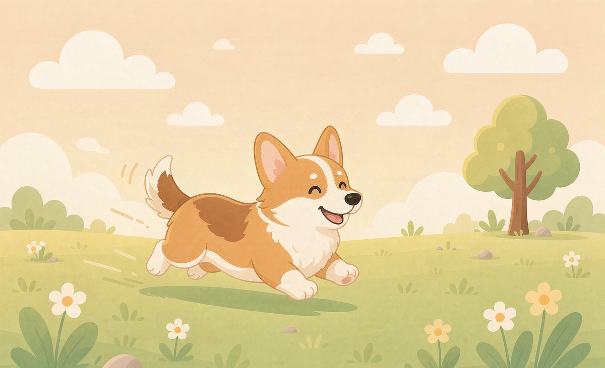
这本手册把犬的 25 个主题写成可以直接照着做的条目。犬的品种差异极大——体型能相差 60 倍，任何剂量与月龄都必须结合你家这只狗的具体情况。
全书分五个部分——与狗共处、喂养、健康、购物清单、常见提问，覆盖从选犬、行为训练、科学喂养，到急诊判断与日常照护。
全书 24 张插图，全部为本手册原创绘制（暖色扁平插画风）。理由很简单：市面上的宠物配图大多是猫的，直接搬来会误导。每一张图都对应本章要讲的那个关键判断，而不是泛泛的“可爱狗狗图”。
| 维度 | 猫 | 犬 |
|---|---|---|
| 驯化史 | 约 1 万年前自我驯化，独居猎手 | 约 1.5 万年以上，群体协作狩猎，被真正驯化 |
| 社交需求 | 独居动物，社交容忍度有限 | 群居动物，社交需求强，独处易分离焦虑 |
| 活动需求 | 短时爆发 + 高处观察 | 按品种差异极大：边牧/pointer 需要的运动量是巴哥的十倍 |
| 服从基础 | 无（靠利益与安全感） | 有（有等级与协作基础），可做系统训练 |
| 口腔护理 | 牙周病、牙吸收病变高发 | 牙周病高发，但咀嚼拖拽玩具能部分自洁 |
| 中暑风险 | 较耐热但会张口呼吸预警 | 犬耐热差得多，短头颅犬（巴哥、法斗、英斗）高危，犬主要靠喘气散热 |
| 核心疫苗 | 猫三联 + 狂犬 | 犬瘟/细小/腺病毒/副流感 + 狂犬；AAHA 2024[4] 已将钩端螺旋体列为犬核心 |
如果你刚接狗回家
先读第 1、3 章，把家改成“幼犬安全区”，并抓紧 3–14 周龄社会化窗口
预约首次体检，带上免疫本
如果你在纠结吃什么
第 6 章定主食框架，第 7 章看鲜食/生食的风险，第 8、9 章管零食与补剂
把钱花在主食上
如果你怕它生病
第 10–14 章：绝育、驱虫、疫苗、牙齿、常见症状
重点背下 GDV、中暑、误食的处置
如果你只想抄清单
直接跳第 15 章“新手狗家长购物清单”
第 16 章是到家 30 天日程
目录
第一部分 · 与狗共处
养狗和养猫是两件事。这一部分先把预期校准。
1新手养狗30问
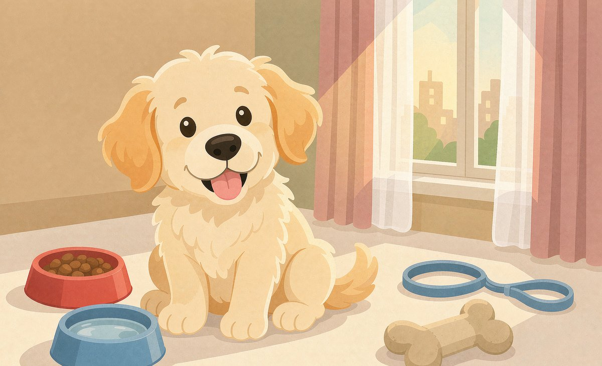
一、我该养多大的狗？
| 体型 | 代表犬种 | 优点 | 需要想清楚 |
|---|---|---|---|
| 小型（<10 kg） | 泰迪、比熊、博美、吉娃娃、柯基 | 公寓友好、食量小、出行方便 | 需要更高的社会化强度，否则易吠叫、敏感；外出需防大犬扑咬 |
| 中型（10–25 kg） | 柴犬、边牧、拉布拉多、柯基（偏中）、可卡 | 运动与陪伴平衡，训练性强 | 运动量需求高，每天需 1–2 小时 |
| 大型 / 超大（>25 kg） | 金毛、阿拉斯加、萨摩耶、罗威纳 | 性格多数稳定、陪伴感强 | 医疗、食物、洗护、寄养成本成倍上升；大型犬常见骨科问题，需要控制生长速度 |
二、长期成本要算清楚
| 项目 | 小型犬 | 中大型犬 |
|---|---|---|
| 首年疫苗 + 体检 + 绝育 | 1500–4000 元 | 2500–6000 元 |
| 月度主粮 | 150–400 元 | 400–1200 元 |
| 月度驱虫 | 50–150 元 | 100–300 元 |
| 年度体检 | 300–800 元 | 500–1500 元 |
| 洗护美容（每月 1–2 次） | 80–200 元/次 | 150–500 元/次 |
| 寄养（假期） | 50–120 元/天 | 100–300 元/天 |
| 大型犬额外：髋肘关节评估、心脏彩超、麻醉费更高 | — | 单次 500–2000 元 |
三、30 个高频问题快答
| 问题 | 答案 |
|---|---|
| 狗一定要打疫苗吗？ | 核心疫苗强烈建议；狂犬在中国属强制免疫，办犬证必需。见第 12 章 |
| 幼犬多大可以接回家？ | 至少 8 周龄。CVMA[8]《动物福利友好繁育舍[11]（犬）评价规范》明确：8 周龄以下、未断奶的犬不宜出售 |
| 狗必须绝育吗？ | 强烈建议，但大型犬的月龄需与兽医商量（涉及骨骼发育）。见第 10 章 |
| 小狗刚到家可以洗澡吗？ | 不建议。到家 7 天内不洗澡，脏了用宠物湿巾擦 |
| 狗可以吃猫粮吗？ | 不可以长期吃。猫粮蛋白脂肪过高，犬长期吃易胰腺炎、肥胖；且猫粮含牛磺酸非犬所需。应急一两顿可以，长期不行 |
| 猫可以吃狗粮吗？ | 绝对不可以。狗粮缺牛磺酸，猫长期吃会致心肌病与失明 |
| 狗能吃骨头吗？ | 只能给生骨头，且大小合适。熟骨头绝对禁止（易碎成尖片刺穿肠道） |
| 狗吃草是病吗？ | 多数是正常行为（好奇、纤维需求、轻微胃不适）。若频繁且伴随呕吐，需就诊 |
| 狗一天要遛几次？ | 至少 2 次；中型犬以上每天需 1–2 小时有效运动（含嗅闻与奔跑） |
| 狗能憋尿多久？ | 成年犬 6–8 小时为宜；幼犬月龄 + 1 小时为上限（3 月龄约 4 小时） |
| 狗必须办犬证吗？ | 多数城市要求办证并接种狂犬疫苗，否则可能被处罚 |
| 小狗咬手怎么办？ | 那不是“凶”，是缺乏咬合抑制训练 + 把手当玩具。见第 4 章 |
| 狗需要刷牙吗？ | 需要，越早越好。见第 13 章 |
| 狗怕热还是怕冷？ | 犬普遍怕热，散热靠喘气，效率低。短头颅犬高危。见第 19 章 |
| 狗能吃人的饭吗？ | 不建议。高盐高油，且葱蒜洋葱、葡萄、木糖醇对犬有毒 |
| 狗鼻子干是病吗？ | 不是。睡觉后鼻头干正常；配合精神差、食欲差才需注意 |
| 狗发抖是什么原因？ | 冷、紧张/害怕、疼痛、低血糖（幼犬）、神经系统问题。结合场景判断，持续发抖就医 |
| 公狗也会得乳腺肿瘤吗？ | 会，但概率远低于母犬 |
| 狗老了会怎样？ | 7 岁（大型犬）/8 岁（小型犬）进入老年期，需半年一次体检，关注肾、心、关节、牙齿、认知 |
| 狗能一直吃幼犬粮吗？ | 不建议。幼犬粮能量与钙磷高，成年后长期吃易肥胖与关节负担 |
| 狗拉稀能自己好么？ | 轻微软便 1–2 次可观察；水样便 + 精神差 + 呕吐需就医 |
| 狗可以吃生鸡蛋吗？ | 不建议。生蛋清含抗生物素蛋白，长期吃致生物素缺乏；且有沙门氏菌风险 |
| 狗能吃胡萝卜吗？ | 可以，熟制或切小块生喂，是很好的低热量零食 |
| 狗需要剪指甲吗？ | 需要，每 3–4 周一次。见第 18 章 |
| 狗有分离焦虑怎么办？ | 见第 4 章：逐步脱敏 + 独处训练，严重者需行为兽医介入 |
| 狗能坐电梯/进商场吗？ | 按各地规定与场所要求；出行建议用航空箱或抱在怀里 |
| 狗需要挤肛门腺吗？ | 多数狗排便时能自行排出。不要常规去挤，摩擦过度反而会致炎症。见第 18 章 |
| 狗可以喂牛奶吗？ | 多数成年犬乳糖不耐，易腹泻。可用宠物羊奶粉替代 |
| 小狗什么时候可以出门？ | 打完第 2 针后可以在“不接触其他犬”的安全地面活动；完成全部基础免疫（≥16 周龄）后再去犬多的地方 |
| 狗狗多大算成年？ | 小型犬约 10–12 月龄，大型犬 18–24 月龄 |
四、30 问的犬版答案
| # | 问题 | 犬的答案（与猫逐条对照） |
|---|---|---|
| 1 | 好养吗？ | 犬投入的精力远高于猫。 犬是群居动物，需要每天 2 次外出、1–2 小时有效运动、持续的陪伴与训练。养狗不是“养个伴”，是一份每天都要兑现的遛狗承诺。 |
| 2 | 一个月要花多少钱？ | 小型犬约 300–700 元/月；中大型犬 800–2000 元/月（含主粮、驱虫、洗护摊销）。约为猫的 2–5 倍，主要差在运动、洗护与体型带来的医疗成本。 |
| 3 | 可以活多久？ | 小型犬 12–16 岁，中型 10–14 岁，大型 8–12 岁，超大型常不到 10 岁。⚠️ 与猫相反：犬的体型越大，寿命越短。 |
| 4 | 要绝育吗？ | 建议绝育，但 ⚠️ 时机必须与兽医商定（尤其大型犬，涉及骨骼发育闭合与部分肿瘤风险权衡）。不要照搬猫的“尽早绝育”。 |
| 5 | 绝育手术危险么？ | 常规手术，技术成熟。⚠️ 但短头颅犬种（巴哥、法斗、英斗）麻醉风险显著高于普通犬，术前必须做麻醉评估。 |
| 6 | 会长多重？ | ⚠️ 没有统一答案：从吉娃娃 1.5 kg 到马士提夫 90 kg，跨度是猫的十几倍。体重管理一律以 BCS 体况评分 + 品种标准 为准。 |
| 7 | 一天吃几顿？ | 幼犬 3–4 顿，成犬 2 顿。⚠️ 犬不能“放一周粮自助”——犬会暴食，且大型犬深胸品种有胃扭转（GDV）致命风险，必须定时定量、餐后 1 小时不剧烈运动。 |
| 8 | 吃鱼油会毛发好吗？ | 全价犬粮已配平，无需额外补。但 ⚠️ 与猫不同：Ω-3（EPA/DHA）对犬的关节炎、肾脏病、皮肤过敏有较明确的循证支持，这些情况下属于“该补”。 |
| 9 | 要刷牙吗？ | ⚠️ 必须，且比猫更重要——3 岁前约 80% 的犬已有牙周病（猫约 70%）。好消息是：犬通常比猫配合得多。 |
| 10 | 要洗澡吗？ | ⚠️ 与猫完全相反：猫可以几个月不洗，犬建议 2–4 周一次。犬皮脂分泌旺盛、体味重，且会滚脏东西。 |
| 11 | 每天睡多久？ | 成年犬 12–14 小时，幼犬可达 18–20 小时。老年犬睡眠更碎片化。 |
| 12 | 睡哪里？ | ⚠️ 犬的安全感来自主人，但同样需要固定的犬窝——这是学独处、建立规则的基础。可上床睡，但要由你决定规则，且从第一天就固定。 |
| 13 | 需要“遛”吗？ | ⚠️ 必须，这是猫与狗最大的日常差别。犬每天至少 2 次外出，中型犬以上需 1–2 小时有效运动，且嗅闻本身就是运动。 |
| 14 | 出门怎么办？ | 牵引绳是底线（多数城市强制）。远行用航空箱或车载安全带固定，⚠️ 绝不能让犬在车内自由活动。 |
| 15 | 只养一只会孤独吗？ | ⚠️ 会，与猫正好相反。 犬是群居动物，长期独处易发展为分离焦虑（拆家、狂吠、随地排泄）。要么有人陪，要么从幼犬期开始做独处训练。 |
| 16 | 出门几天，狗在家可以吗？ | ⚠️ 不可以。 犬不能像猫一样独留家中数日——必须寄养或安排上门喂养，且每天至少 2 次外出。 |
| 17 | 要封窗吗？ | 犬坠楼风险低于猫，但高层仍需防护。⚠️ 犬的真实风险是从阳台/敞开的车门窜出，因此重点在阳台防护与牵引固定。 |
| 18 | 有什么不能吃？ | 巧克力（可可碱）、葡萄与葡萄干、木糖醇、洋葱大蒜、澳洲坚果、酒精、熟骨头（易碎成尖片刺穿肠道）。详见附录C。 |
| 19 | 会冷会热么？ | 会。⚠️ 犬显著怕热——犬靠喘气散热，效率极低，短头颅犬与双层毛犬种高危。夏季遛狗避开 10:00–17:00，地面温度会烫伤肉垫。 |
| 20 | 会生病吗？ | 会。⚠️ 犬的急症清单与猫不同：胃扭转、中暑、急性胰腺炎、异物梗阻排在前面。详见附录D。 |
| 21 | 喜欢猫吗？能融洽相处吗？ | 犬的捕猎驱动可能被小动物触发，尤以猎犬/梗犬类明显。需要训练 + 全程看护。⚠️ 永远不要让犬与猫单独相处，除非已长期确认安全。 |
| 22 | 会认主人吗？ | ⚠️ 会，而且很明确。 犬有群体结构，会建立清晰的依恋对象与人际排序。这与猫“人类是平等朋友”的关系模型根本不同。 |
| 23 | 从多大开始养比较好？ | ⚠️ 8 周龄以上即可（CVMA 繁育福利规范：8 周龄以下不宜出售）。3–16 周是犬的社会化窗口期，比猫的 2–8 周更长、影响面更广（人、犬、环境、声音、地面材质）。 |
| 24 | 为什么它总跟着我，却不让我抱？ | ⚠️ 与猫相反：多数犬其实喜欢被抱。若抗拒，优先排除疼痛（大型犬的髋肘关节问题、脊柱问题），而不是“性格问题”。 |
| 25 | 养狗人每天要做哪些事？ | ⚠️ 遛 2 次 + 喂 2 次 + 梳毛 + 刷牙 + 陪伴训练。日常投入约为猫的 3–5 倍。 |
| 26 | 掉毛吗？ | 掉。⚠️ 分两类：双层毛犬种（哈士奇、金毛、柯基）一年两次大换毛，量极大；常年掉毛型（拉布拉多、比熊掉毛少但需定期美容）。 |
| 27 | 住单间能养吗？ | 可以，但 ⚠️ 仅限小型犬，且必须保证每天户外运动。中大型犬在单间长期居住易出现行为问题。 |
| 28 | 什么品种温顺？ | ⚠️ 品种只决定概率，不决定个体。 且犬的品种间差异（体型、驱动、攻击性、运动需求）远大于猫——选犬要先匹配生活方式，再看品种。 |
| 29 | 性格会变么？ | 会。⚠️ 但社会化窗口期（3–16 周）对犬一生的影响，比猫大得多；幼犬期缺失的经历很难在成年后补回。 |
| 30 | 会死么？ | 会。犬的寿命普遍短于猫，大型犬常不到 12 年。同样一句“埋下一颗十几年后的悲伤种子”，在犬身上更短、更急。 |
2犬的行为与心理
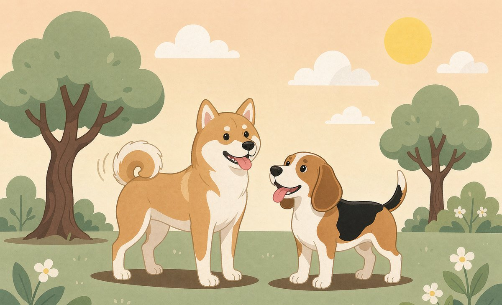
犬是群居的协作猎手，它的行为逻辑是“这段关系里我的位置是什么”，这与猫的“这个环境对我安全吗”完全不同。
一、读懂身体语言
| 信号 | 含义 | 你该做什么 |
|---|---|---|
| 尾巴自然下垂、缓慢摆动 | 放松、友好 | 可以正常互动 |
| 尾巴高举快速摆动 | 高度兴奋/警觉（不一定是开心） | 先观察，避免直接扑抱 |
| 尾巴夹在腹下 | 恐惧、顺从、不安 | 降低音量、给退路、不要逼近 |
| 身体僵硬、重心前移、闭嘴盯视 | 警告信号，攻击前兆 | 立刻停止接近，慢慢后退，不要对视 |
| 露齿 + 低吼 + 背毛竖立 | 明确警告 | 停止一切动作，不要惩罚（惩罚会跳过警告直接咬） |
| 舔鼻、打哈欠、扭头、缓慢眨眼 | 安定信号（Calming Signals） | 它在说“我不想冲突”，你也应该缓和 |
| 肚皮朝上 | 可能是顺从，也可能是恐惧性示弱 | 看整体姿态，不要一律当“求抚摸” |
| 邀玩姿势（前肢趴地、臀部翘起） | 邀请玩耍 | 可以回应 |
二、犬的五个核心需求
- 运动：按品种差异极大。边牧、哈士奇等工作犬每天需要 2 小时以上的高强度运动 + 脑力消耗；巴哥、法斗则需严格控制运动强度（短头颅犬易中暑）。
- 嗅闻：15 分钟的“自由嗅闻散步”≈ 1 小时的快走（在脑力消耗上）。对犬来说，“闻”就是“读新闻”。
- 社交：犬是群居动物，长期独处是分离焦虑的主因。
- 可预期：固定作息（吃饭、遛狗、睡觉的时间）能显著降低焦虑。
- 有边界：不是“凶”，而是清晰一致的规则。规则不清比规则严格更让犬焦虑。
三、五个最常见的“问题行为”
| 行为 | 常见根因 | 解法 |
|---|---|---|
| 拆家/咬坏东西 | 运动与脑力不足、分离焦虑、换牙期（3–7 月龄） | 增加运动与嗅闻游戏；提供合适的啃咬玩具（KONG 塞冻干）；不要事后惩罚（犬无法把几小时前的行为与惩罚关联） |
| 吠叫不止 | 警戒、无聊、分离焦虑、求关注 | 区分类型：警戒吠叫要做“看门 → 回窝”训练；无聊要增加运动；绝不能靠吼回去，那等于一起吠 |
| 拉拽牵引绳 | 缺乏松绳行走训练 | 停走法：一拽就停，绳松才前进。从家里开始练，再过渡到户外 |
| 扑人 | 打招呼的犬类礼节（但人不喜欢） | 忽略 + 转身：扑上来时转身不给关注，四脚着地才给抚摸与零食 |
| 随地大小便 | 幼犬膀胱控制未成熟、作息没建立、疾病 | 定时带出（吃后 5–20 分钟、睡醒后、玩后）；成功立刻奖励；错误现场不要打，要用酶类清洁剂彻底去味 |
四、犬与猫的七个根本差异
对猫给出的很多结论，放到犬身上正好反过来。这一张表是全书最重要的一页。
狗狗的安全感来自主人。猫咪的安全感来自环境。 ——内容底本
⚠️ 所以：犬到新家需要的是你；猫到新家需要的是一个可躲的空间。
猫咪是独居动物，独自生活也能自得其乐。
⚠️ 所以：犬是群居动物，独处是需要训练的，不是天生就会。
猫咪在 2–8 周是否接受过人类的抚摸和照顾，将决定它们终生对人类的观感。
⚠️ 犬的窗口更长：3–16 周，且内容更多——见过的人、犬、声音、地面、被触碰的部位（耳朵、爪子、嘴）。
想训练猫咪通常不会成功，它能理解但懒得配合。
⚠️ 犬恰好相反：犬是地球上最可训练的动物之一。训练犬不是“能不能”，而是“你用不用正向强化”。
在猫咪心中，人类不是主人，而是好朋友，它们和人相处很平等。
⚠️ 犬会明确建立依恋对象与秩序。这不是“服从训练”的借口，但确实意味着规则对犬是安全感，而不是压迫。
给它碗里放一整周的猫粮就好。
⚠️ 犬绝对不能这样喂：会暴食，且大型犬深胸品种有胃扭转（GDV）致死风险。犬必须定时定量。
前爪长得快，每周都要剪一次；后爪长得慢，可以 2–3 周剪一次。
⚠️ 犬的指甲更长更硬，每 3–4 周剪一次即可；剪得过勤反而容易伤到甲床，且犬的趾部对疼痛更敏感。
3幼犬到家注意事项
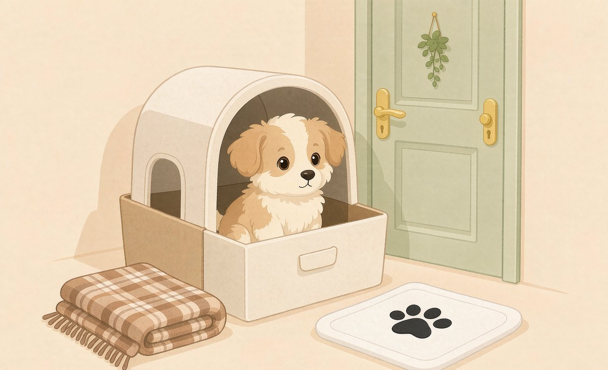
一、到家前：把家改成“幼犬安全区”
| 区域 | 必做 | 为什么 |
|---|---|---|
| 电线/数据线 | 全部收进线槽或用理线管包好 | 幼犬换牙期啃咬欲望强，电击伤可致肺水肿 |
| 地面小物 | 拖鞋、袜子、药片、电池、橡皮筋、硬币全部收起 | 犬的肠梗阻手术里，袜子与玩具碎片是常客 |
| 阳台/窗户 | 全部封网（金刚网或防护网） | 高层坠楼在幼犬期高发 |
| 垃圾桶 | 换成带盖且犬打不开的 | 厨余（尤其熟骨头、洋葱、葡萄）是中毒高发源 |
| 室内植物 | 按附录C 清单清理 | 百合、绿萝、夹竹桃、苏铁等对犬有害 |
| 爬楼梯 | 幼犬期尽量抱上抱下 | 幼犬髋关节发育未完成，反复上下楼梯会增加关节疾病风险（尤其大型犬） |
| 围栏/围栏门 | 设置安全区（围栏 + 尿垫区 + 窝） | 既能限制破坏，也让幼犬有安全感 |
二、到家第 1–14 天日程
| 时间 | 做什么 | 不要做什么 |
|---|---|---|
| 第 1 天 | 限缩在围栏/一个房间；用前主人给的粮；安静休息 | 不要全屋放开、不要洗澡、不要带去遛（未完成免疫） |
| 第 2–3 天 | 建立固定地点如厕；观察进食饮水与排便 | 不要频繁抱来抱去 |
| 第 4–7 天 | 约首次体检（体检 + 粪检 + 传染病快检 + 驱虫） | 不要在体检前换粮或叠加驱虫 |
| 第 8–14 天 | 抱着出门做社会化（见第 4 章）；按免疫程序补疫苗 | 不要把幼犬放到公共地面（未完成免疫前） |
三、第一周必须盯的五件事
有进食有饮水有排尿有成形排便精神状态有清醒期眼鼻无脓性分泌物体温正常（37.5–39.2 ℃）四、家里已有其他宠物
- 先隔离 7–14 天，各自完成体检与驱虫。
- 气味交换：用毛巾擦拭后互换给对方闻。
- 隔栏见面：两边同时喂食或玩耍，建立正面联想。
- 短时共处：全程有人看护，观察是否僵住、盯视、低吼（有则退回上一步）。
- 注意：成年猫需要真正的“避难所”（高处、可全身而退的通道）；犬与猫同住，永远不要让犬单独与猫相处。
五、头 48 小时怎么做
- 到家前先封窗/封阳台，并把电线、药品、小物件收好。
- 到家第一天不要激烈互动，先让它吃饱、喝水、睡一觉。
- 用引导把它带到排泄点，而不是按住它训斥。
- 家中曾养过病犬的，必须消毒——犬瘟、细小在环境中可存活数月到一年。
- 出门/回家看疫苗本，并核对免疫记录是否可查。
- ⚠️ 破冰方式不同：猫可以“不去打扰它”；幼犬需要你主动、但温和地建立联系——因为它的安全感来自你。完全不理会，对犬是压力而不是安慰。
- ⚠️ 第一晚安排：幼犬建议睡在能看到你的地方（笼子或围栏放在卧室旁），硬关在远处房间会显著加重分离焦虑。这是与猫相反的。
- ⚠️ 排泄引导从第一天开始并且高频：幼犬憋尿能力约等于“月龄 + 1 小时”。饭后、睡醒、玩耍后立刻带出去，成功当场奖励。
- ⚠️ 不要抱出门“见世面”就以为完成了社会化：3–16 周内需要的是在安全地面的真实体验（不同地面、声音、人、温和的犬）。
- ⚠️ 不能自助喂食。固定餐次、固定地点，并观察每顿吃了多少——这是你发现疾病最早、最可靠的一个信号。
无论是猫还是犬，别把“互动”当成奖励自己的方式。每一次你主动伸手，都应该是安全、可预期、有回报的——这点说得对：日久见人心，谁对它好，它心里清楚。
4训练与建立感情
犬是世界上唯一可以稳定接受人类指令的非人动物。训练不是“管教”，而是你与它之间的沟通方式。
一、黄金窗口：3–14 周龄社会化
- 社会化窗口期内（约 3–14 周龄，可持续到 16–18 周）接触过的东西，会被犬视为“正常”；接触不到的，成年后可能一辈子恐惧。
- 要接触：不同性别/年龄的人（尤其戴帽、骑车的、推车的）、雨伞、气球、塑料袋、各种地面（瓷砖/金属/木地板/草地）、吸尘器、门铃、汽车声、洗衣机声、电梯。
- 正确做法：疫苗完成前抱着出门、坐车兜风、坐在车里看世界，不要落到公共地面。家中播放环境音效做脱敏。
- 原则：每次新体验都要让它觉得是好事（给零食），而不是“硬塞体验”。一次惊吓可能抵消十次好体验。
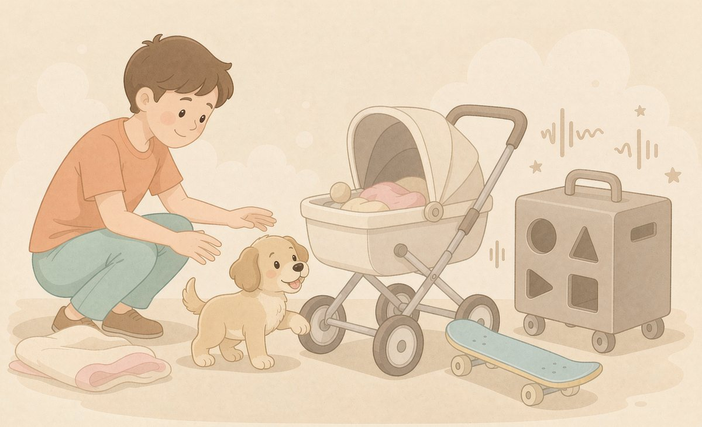
二、必学的五个基础指令
| 指令 | 作用 | 训练要点 |
|---|---|---|
| 坐下 | 一切行为的基础，用于控制冲动 | 零食从鼻尖向头顶上方引导；臀部落地瞬间标记（“好”或响片）+ 奖励 |
| 过来（召回） | 保命技能，最重要 | 永远不要惩罚回到你身边的犬。每次召回都给高价值奖励；先在无干扰环境练到 100% 再加难度 |
| 等待/别动 | 防止冲门、冲车 | 从 1 秒开始，逐步延长；练习场景：开门、放粮碗、过马路 |
| 放下 | 防止误食、抢东西 | 用“交换”而不是硬抢——给一块更好的零食换取嘴里的东西 |
| 牵引绳松绳行走 | 日常幸福感的关键 | 停走法 + 变换方向；绝不要用伸缩绳教松绳行走（它奖励“拉”） |
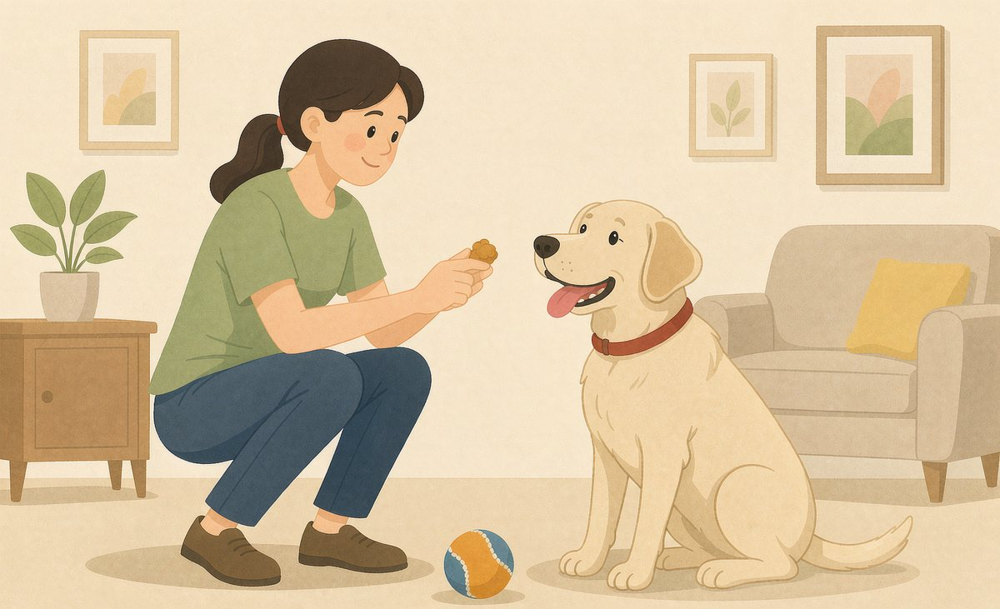
三、奖励与惩罚的正确用法
- 奖励时机：行为发生后 0.5–1 秒内。晚了犬不知道你在奖励什么。
- 奖励等级：日常干粮 = 一般；冻干/鸡肉 = 高价值；高价值奖励只用在关键指令（召回、陌生环境）。
- 不要惩罚：事后惩罚无效；体罚会破坏信任、诱发恐惧性攻击。代替惩罚的是“拿走资源 + 引导正确行为”。
- 一致性：全家用同一套口令与规则。爸爸允许上沙发、妈妈不允许，是行为问题最常见的成因。
四、咬合抑制：幼犬咬手的正确处理
- 先理解：幼犬咬手是正常的探索与游戏行为，不是攻击。关键是教“力度”，而不是“不许咬”。
- 方法一（轻咬）：被咬时发出短促高音“哎”，立刻收回手并停止互动 10 秒。反复几次，犬会学会“咬重了 = 游戏结束”。
- 方法二（重咬或兴奋度高）：立刻结束游戏并离开房间，让「咬人」与「失去你」建立关联。
- 替代方案：手里永远有一个合法啃咬物（玩具/咬胶），它咬手就把玩具塞过去，咬玩具时大力表扬。
- 绝不要：打嘴、捏嘴、把手塞进喉咙、大声吼叫。这些会让犬把手与疼痛关联，长大后可能发展为手靠近就防御性咬人。
五、抚摸、互动与训练
- ⚠️ 猫：嘴巴以外的雷区是肚皮、尾巴、爪子。明确写“很多猫咪被摸肚子的第一反应就是咬你一口”。
- ⚠️ 犬：多数犬喜欢被摸肚皮、揉耳根、挠胸口——尤其在你蹲低、侧身、不俯视它的姿势下。
- 共通安全区：耳根后、下巴、胸口、背部（顺着毛流）。
- 共通铁律：任何动物在进食、睡觉、护着玩具时都不要去摸，这是被咬的头号场景。
- 手心喂食 → 对犬同样有效，且是建立“你 = 资源分配者”最快的方式，也是训练的起点（零食奖励）。
- 抚摸它挠不到的地方 → 犬同样适用；顺带做全身脱敏抚摸（摸耳朵、爪子、尾巴、张嘴看牙），将来体检、剪指甲、刷牙会省一半力气。
- 踩奶 → 犬无此行为。犬的对应是贴靠（leaning）：身体重量压在你腿上，是犬表达信任与依恋的方式。
- 剪指甲 → ⚠️ 犬每 3–4 周一次（猫前爪每周）。犬的指甲更长更硬，且长期不剪会导致趾部变形、走路疼痛。
- 偏袒原住民 → 引入新犬/新猫时同样成立：⚠️ 但犬的次序感更强，必须明确谁是“先来的”，否则易打架。
- 每天玩一会儿 → 对犬不是“一会儿”，是 1–2 小时。且“嗅闻散步”和“奔跑”要分开安排。
- 零食拉近感情 → 对犬就是训练零食。⚠️ 但零食热量要计入日粮，肥胖是犬最常见的问题之一。
- 语言沟通 → ⚠️ 与猫不同：犬能学会大量词汇与口令。关键不是“说得多”,而是口令一致、全家统一、当下奖励。
- 平起平坐 → 对犬同样是信任信号。避免长时间俯视、按压头部——这在犬语里是压制。
- 朝它闭眼 → 犬不吃这套（那是猫语）。犬的对应是避免长时间直视，⚠️ 直视在某些犬身上会被读作挑战。
- 让它来你腿上/上床 → 犬更会主动索取身体接触。⚠️ 但要由你设定“什么时候可以”，否则会演变成推挤、护窝。
5犬与人类的共生史
犬是人类最早驯化的动物。这段历史解释了为什么犬能理解人的手势、表情，甚至能分辨人的情绪。
一、时间线
| 时期 | 关键事件 | 对今天的意义 |
|---|---|---|
| 约 2–4 万年前 | 欧亚大陆的灰狼亚群开始靠近人类营地，利用人类剩余食物 | 犬是与人类最“老”的伙伴，早于农业、早于家畜 |
| 约 1.5 万年前 | 出现形态明确的家犬遗骸（德国波恩-奥伯卡塞尔等） | 驯化不是“人抓了狼来养”，而更可能是双向选择 |
| 新石器时代—古代 | 犬分化出狩猎、护卫、牧羊、拉雪橇等功能 | 品种的多样性来自功能需求，而非审美 |
| 19 世纪 | 维多利亚时代兴起犬展与品种登记，品种逐渐被“标准化” | 近百年的人工选育是很多遗传病的根源 |
| 近 30 年 | 分子生物学确认：现代家犬全部源自灰狼 | 犬与狼基因差异不到 0.2%，却行为分化极大 |
二、这段历史对养狗人的三个启示
- 犬天生能读懂人。研究显示，犬能跟随人的指向、注视方向甚至眼神；这种能力在狼身上基本不存在，是驯化过程中被共同“选择”出来的。这意味着：你的手势、语气、身体姿态，比你喊的口令更重要。
- 犬的社交逻辑来自狼群，但不是“争首领”。现代行为学已基本放弃“阿尔法狼/支配理论”——真实狼群是以繁殖对为核心的家族。所以“压制它、当老大”是错误的训练观，正确方向是“清晰规则 + 可靠奖励”。
- 品种是可预期的倾向，不是命运。边牧有牧羊本能、猎犬有嗅猎冲动，这些是长期选育的结果；但具体行为仍大量取决于个体经历与社会化。买狗前研究品种，是有责任心的表现。
第二部分 · 喂养
犬是杂食偏肉食（facultative carnivore），与猫的“绝对肉食”不同——这意味着更灵活，也更容易被喂错。
6狗粮
一、犬的营养需求
犬在演化中保留了消化淀粉的能力（与狼相比，犬的淀粉酶基因拷贝数显著更多），因此是“偏肉食的杂食动物”。这意味着碳水可以吃，但不代表高碳水好。
| 阶段 | 粗蛋白（干基） | 粗脂肪 | 关键 |
|---|---|---|---|
| 幼犬 / 生长发育期 | ≥22%–28% | 8%–17% | 钙磷比严格 1.2–1.4:1；大型犬幼犬需控制能量密度与钙摄入，防骨骼畸形 |
| 成犬（普通活动量） | ≥18%–25% | 9%–15% | 按活动量调整 |
| 成犬（高活动/工作犬） | ≥25%–30% | 15%–20% | 拉雪橇、追猎等工作犬 |
| 老年犬 | ≥18%（老年犬不应盲目降蛋白） | 8%–12% | 关注肾指标；蛋白质量比数量重要 |
| 减重犬 | ≥20% | 低脂 | 减重靠控制总热量 + 增加纤维，不是靠减蛋白 |
二、怎么读配方表
- 看前 3–5 位原料：应为明确动物蛋白（鲜鸡肉、鸡肉粉、脱水羊肉），而不是“谷物”“玉米”“小麦”打头。
- 看是否有明确标注比例：如“鲜鸡肉 26%、脱水鸡肉 15%”。只写“肉类及其制品”是不透明的。
- 看是否满足 AAFCO / 欧盟 FEDIAF 全价营养标准：包装上标注“全价”且有标准号，比“天然”“无谷”这类词重要得多。
- 大型犬幼犬必看：钙含量与能量密度。过量补钙会显著增加骨软骨病（OCD）与髋关节发育不良风险——这是大型犬喂养中最常见的错误。
- 不要迷信“无谷”：犬的谷物过敏很少见；真实过敏原多为动物蛋白（牛肉、鸡肉、乳制品、小麦偶见）。无谷粮用豆类替代，有研究提示与犬扩张型心肌病（DCM）存在关联争议，选择时优先看是否有牛磺酸/左旋肉碱添加 + AAFCO 认证。
| 类型 | 优点 | 缺点 |
|---|---|---|
| 膨化干粮 | 方便、经济、耐存、有一定洁齿作用 | 含水量低（约 10%） |
| 湿粮/罐头 | 含水量 75%+，适口性好，有利泌尿与老年犬 | 贵，开封需冷藏 |
| 冻干（复水） | 接近生鲜营养、适口性好 | 贵；必须正确复水，干喂有呛噎风险 |
| 鲜食/自制 | 可控、新鲜 | 极易营养失衡，必须有兽医营养师配方 |
| 处方粮 | 针对肾病、结石、过敏、糖尿病等 | 必须经兽医诊断后使用 |
三、喂多少、喂几次
- 按体况评分（BCS），不按包装建议。包装建议常偏高，先按 80% 起，每 2 周评估一次腰线与肋骨。
- 幼犬：2–3 月龄每天 4 餐；3–6 月龄 3 餐；6 月龄后 2 餐。幼犬不可自由采食（易肥胖，大型犬尤其危险）。
- 成犬：每天 2 餐定时定量，15–20 分钟收碗。
- 老年犬：2 餐，若食欲下降可改 3 餐少量。
- 换粮 7 日法：第 1–2 天 25%、3–4 天 50%、5–6 天 75%、第 7 天全换。（CVMA[8]《动物福利友好繁育舍[11]（犬）评价规范》亦推荐 7 日换粮过渡法）
四、狗粮 19 问逐条详解
| # | 问题（猫） | 犬的答案（与猫逐条对照） |
|---|---|---|
| 1 | 要吃猫粮吗？老一辈说，吃剩饭也行。 | 犬比猫能忍剩饭——犬是杂食动物，对淀粉的消化能力远强于猫。但“能吃”≠“该吃”：长期剩饭会盐分/油脂超标、钙磷失衡、蛋白不足。犬可以用全价犬粮，也可以吃科学配比的鲜食；剩饭不是方案。 |
| 2 | 只给猫吃肉行么？ | ⚠️ 犬更耐纯肉，但只喂纯肉同样会出问题（钙磷失衡、营养性继发甲状旁腺亢进）。与猫不同的是，犬对牛磺酸不是必需（犬可自行合成），所以缺牛磺酸的风险远小于猫。但钙不足这条，犬一样中招。 |
| 3 | 只能吃猫粮吗？（三种喂养方式） | 犬同样有 干粮 / 主食罐 / 鲜食（含生骨肉） 三条路。⚠️ 但犬的湿粮占比可以更低——犬喝水比猫主动，泌尿系统对干粮的耐受性远好于猫。 |
| 4 | 三种喂养方式哪种最好？ | ⚠️ 结论对犬不完全成立。猫“生骨肉最好”是因为猫是绝对肉食动物；犬是杂食动物，优质全价犬粮 + 适量鲜食就能达到最佳状态。盲目上生骨肉对犬的额外风险是：细菌污染 + 骨片穿孔 + 大型犬营养失衡更快显现。主食罐头对犬的价格倍率同样约 3–5 倍，但保存时间短这点对大型犬尤其不划算（吃得多）。 |
| 5 | 只吃狗粮，狗会腻么？ | ⚠️ 犬比猫更容易“挑食”——因为犬的嗅觉更发达、学习能力更强，一旦发现“拒食能换来更好吃的”，就会固化行为。所以犬的“腻”往往是被训练出来的，而不是生理性厌食。对策：定时定量、15 分钟收碗、不因拒食而加料。 |
| 6 | 狗爱吃的狗粮，就是好狗粮么？ | 与猫同理：适口性只是一部分。适口性极好的粮往往靠油脂与诱食剂，对犬的直接后果是软便与肥胖。 |
| 7 | 怎么判断一款狗粮是好是坏？ | 犬与猫的判断框架相同，但数值不同：① 看完整营养充足性声明（符合 AAFCO/NRC 全价标准）；② 成犬干基粗蛋白一般 ≥22–25%（不是猫的 26–35%）；③ 原料前几位应为明确动物蛋白；④ ⚠️ 大型犬幼犬必须看钙含量（约 1.0–1.8% 干基、钙磷比 1.2–1.4:1）——钙过量会直接导致骨软骨病与髋关节发育异常，这是犬特有的坑。 |
| 8 | “某犬种专用粮”“肠胃专用粮”是怎么回事？ | ⚠️ 与猫不同，犬的体型相关配方有真实科学依据：大型犬幼犬粮（控钙、控能量密度）与小型犬粮（颗粒大小、能量密度）是有意义的。但“某犬种专用粮”（如“金毛专用”“泰迪专用”）基本是营销。区分方法：看它改的是钙/能量/颗粒（真实），还是只改了个名字和包装（营销）。 |
| 9 | 鸡肉配方好，还是鱼肉配方好？ | 与猫一致：鸡肉性价比与低敏性更优。⚠️ 但犬对鱼类的过敏率比猫更低，且犬对 Omega-3 的需求更明确（关节炎、皮肤病、肾病有循证获益），所以含鱼油的犬粮是有实际价值的，与猫“海鱼配方纯属营销”的结论不同。 |
| 10 | 稀有肉源好不好？ | 与猫一致：营销为主。⚠️ 但犬有一个真实例外：新型单一蛋白（novel protein）处方粮（如鹿肉、袋鼠肉、水解蛋白）用于食物过敏的诊断与治疗，这是有循证依据的。日常粮里的“稀有肉”仍是噱头。 |
| 11 | 进口粮好，还是国产粮好？ | 与猫一致：国产上限高、价格划算；进口下限高、标准严。⚠️ 犬的额外考虑：大型犬吃得多，单位成本敏感度是猫的 5–10 倍，选粮时“每千卡价格”比“每公斤价格”更重要。 |
| 12 | 粗蛋白含量高好，还是低一点好？ | ⚠️ 犬的数值带与猫不同：成犬 AAFCO 最低粗蛋白 18%（干基），常规好粮在 22–30%。犬做到 35% 以上多是运动犬/工作犬需求，普通家庭犬长期高蛋白会加重肾脏负担（尤其已有肾病时）。猫的“35% 才是有料好粮”不能直接套到犬身上。 |
| 13 | 为什么宣传“无谷、无豆”狗粮？ | ⚠️ 犬这一条要特别小心：犬对谷物过敏的比例也很低；更关键的是，美国 FDA[18] 曾调查“无谷/高豆类犬粮”与犬扩张型心肌病（DCM）的关联，结论是“关联未证实但值得警惕”。不要为“无谷”付溢价，也不要长期只喂高豆类配方。 |
| 14 | 高鲜肉占比高好还是不好？ | 好，但成本提高。犬同理。 |
| 15 | 烘焙粮好，还是膨化粮好？ | 营养上区别不大。犬同理。 |
| 16 | 推荐狗粮品牌 | ⚠️ 推荐的是猫粮品牌，与犬不通用。本手册不给具体品牌背书（品牌存在批次差异与商业关系）。判断标准见第 7 条：营养充足性声明 > 蛋白数值 > 营销概念。 |
| 17 | 推荐狗粮工厂（“厂大于牌”） | “厂大于牌”这个逻辑对犬同样成立——代工厂资质与品控确实与成品稳定性强相关。但注意：同一工厂会同时代工高端粮与低价粮，厂名只能当加分项，真正要看的是具体批次的检测报告。 |
| 18 | 家里有猫，猫粮和狗粮能混吃么？ | ⚠️ 两个方向都不行：犬吃猫粮 → 蛋白脂肪过高、且猫粮含牛磺酸与更高脂肪，犬长期吃易肥胖与胰腺炎；猫吃狗粮 → 猫会牛磺酸缺乏（致盲、心肌病）、精氨酸缺乏可在数小时内致死。必须分开喂，分开碗，分开位置。 |
| 19 | 更换狗粮要注意什么？ | 与猫同理，用 7 日过渡法。⚠️ 犬的额外风险：换粮过快是犬急性胃肠炎与胰腺炎发作的常见诱因，尤其对高脂换粮（如从普通粮换到高脂粮）要格外慢。深胸犬换粮当天还要避免剧烈运动（见第 14 章胃扭转）。 |
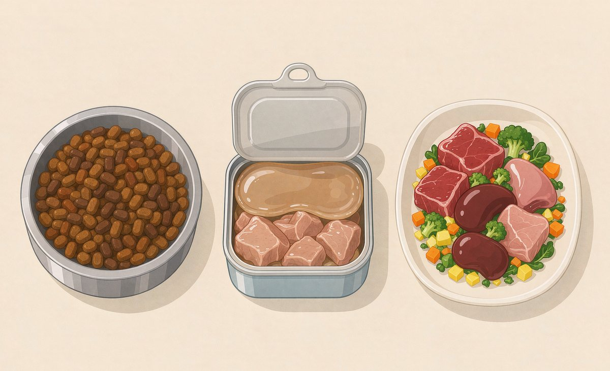
7生骨肉与鲜食
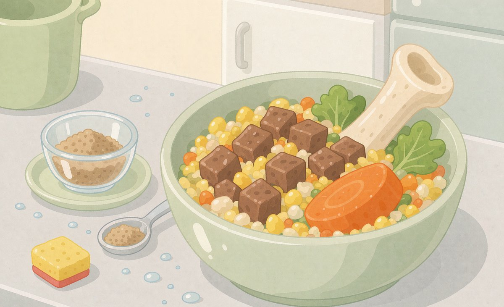
犬的消化道比猫更能容忍杂食，但生食的风险结构是一样的：病原、寄生虫、配平。
一、支持方论点
- 毛发、口腔、粪便量在部分犬身上确有改善；适口性好。
- 水分含量高，对泌尿系统友好。
- 对食物过敏犬，可用单一蛋白鲜食做排查（elimination diet），这是一种有临床价值的用法。
二、四个必须知道的风险
| 风险 | 具体 | 后果 |
|---|---|---|
| 细菌污染 | 生鸡肉沙门氏菌、弯曲杆菌；生牛肉大肠杆菌 O157；生猪肉 | 犬可致胃肠炎/败血症；人（尤其孕妇、幼儿、老人）经手可感染 |
| 寄生虫 | 生猪肉弓形虫包囊、生淡水鱼华支睾吸虫、生野味 | 犬感染，部分可传人；弓形虫对孕妇危害大 |
| 营养失衡 | 只喂肉块/鸡胸 → 钙磷严重失衡；不加内脏 → 维生素 A/D/E 缺乏 | 营养性继发甲状旁腺亢进（骨骼变软、骨折）；幼犬尤其致命 |
| 物理损伤 | 不当大小的生骨、熟骨 | 牙齿断裂、食道/肠道穿孔、窒息 |
三、如果要做，把风险压到最低
- 必须有兽医营养师配方（按 NRC/AAFCO 标准配平），绝不能靠网上配方。幼犬、大型犬幼犬尤其严格。
- 肉源用人类食品级冷冻肉，采购后立刻分装冷冻，喂前 24 小时冷藏解冻。不用市场散装肉、不用猪肉、不用野味。
- 冷冻不能杀灭所有寄生虫。家用冰箱做不到稳定灭活弓形虫；鱼类必须熟制或使用商业生食级冷冻鱼。
- 骨头只用生的、大小合适的（禽类软骨、颈骨，带足够肉）。熟骨一律禁止。
- 卫生：专用砧板刀具，热水 + 洗涤剂清洗；犬碗每餐后洗，剩食 30 分钟内收走；处理后洗手。
- 高危人群不参与：孕妇、5 岁以下儿童、免疫功能低下者。
- 每 6 个月粪检 + 血检；出现呕吐腹泻立即停喂就医。
四、生骨肉 12 问逐条详解
⚠️ 不一样。 猫是强制肉食，所以“生肉 = 天然食谱”的说法逻辑很强；犬是兼性杂食，野外犬科动物会吃猎物肠道内未消化的植物内容物，所以犬的天然食谱本来就包含一部分植物。“犬应该只吃肉”在生物学上是错的。
同样不行。犬的钙磷失衡后果是营养性继发甲状旁腺亢进、骨骼疼痛与骨折；幼犬尤其严重。牛磺酸对犬不是必需，但钙、锌、维生素 D、维生素 E 一样不能少。
不是。优质全价犬粮 + 适量鲜食就能达到最佳状态。犬对生食的收益证据，远弱于猫。
⚠️ ① 骨头：犬啃骨的力量远大于猫，熟骨头碎裂成尖片导致食管/肠道穿孔的病例在犬中最多见。② 大型犬营养失衡显现更快（体重基数大）。③ 细菌污染：犬会把生肉残渣带得满屋都是（甩头、舔脸），家人暴露风险高于猫家庭。
吃生食的犬建议每 3 个月粪检 + 驱虫；且心丝虫预防不能省（蚊媒传播，与生食无关）。
断奶后即可（约 6–8 周），但幼犬期是骨骼发育关键期，钙磷比必须精确配平，不建议家庭自行配制。
犬的“拒食”多数是行为问题：要么被零食/人食养刁了，要么质地不适。对策：定时定量、撤走诱惑、不追着喂。犬比猫容易纠正得多。
⚠️ 对犬更贵——一只 25 kg 的犬每天需要约 500–700 g 肉，是猫的 5–10 倍。时间成本与存储压力也成倍增加。
同结论：理论上生骨肉更“天然”，实际上大部分家庭自制的鲜食不如顶级全价犬粮营养全面。
⚠️ 犬换鲜食后拉稀比猫更常见，尤其高脂鲜食会诱发胰腺炎（雪纳瑞、可卡、腊肠等品种风险更高）。出现呕吐 + 弓背腹痛，立即就医。
与猫不同，犬的鲜食可以且应该包含少量植物成分（南瓜、胡萝卜、绿叶菜、少量谷物），共同点是：必须有钙源 + 必须按 NRC/AAFCO 配平。
对绝大多数家庭：优质全价犬粮 + 每天一次可控的鲜食加餐，在收益、风险、时间成本三者之间是最优解。不必为了“生骨肉”焦虑。
8零食
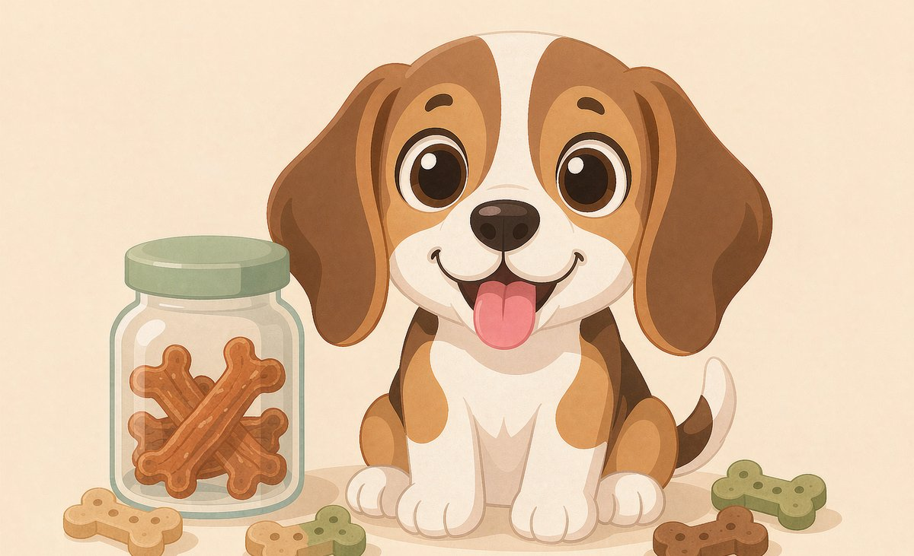
一、三条铁律
- 零食热量 ≤ 每日总热量 10%。训犬用零食要把当日主粮按热量扣除，否则容易肥胖。
- 零食是训练工具，不是“讨它开心”的日常投喂。在正确行为出现时给，才叫训练。
- 零食不是正餐。零食吃饱不吃主食，是挑食与营养失衡的主因。
二、零食分类
| 类型 | 评价 | 说明 |
|---|---|---|
| 冻干单一原料（鸡胸/鸭肉/牛肉/三文鱼） | ✅ 首选 | 成分干净、蛋白高、可掰成小块当训练奖励 |
| 风干肉干 / 咬胶（牛筋、牛鞭、羊耳） | ✅ 推荐（注意尺寸） | 尺寸要比犬的喉咙大，防整块吞入；有监督地啃 |
| 蔬菜类（胡萝卜、黄瓜、南瓜） | ✅ 推荐 | 低热量，适合减重犬；切小块或蒸熟 |
| 磨牙棒 / 洁齿骨 | ✅ 辅助 | 有一定洁齿作用；选有 VOHC 认证的产品更可靠 |
| KONG 塞冻干/湿粮后冷冻 | ✅ 强烈推荐 | 消耗精力 + 独处安抚的最佳工具 |
| 人吃的肉（水煮无盐） | ✅ 少量 | 不加任何调料；不带骨头 |
| 生皮卷（Rawhide） | ⚠️ 谨慎 | 可能整片呛入；且多为化工处理，建议避开 |
| 鸡脖/鸭脖（生的） | ⚠️ 需专业配平 | 属生食范畴，见第 7 章 |
| 火腿肠、肉干、人用零食 | ❌ 禁止 | 高盐、亚硝酸盐、含葱蒜调味 |
| 巧克力、葡萄、洋葱、木糖醇 | ❌ 剧毒 | 见附录C 剂量表 |
| 任何熟骨头 | ❌ 禁止 | 易碎成尖片，可致穿孔 |
| 猫咪零食 | ❌ 不建议 | 配方蛋白脂肪过高，长期易胰腺炎 |
三、零食的取舍原则
- 零食是“区别于主食”的，相当于人的肯德基——好吃，不适合长期吃。
- 零食的作用是拉近关系，犬比猫更吃这一套（食物驱动是犬训练的核心）。
- 不宜喂太多。
通行建议：零食热量 ≤ 每日总热量 10%。对一只 20 kg 的犬（约 900 kcal/天），零食上限约 90 kcal/天，大约相当于 2–3 根磨牙棒或一小把训练零食。
- 磨牙骨 / 生皮（rawhide）：有窒息与肠梗阻风险，且很多“骨头”实为压制皮，不易消化。选可消化、尺寸匹配的产品，全程有人看着。
- 任何熟骨头：绝对禁止。鸡骨、猪排骨、牛排骨都会碎成尖片。
- 高脂零食（肥肉、奶酪、油炸物、大量花生酱）：是急性胰腺炎的常见诱因。
- 人类零食（薯片、饼干、巧克力、葡萄干、木糖醇口香糖）：巧克力与木糖醇对犬有明确致死剂量（见附录C）。
- 猫用零食：猫零食脂肪与蛋白配比按猫设计，犬长期吃会超脂。
巧克力、葡萄/葡萄干、洋葱/大蒜/葱/韭菜、木糖醇、酒精、澳洲坚果、生面团、咖啡与浓茶。犬对这些的剂量阈值与猫不同，详见附录C。
训练零食不是“零食”，是工钱。犬每次做对，立刻给、给得小、给得频繁。这是犬训练效率远高于猫的底层原因。
9营养品
一句话：吃的是合格全价粮，绝大多数营养品都不需要。 犬比猫更常被“补出问题”。
一、确实有用的场景
| 成分 | 什么时候需要 | 注意 |
|---|---|---|
| Omega-3（鱼油 EPA/DHA） | 关节炎、皮肤病瘙痒、慢性肾病、高甘油三酯 | 证据等级较高。需兽医定剂量；过量影响凝血与血小板功能，手术前需停 |
| 关节营养（葡萄糖胺/软骨素/MSM/绿唇贻贝） | 大型犬、老年犬、确诊骨关节炎 | 属辅助，不能替代镇痛治疗；大型犬幼犬不推荐随意补（可能与骨发育相关问题） |
| 益生菌 | 急性腹泻恢复期、换粮期、抗生素治疗后 | 选宠物专用菌株；严重腹泻且有全身症状时不能只靠益生菌 |
| 钙/磷 | 仅限自制饮食配平 | ⚠️ 吃全价粮的犬绝不要额外补钙，尤其大型犬幼犬，会显著增加骨软骨病风险 |
| 关节/髋发育问题专用处方粮 | 经影像确诊髋关节发育不良等 | 须兽医诊断后使用 |
| 益生元/纤维 | 便秘、肛门腺问题、体重管理 | 南瓜、洋车前子壳是温和选择 |
二、明确不建议的
- “美毛粉/营养膏/多维”当日常补：全价粮已配平，额外补可能过量。脂溶性维生素（A、D、E、K）过量会中毒；维生素 D 过量可致肾衰。
- 大蒜驱虫、生鸡蛋美毛、啤酒酵母：均为无依据或有害。大蒜对犬有毒；生蛋清含抗生物素蛋白，长期致生物素缺乏。
- 人用保健品：剂量与辅料都不适配犬，尤其含木糖醇的口服液/软糖。
- 精油类“天然护理”：茶树、尤加利、柑橘类精油对犬也有毒性（剂量低于猫），且犬舔毛会摄入。
三、三种通用补剂 + 犬特有的两种
吃优质全价犬粮的健康犬，绝大部分补剂都不需要。脂溶性维生素（A/D/E/K）过量同样会中毒，且犬的维生素 D 中毒阈值比猫更容易被保健品突破（很多“关节补剂”含维 D）。
- 益生菌：急性腹泻恢复期、换粮期、抗生素治疗后。选犬专用菌株（如粪肠球菌 SF68、动物双歧杆菌）。严重腹泻伴全身症状时就医，不靠益生菌。
- 猫草 → 犬版是“可食用植物”：犬吃草多为正常行为（也可能提示肠胃不适）。真正需要的是充足的膳食纤维（南瓜、胡萝卜、洋车前子壳）。⚠️ 犬没有猫那种“必须靠草排毛球”的需求。
- 羊奶 → 犬版仍然是“低乳糖奶”：犬的乳糖不耐比猫轻，但仍有。幼犬首选犬用奶粉，不要用人用羊奶或牛奶替代。
- 关节营养（葡萄糖胺 / 软骨素 / 绿唇贻贝 / Omega-3）：犬的骨关节炎、髋关节发育不良（CHD）、十字韧带断裂发生率远高于猫，尤其大型/巨型犬。证据等级中等偏上，属辅助，不替代镇痛治疗。控制体重 + 规律低冲击运动的效果优于任何补剂。
- Omega-3（EPA/DHA）：除关节外，对慢性肾病、皮肤病、炎症性肠病有循证获益。剂量需兽医核定（过量影响凝血）。
判断一个犬用营养品该不该买的三个问题：① 我的犬被诊断出相关问题了吗？② 有兽医/文献支持这个成分对这种情况有效吗？③ 它的剂量是给犬（且是该体型的犬）设计的吗？三个都答“是”，才值得买。
第三部分 · 健康
这五章是硬核部分。犬的急诊比猫更急（尤其中暑与胃扭转）。
10绝育
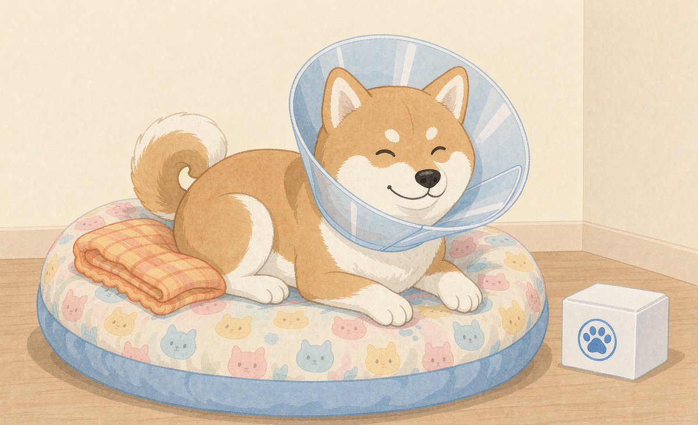
一、不同体型犬的绝育月龄差异很大
| 对象 | 常见建议 | 主要获益 | 需要注意 |
|---|---|---|---|
| 小型犬公犬 | 6 月龄左右 | 减少标记、打斗、漫游；降低前列腺与肛门腺疾病 | 较早绝育与部分行为发育相关，听兽医 |
| 小型犬母犬 | 首次发情后（约 12 月龄） | 降低乳腺肿瘤风险（发情次数越多保护越弱）、消除子宫蓄脓 | 避开发情期手术 |
| 大型犬公犬 | 12–18 月龄（骨骼闭合后） | 同上 | 过早绝育与骨肉瘤、髋关节发育不良、前十字韧带断裂风险升高相关 |
| 大型犬母犬 | 首次发情后 2–3 个月，或 12–18 月龄 | 同上 | 同上；大型犬骨科问题代价高，宁可与兽医详细讨论 |
二、术前准备与必问的三个问题
- 术前检查不能省：血常规 + 生化 + 心脏听诊（中老年犬、拳师犬、杜宾等心肌病高发品种建议心脏彩超）。麻醉风险主要来自未发现的心脏与肝肾问题。
- 禁食 8–12 小时、禁水 2–4 小时（按医院要求）。
- 必问：用什么麻醉（气体麻醉 + 全程监护）？有专人做麻醉监护吗？疼痛管理方案（术前镇痛 + 术后多模式镇痛）是什么？
三、术后护理
| 时间 | 做什么 |
|---|---|
| 当天 | 麻醉未清醒时不要喂食喂水；放在温暖安静、防跳跃的空间；伊丽莎白圈/手术服必须戴好 |
| 术后 1–3 天 | 少量多次给水给食；观察排尿（公犬术后排尿困难需立即返院）；按医嘱给止痛药 |
| 术后 7–14 天 | 每天检查伤口：红肿、渗液、裂开、异味 → 立即返院；严格限制跑跳、上下楼梯、与其他犬追逐 |
| 拆线后 | 第一周仍限制剧烈运动；逐渐恢复 |
四、术前术后的补充要点
猫的体型差异小，结论能一刀切；犬从 3 kg 到 70 kg 跨度极大，绝育时机必须按体型分档，这是犬独有的复杂性。
性激素参与生长板的闭合。过早绝育（尤其大型犬）与十字韧带（前交叉韧带）断裂风险升高、髋关节发育不良、骨肉瘤风险升高存在关联；同时，晚绝育又意味着乳腺肿瘤保护减弱（母犬在首次发情前绝育保护最强）。这是一个双向权衡，必须与兽医按品种、体型、家族史一起定。
- 母犬：降低乳腺肿瘤（首次发情前绝育保护最强）、彻底消除子宫蓄脓（犬的子宫蓄脓比猫常见且致命）。风险：大型犬过早绝育与部分肿瘤/关节问题相关。
- 公犬：减少前列腺疾病（尤其未绝育老龄犬的良性前列腺增生）、肛周腺瘤、打斗与漫游行为。⚠️ 注意：绝育并不会“让犬变乖”——行为问题主要靠训练。
- 猫 vs 犬：猫绝育的收益几乎是一边倒的；犬的收益则要看体型、品种、生活方式做加权，这是重大差异。
⚠️ 是的，犬比猫更明显。 绝育后基础代谢下降、食欲上升，大型犬增重后关节负担成倍增加（体重每增加 1 kg，关节受力增加数倍）。术后必须下调日粮 10–20% 并加强监控。
公犬 500–2000 元、母犬 1000–4000 元（按体重计，大型犬显著更贵）；一线城市、含术前检查与住院则更高。
11驱虫与心丝虫
一、犬常见的寄生虫
| 类别 | 常见种类 | 感染途径 | 危害 |
|---|---|---|---|
| 体内 | 蛔虫、钩虫、鞭虫 | 污染土壤/粪便、母婴传播 | 消瘦腹泻；钩虫可经皮肤感染人（皮肤幼虫移行症） |
| 体内 | 绦虫（犬复孔绦虫） | 吞食跳蚤、食入生肉 | 肛门瘙痒（蹭屁股）、节片可见；可传人 |
| 体内 | 球虫、贾第鞭毛虫 | 污染水源/环境 | 慢性腹泻，需专用药，常规驱虫药无效 |
| 体内 | 心丝虫 | 蚊子叮咬 | 犬是心丝虫的最佳宿主，可致肺动脉高压、右心衰、死亡。治疗费用高且有风险，以预防为主 |
| 体外 | 跳蚤、蜱虫、螨（疥螨/蠕形螨/耳螨） | 环境、草地、其他犬 | 蜱虫可传播巴贝斯虫、莱姆病；蜱媒病可致死 |
二、频率
| 项目 | 幼犬 | 成年犬 |
|---|---|---|
| 体内驱虫 | 每月 1 次至 6 月龄 | 每 3 个月 1 次；有生食/户外高风险/多犬家庭 → 每月 1 次 |
| 体外驱虫（跳蚤/蜱） | 每月 1 次 | 春夏每月 1 次；蜱虫高发区全年每月 |
| 心丝虫预防 | 按地区风险由兽医开处方 | 华南/华东等风险区按月，全年不间断 |
| 粪检 | 到家即做，每 3 个月 | 每年 2 次 |
| 蜱媒病检测 | — | 每年一次（4Dx 快检含心丝虫、莱姆、埃里希体、无形体） |
三、用药安全
- 按体重给药。幼犬生长快，每月重新称重。
- 柯利犬系（柯利、喜乐蒂、澳牧、长毛惠比特等）对伊维菌素类（伊维菌素、莫昔克丁、多拉菌素）敏感，存在 MDR1 基因缺陷，高剂量可致严重神经毒性。这类犬用药前务必告知医生品种。
- 犬用驱虫药不能给猫吃（尤其含氯菊酯的滴剂，对猫剧毒）。
四、心丝虫：犬的核心议题 ⚠️
把心丝虫列在内驱清单里一笔带过；对犬来说，心丝虫是全年预防的头等事项。犬是心丝虫的天然终末宿主——成虫可在心脏与肺动脉内存活数年，导致心力衰竭、肺动脉高压、腔静脉综合征，可致死。传播途径是蚊子，与吃不吃生食、出不出门毫无关系。
⚠️ 猫写的“完全室内可以 1–2 年驱一次”对犬完全不适用：只要所在地有蚊子，全年每月预防是标准做法。蚊子在城市公寓同样存在。
- 体内：蛔虫、钩虫、绦虫（跳蚤是绦虫中间宿主）、鞭虫。幼犬 2 周龄起每 2 周一次至 12 周龄，之后按月到 6 月龄；成犬按生活方式每 1–3 个月或每季度。
- 体外：跳蚤、蜱虫（蜱虫传播巴贝斯虫、莱姆病、埃立克体——犬的蜱媒病比猫严重得多）、螨虫。春夏高发季必须做。
- 心丝虫：全年每月（有蚊地区），或按兽医评估的季节方案。建议每年做一次心丝虫抗原检测再给药。
犬用驱虫药种类多，必须按体重精确给药——尤其 MDR1/ABCB1 基因缺陷犬种（柯利犬、喜乐蒂、澳洲牧羊犬及其混血）对伊维菌素等大环内酯类高度敏感，常规犬用剂量即可致神经毒性甚至死亡。这类犬种用药前必须告知兽医血统，或先做基因检测。
对犬家庭的一个反问：既然犬每月心丝虫预防不能停，为什么不选一片含心丝虫 + 肠道线虫 + 跳蚤/蜱虫的广谱方案，一次解决？这正是犬驱虫比猫简单的地方。
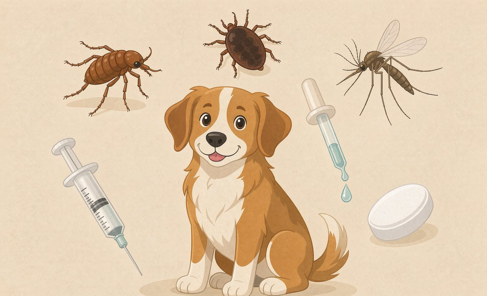
12疫苗
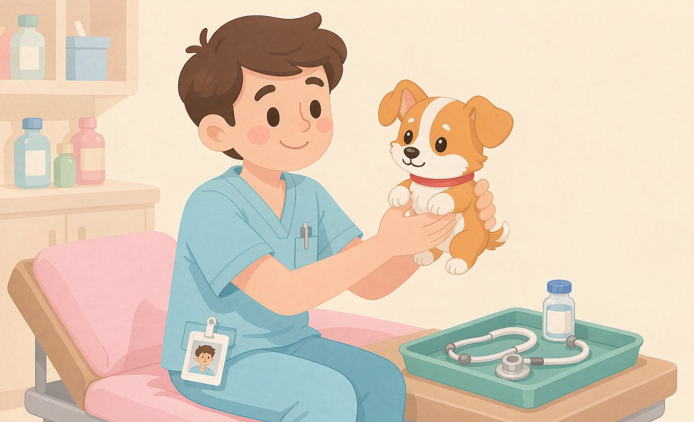
一、犬核心疫苗
| 类别 | 疫苗 | 说明 |
|---|---|---|
| 核心 | 犬瘟热（CDV） | 致死率高，可致神经症状（抽动、瘫痪） |
| 核心 | 犬细小病毒（CPV-2） | 幼犬最凶的杀手之一，剧烈呕吐腹泻 + 白细胞骤降，可在 72 小时内致死 |
| 核心 | 犬腺病毒 2 型（CAV-2） | 防传染性肝炎与呼吸道感染 |
| 核心 | 犬副流感（CPiV） | 呼吸道感染 |
| 核心（法定） | 狂犬 | 中国强制免疫，办犬证必需 |
| 核心（AAHA 2024[4] 更新） | 钩端螺旋体 | 细菌病，经鼠尿污染的水/土壤传播，可致肝肾衰竭，人畜共患；国内南方潮湿地区风险高 |
| 非核心 | 犬舍咳（博德特氏菌 + 副流感） | 常去寄养、犬舍、犬公园的犬建议接种 |
| 非核心 | 莱姆病 | 蜱虫活跃地区可考虑 |
| 非核心 | 犬冠状病毒 | 效果争议，多数指南不常规推荐 |
二、WSAVA 免疫程序
| 阶段 | 时间 | 做什么 |
|---|---|---|
| 首针 | 6–8 周龄 | 多联疫苗第 1 针 |
| 基础免疫 | 每隔 2–4 周 1 针，直到 ≥16 周龄 | 通常共 3 针 |
| 狂犬 | 12 周龄后 | 第 1 针 |
| 幼年补强 | 26–52 周龄（约 6–12 月龄） | 多联 + 狂犬各补 1 针 |
| 成年加强 | 之后每 1–3 年 | 可先做抗体检测（titer）决定 |
三、接种前后规矩
- 只接种健康犬：发热、腹泻、刚到家不足 7 天、刚驱虫不足 3 天 → 推迟。
- 接种前先驱虫，寄生虫感染会影响免疫应答。
- 接种后留院观察 30 分钟。面部肿胀、呕吐、呼吸困难、瘫软 = 过敏，立即处理。（短头颅犬种与小型犬过敏风险相对更高）
- 接种后 7 天内不洗澡、不外出、不换粮、不做手术。
- 免疫期间不做绝育，至少间隔 7 天。
四、犬核心疫苗比猫多一针
与猫只有“猫三联 + 狂犬”不同，犬的核心疫苗多一针：① 犬瘟热 + 腺病毒（传染性肝炎）+ 副流感 + 细小（常合称“犬四联/八联”）；② 狂犬（法定）；③ ⚠️ 钩端螺旋体——AAHA 2024 已将其列为犬核心疫苗（对应 ACVIM[5] 2023 共识），因为它是人畜共患（主人可被感染，导致发热、肝肾损伤，俗称“养狗人的流感”）。
- 首针 6–8 周龄，间隔 2–4 周，一直打到 ≥16 周龄——16 周龄才是终点线，早打完等于可能白打。
- 此后每 1–3 年补强，或先做抗体检测（titer）决定。14–16 周龄完成犬核心系列约 98% 可获多年保护。
- 抗体检测可自 20 周龄起做。
- 犬窝咳（支气管败血波氏杆菌 + 副流感）：常去寄养、宠物店、训练班、狗公园的犬建议接种。
- 莱姆病：蜱虫高发地区、常进草地林地的犬建议。
- 犬流感（H3N8/H3N2）：集体活动多的犬。
- 犬冠状病毒：多数指南不常规推荐。
⚠️ 猫建议家养猫不打狂犬；犬没有这个余地——我国犬类狂犬免疫是法定强制，办证、年检、出行、出入境全部需要免疫证明。犬还必须登记挂牌。这是犬主人无法回避的法定义务。
- 只接种健康犬；发热、腹泻、刚到家不足 7 天、刚驱虫不足 3 天 → 推迟。
- 接种前先驱虫。
- 接种后留院观察 30 分钟；面部肿胀、呕吐、呼吸困难 = 过敏，立即处理。
- 接种后 7 天内不洗澡、不出门、不换粮、不做手术。
- 免疫期间不做绝育（至少间隔 7 天）。
- 记录批号与日期，写进免疫本。
13口腔与牙结石
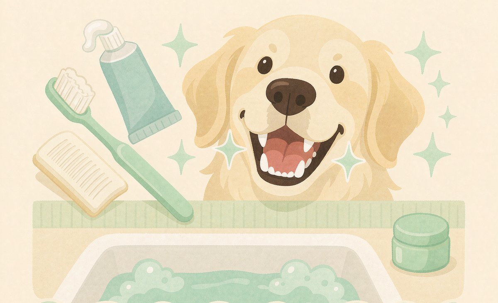
牙周病是犬最常见、也最被忽视的疾病。3 岁前约 80% 的犬已出现不同程度的牙周问题（AVMA / 美国兽医牙科学会数据），是犬的头号常见病。
一、发展过程与危害
食物残渣 → 牙菌斑（24–48 小时内矿化）→ 牙结石 → 牙龈炎 → 牙周袋（牙龈与牙根分离）→ 牙槽骨吸收、牙齿脱落。更严重的是：口腔细菌持续入血，加重心脏（心内膜炎）、肾脏、肝脏负担。小型犬（泰迪、博美、吉娃娃、约克夏）尤其高发。
二、信号识别
| 信号 | 含义 |
|---|---|
| 口臭明显 | 几乎一定存在牙周问题，不是“正常狗味” |
| 牙面黄褐色附着 | 牙结石 |
| 牙龈发红、刷牙出血 | 牙龈炎 |
| 吃干粮时偏头、掉落、只用一侧咀嚼 | 疼痛，可能有牙周脓肿或牙吸收病变 |
| 流口水、食欲下降、体重下降 | 晚期表现 |
| 面部肿胀、眼眶下方隆起 | 牙根脓肿/口鼻瘘，需尽快处理 |
| 家庭手段 | 效果 |
|---|---|
| 刷牙（宠物牙膏 + 犬用牙刷） | ✅✅✅ 唯一真正有效。理想每天 1 次，最低每周 2–3 次 |
| 洁齿骨/磨牙棒（有 VOHC 认证） | ✅ 辅助，有一定机械清洁作用 |
| 洁牙玩具（橡胶带凹凸） | ✅ 轻微辅助 |
| 漱口水/饮水添加剂 | ⚠️ 极有限，不能替代刷牙 |
| 洁牙粮（大颗粒、特殊纤维） | ✅ 轻微，仅作用于咀嚼接触面 |
| 不用麻醉的“手工刮牙石” | ❌ 有害，伤牙釉质且漏掉牙龈下病灶 |
三、专业洁牙（洗牙）
- 必须全身麻醉。犬的牙科检查需要探查牙周袋深度与拍牙片，清醒状态下无法完成。术前需血检 + 心脏评估。
- 必须拍牙片。犬的牙根长、下颌骨薄，下颌臼齿的根尖脓肿可能在 X 光之外才能确诊；且小型犬有牙吸收病变高发。
- 超声洁治 + 抛光：抛光不能省，否则粗糙面会更快重新结石。
- 拔除无法保留的牙。犬拔牙后多数吃得更香——一颗坏牙的持续疼痛远大于缺牙。
- 术后维护：洗完不刷，1–2 年结石就回来了。
四、犬的口腔问题比猫更严重 ⚠️
猫说“3 岁以上 70–80% 有牙结石”。犬的数据更高：AVMA / VOHC 口径是3 岁前约 80% 的犬已出现牙周病。而且犬的牙石沉积速度更快（唾液 pH、饮食结构与咀嚼方式不同），大型犬的后臼齿与上颌第四前臼齿（“裂齿”）是最先出问题的地方。
- 口鼻瘘（oronasal fistula）：上颌犬齿根部牙周病可穿透到鼻腔，导致打喷嚏、流鼻血、单侧鼻分泌物——很多主人以为是“鼻炎”，其实是牙病。
- 眼窝/眼眶下脓肿：上颌后牙根尖感染可向眼周扩散，表现为眼下方肿胀、流泪、眼球突出。
- 牙冠骨折：犬啃硬物（牛骨、鹿角、硬橡胶玩具、笼子栏杆）导致断裂性牙髓暴露，极痛且会感染。不要给犬啃任何“硬到敲不响”的东西（指甲敲击不应发出清脆响声）。
- 牙齿磨耗与断裂：是犬最常见的牙科外伤，与“磨牙棒越硬越好”的误解直接相关。
⚠️ 这是犬比猫的优势：犬可训练、好操作，刷外侧牙面为主。猫说“刷牙违反猫性、做不到就算了”——这条不能照搬到犬。犬的刷牙配合度可以训练到很高，且犬的牙周病更严重、更值得刷。
- ✅ 每天或每周 2–3 次刷牙（宠物牙膏 + 软毛/指套刷）。
- ✅ VOHC 认证的洁牙咬胶/处方洁牙粮（作用于咀嚼接触面）。
- ✅ 定期麻醉洁治 + 全口牙片：4 岁以上每年一次评估。
- ❌ 不给硬骨、鹿角、牛蹄、硬尼龙骨——会造成牙冠骨折，比牙结石严重得多。
- ❌ 不用“免麻醉手工刮牙”——伤釉质，牙龈下病灶完全没处理，还会让主人误以为洗干净了。
犬的口腔治疗最小可行动作：先看一眼它的上颌第四前臼齿（裂齿）外侧。如果那里已经黄褐色堆积 + 牙龈发红，就预约一次麻醉洁治 + 牙片。
14呕吐、拉稀、外伤与中暑
一、呕吐：先分清要不要去医院
| 情况 | 常见原因 | 怎么办 |
|---|---|---|
| 偶尔吐一次未消化食物，精神食欲正常 | 吃太快、吃太多、吃草 | 观察；少量多餐、慢食碗；不需禁食太久 |
| 一天内多次呕吐 | 胃肠炎、胰腺炎、异物、中毒 | 就医 |
| 呕吐物带血/咖啡渣样 | 溃疡、异物划伤、凝血异常 | 立即急诊 |
| 呕吐 + 腹部膨大坚硬 + 干呕无物 + 流涎 | 胃扭转（GDV） | 立即急诊，分钟级急症 |
| 呕吐 + 精神沉郁 + 拒食 + 弓背 | 胰腺炎、异物梗阻、子宫蓄脓 | 立即就医 |
| 幼犬反复呕吐 + 血便 | 犬细小、冠状病毒、肠套叠 | 立即急诊 |
降低风险：避免一顿大量进食、饭后 1 小时内剧烈运动、用慢食碗、必要时做预防性胃固定术（高发品种可与兽医讨论）。
二、拉稀
| 表现 | 可能原因 | 处置 |
|---|---|---|
| 软便但成形，精神好 | 换粮、零食过量、应激 | 换回旧粮、停零食、益生菌、观察 24–48h |
| 水样便 1–2 次，精神尚可 | 急性胃肠炎 | 禁食 12–24 小时（不禁水），之后少量易消化食物；无改善就医 |
| 水样便多次 + 精神差/呕吐 | 感染性肠炎、胰腺炎、寄生虫 | 就医：粪检 + 血常规 + 必要时快检 |
| 血便（鲜红或番茄酱样） | 细小、出血性肠炎、异物、寄生虫 | 立即急诊（幼犬尤其） |
| 黑便（柏油样） | 上消化道出血 | 立即急诊 |
| 长期间歇性软便 + 消瘦 | 贾第虫、球虫、食物过敏、慢性肠病 | 需系统检查：粪检反复 + 排除性饮食试验 |
三、外伤：咬伤、车祸、烫伤
- 咬伤：伤口小不代表伤情轻——犬咬伤常形成“皮下隧道”，内部组织损伤远大于表面。所有咬伤都建议就医清创 + 抗生素评估，尤其胸腔、腹部、关节附近的咬伤。
- 车祸：即使看起来能走，也必须拍片 + 腹部超声排除气胸、内出血、膀胱破裂（这是最常见的“看起来没事，两小时后死亡”）。
- 烫伤：先用凉水冲 15–20 分钟（不要用冰），覆盖干净纱布，不要涂牙膏/酱油/油，就医。
- 出血：直接加压止血（干净纱布用力按压 3–5 分钟不松手），四肢可用绷带加压，不要用止血带（除非大出血且无法控制）。
四、中暑：犬的夏季头号杀手
| 级别 | 表现 | 处置 |
|---|---|---|
| 先兆 | 剧烈喘气、流涎增多、寻找阴凉、舌头变宽变红 | 立即停止运动，移到阴凉处，用凉水（非冰水）淋湿全身，尤其腹部与足垫，风扇吹 |
| 轻度 | 体温 39.5–40.5 ℃、心率快、精神差 | 继续降温并立即就医 |
| 重度 | 体温 >40.5 ℃、走路不稳、呕吐腹泻、牙龈发红或发白、抽搐、意识模糊 | 边降温边送医。途中持续用凉水与风扇 |
五、眼睛：犬的高发眼病与猫完全不同
猫这一节只讲了“流泪就滴眼药水”。犬的眼病谱系和猫差别很大——猫以病毒性结膜炎（鼻支）为主，而犬的高发问题集中在角膜、泪液、晶状体和眼压四个位置。所以这一节是按犬重写，不是翻译。
| 表现 | 更可能是 | 怎么办 |
|---|---|---|
| 内眼角冒出一团红色肉质小肿物，像小樱桃 | 樱桃眼（第三眼睑腺脱出） | 幼犬高发（比格、可卡、斗牛）。手术复位，越早做越好，长期外露会干裂、感染 |
| 眼屎多、眼白发红、角膜发干混浊、反复“上火” | 干眼症（KCS，泪液分泌不足） | 犬比猫常见得多。需泪液试纸确诊；多数要终身滴环孢素/他克莫司，不能自行停药——停了会迅速恶化 |
| 眯眼、怕光、流泪、角膜上有白点 | 角膜溃疡 | 立即就医做荧光素染色。绝不能用含激素眼药水，会造成角膜穿孔。短鼻犬最易发生 |
| 晶状体发白、视力下降、走路撞东西 | 白内障 | 糖尿病犬约 3/4 在确诊后 1 年内出现白内障。控制血糖是根本；手术（超声乳化）是唯一复明手段 |
| 眼球变硬凸出、瞳孔散大固定、剧痛、用头撞墙 | 急性青光眼 | 立即急诊。眼压骤升，数小时至数天即可永久失明，不能等第二天 |
短鼻犬（巴哥、西施、北京犬、法斗、英斗）眼病风险最高：眼球突出、角膜暴露面积大，角膜溃疡与干眼症高发。这类犬别让它把头伸出车窗（风沙划伤角膜）、别和猫玩抓脸游戏（猫爪划伤角膜是犬最常见的外伤性角膜溃疡原因）。
六、两个猫没有的致命急症 ⚠️
猫没有这一条，因为猫几乎不发生 GDV。深胸大型犬（大丹、德牧、金毛、拉布拉多、圣伯纳、魏玛、标准贵宾等）是高危群体，一旦发生，数小时内可致死。
- 诱因：一次大量进食、进食过快、餐后剧烈运动、大量饮水后运动、应激。
- 信号：干呕但吐不出东西（最典型）、腹部膨大且敲击呈鼓音、流口水、烦躁不安、无法安静、弓背、呼吸急促。
- 处置：立即送医，不要在家等。GDV 是真正的分钟级急症，延误即意味着胃壁坏死与脾扭转。
- 预防：每日 2–3 餐少量、用慢食碗、餐前餐后 1 小时避免剧烈运动、抬高食盆的作用有争议但无害。
猫几乎不出门、不会在太阳下狂奔；犬会。犬只能靠喘气 + 少量脚垫汗腺散热，效率远低于人。短头颅犬种（法斗、英斗、巴哥、拳师）与双层毛厚毛犬种（哈士奇、萨摩耶、金毛）风险最高。
- 绝对不要把犬单独留在车内（即使开窗、即使只有 10 分钟，车内温度可在数分钟内升至 50 ℃ 以上）。
- 不要在高温时段长时间遛狗：柏油路面可烫伤脚垫（手背贴地 5 秒测试）。
- 信号：剧烈喘气、大量流涎、牙龈鲜红→发白或发紫、走路摇晃、呕吐、意识模糊、抽搐。
- 处置：立即移到阴凉/空调处，用常温水（不是冰水）浸湿全身，重点敷在腋下、腹股沟、脚垫，同时送医。不要用冰水或冰块——会造成血管收缩，反而阻碍散热、加重损伤。
偶发一次、精神食欲正常 → 观察；一天内多次、精神差、呕血或咖啡渣样、腹部膨大疼痛 → 立即就医。⚠️ 与猫不同的两点：① 犬的异物梗阻多为玩具、袜子、玉米芯、骨片（猫多为线绳）；② 呕吐 + 腹部膨大在犬要优先怀疑 GDV，不是胃炎的“再观察看”
- 急性水样便 + 精神好：禁食 6–12 小时（不禁水），之后少量易消化食物。
- ⚠️ 犬特有：出血性胃肠炎（HGE）——突然大量鲜红色血便、精神迅速变差，小型犬（尤其玩具贵宾、腊肠、雪纳瑞）高发，需要立即输液。
- ⚠️ 犬特有：急性胰腺炎——呕吐 + 弓背（腹痛）+ 拒食，常发生在吃了高脂食物后，是最容易被误判为“吃撑了”的急症。
- 幼犬：一天内多次水样便就要看医生（脱水与低血糖进展极快），且必须排查细小病毒与冠状病毒。
犬之间的咬伤表面看起来是小孔，皮下往往是撕裂空腔（尤其颈部、胸部、大腿内侧），48–72 小时内可形成脓肿或气胸。处理：清水冲洗 10–15 分钟 + 就医（多数需要清创、放引流、抗生素）。⚠️ 被流浪犬咬伤的人：必须去犬伤门诊评估狂犬暴露（犬的狂犬风险高于猫）。
犬比猫更愿意表达，但依然会藏痛。要看：不愿上下楼梯/跳车、起身僵硬、频繁舔同一部位、“祈祷姿势”（前肢趴地、后躯抬高，提示腹痛）、呼吸变快、食欲下降、性格改变（易怒或躲藏）。
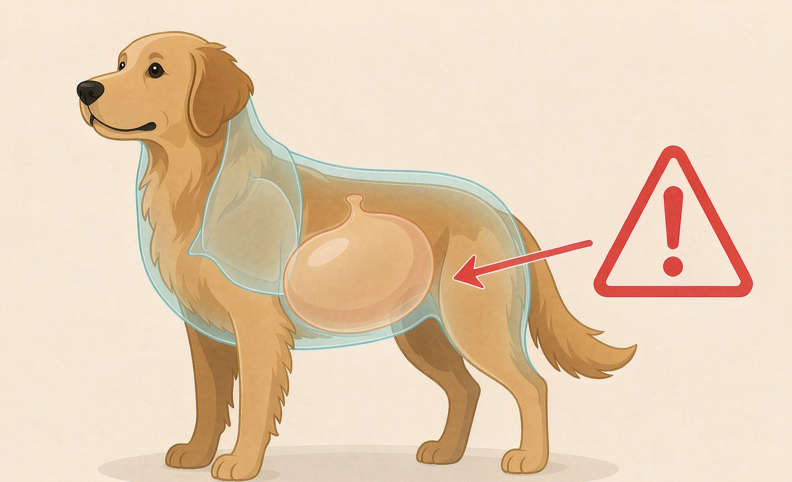
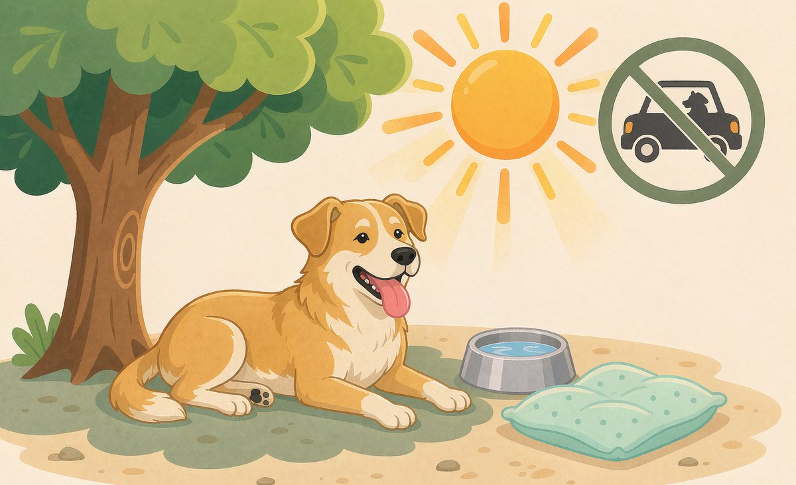
第四部分 · 购物清单
按“必需 → 有用 → 可延后”三层买，别在第一天把预算花完。
15新手狗家长购物清单
一、接狗前必买（缺一不可）
| 类别 | 物品 | 选购要点 | 预算参考 |
|---|---|---|---|
| 约束 | 项圈 + 狗牌 | 狗牌上写两个电话（最好含“有酬谢”）；幼犬期用轻便项圈 | 30–120 元 |
| 约束 | 胸背带（推荐） | 相比脖圈更不伤气管；短头颅犬必须用胸背带 | 80–300 元 |
| 约束 | 牵引绳（固定长度 1.5–2 m） | 新手不要用伸缩绳：它奖励“拉”、易割伤手、难控制 | 50–200 元 |
| 如厕 | 尿垫 / 训练用托盘 | 幼犬期必备 | 30–80 元/月 |
| 如厕 | 酶类除味清洁剂 | 普通清洁剂去不掉尿味信息素，犬会反复在同一处排泄 | 50–120 元 |
| 居住 | 航空箱 / 软围栏 | 航空箱是犬的“安全屋”与训练工具；围栏用于限制活动范围 | 150–600 元 |
| 居住 | 犬窝 + 可洗垫子 | 可机洗最重要；幼犬期可能被咬坏，别买太贵 | 80–400 元 |
| 进食 | 犬碗（不锈钢/陶瓷，宽口浅）+ 慢食碗 | 慢食碗可防吃太快与胃扭转风险 | 60–250 元 |
| 进食 | 水碗（大号） | 犬饮水环境温度下每天需 40–60 ml/kg | 30–100 元 |
| 玩具 | 啃咬玩具（KONG 类）+ 绳结 + 球 | 换牙期必需，能救命地减少拆家；尺寸要比喉咙大 | 100–400 元 |
| 训练 | 训练零食（冻干小块） | 训练必备，可扣减主粮热量 | 50–150 元 |
| 安全 | 封窗防护网 | 必买，高层坠楼在幼犬期高发 | 按面积算 |
| 健康 | 宠物牙刷 + 犬用牙膏 | 从到家就开始适应，越早越容易 | 50–150 元 |
| 健康 | 指甲剪 + 止血粉 | 犬用钳式指甲剪；止血粉备用 | 50–120 元 |
| 健康 | 毛刷 / 梳子 | 短毛用橡胶刷，长毛用针梳 + 排梳，双层毛需换毛梳 | 60–200 元 |
| 健康 | 电子体温计 + 体重秤 | 体重是健康最灵敏的指标之一 | 80–250 元 |
二、可以缓一缓的
- 自动喂食器：好用但故障代价高；出差多再考虑。
- 伸缩牵引绳：不建议新手使用。
- 犬衣服：小型短毛犬冬天外出有用，其余情况多数不需要。
- 高端犬床/豪华犬屋：幼犬期会被咬坏，先买耐造便宜的。
- 推车：老年犬或术后犬有用，幼犬期鸡肋。
三、首年费用估算
| 项目 | 小型犬 | 中大型犬 |
|---|---|---|
| 用品一次性 | 1500–4000 元 | 2500–6000 元 |
| 首年疫苗（3 针多联 + 狂犬） | 500–1200 元 | 700–1600 元 |
| 首年体检 + 粪检 + 传染病快检 | 400–1000 元 | 600–1500 元 |
| 绝育（含术前检查） | 1500–4000 元 | 2500–6000 元 |
| 驱虫（全年） | 600–1800 元 | 1200–3600 元 |
| 主粮（全年） | 1800–4800 元 | 4800–14400 元 |
| 洗护美容（全年） | 1000–2400 元 | 1800–6000 元 |
| 首年合计（不含突发医疗） | 约 7000–19000 元 | 约 14000–39000 元 |
四、装备清单里两件“猫没有”的
给了猫的入门 8 件。犬的清单里有两件猫完全没有的东西：牵引与犬牌——这两件不是「可选」，在多数城市是法定要求。
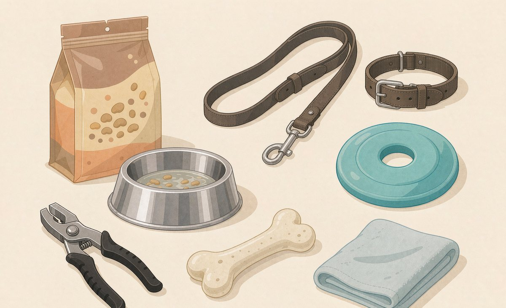
16幼犬到家 30 天清单
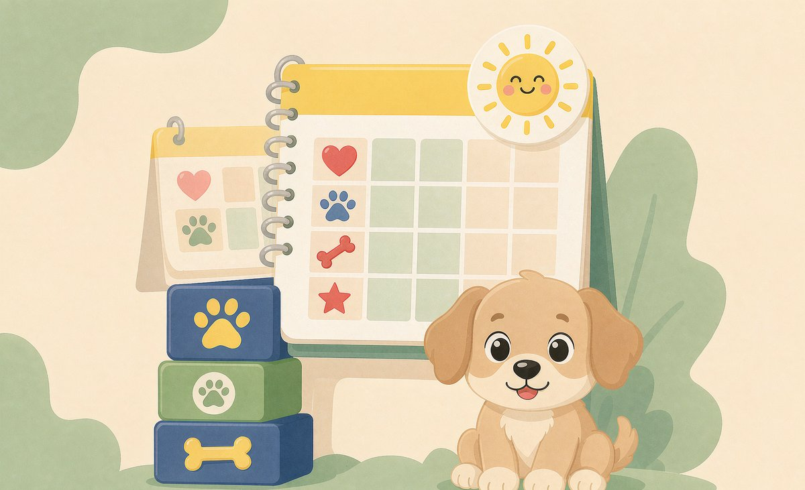
幼犬到家，最重要的是节奏，不是物资。30 天做对顺序，省掉未来三年的麻烦。
一、必须从前主人/犬舍拿到的
- 免疫本：疫苗批号、日期、驱虫记录。缺了它，免疫程序要重来。
- 血统/芯片信息（如有）：芯片号、登记证书。办犬证、找回、出境都要用。
- 当前主粮与喂食习惯：品牌、口味、每日次数与分量。换粮必须 7 日过渡。
- 父母的常见病史：尤其髋关节发育不良（金毛、拉布拉多、德牧）、肘关节发育不良、心脏（拳师、杜宾）、眼部遗传病、癫痫（比格、拉布拉多）、MDR1 缺陷（柯利系）。这决定了你要重点监测什么。
- 犬舍/前主人的联系方式：正规犬舍会有健康保障期约定。
二、到家 30 天日程
| 时间 | 重点 | 关键动作 |
|---|---|---|
| 第 1 天 | 安静适应 | 限缩在围栏；用前主人口粮；不洗澡、不带出门；夜里可能哼叫属正常 |
| 第 2–3 天 | 建立如厕点 | 固定带出（吃后 5–20 分钟、睡醒后、玩后）；成功立刻奖励 |
| 第 4–7 天 | 首次体检 | 体检 + 粪检 + 传染病快检 + 驱虫；确认免疫记录，排后续疫苗时间 |
| 第 8–14 天 | 社会化启动 + 生活规则 | 抱着出门看世界；开始基础指令（坐下、过来）；固定作息 |
| 第 15–30 天 | 习惯养成 | 按免疫程序补疫苗；练习松绳行走、独处（从 1 分钟到 30 分钟）；每周称重并记录 |
三、必须尽早训练的四件事
- 独处训练：从“离开 10 秒 → 回来”开始，逐步延长。这是预防分离焦虑最有效、也最被忽略的一步。
- 笼内训练（把航空箱变成“好地方”）：喂食在箱内、零食在箱内、逐渐关门延长。这是犬的安全屋与就诊时的保命工具。
- 刷牙适应：从手指蘸牙膏让它舔开始。
- 剪指甲适应：只握着爪子 + 给零食，不剪。等它完全不抗拒再剪第一个指甲。
四、清单里最容易漏的两项
说猫家长「只有一个猫厕所、一袋猫砂也能接猫」。犬没有这个便利——因为犬的必需清单里有牵引、犬牌、训练用品三样，少任何一件都会立刻影响生活或触犯法规。
17养狗进阶好物
一、真正提升生活质量的
| 物品 | 为什么值得 | 注意 |
|---|---|---|
| KONG 类塞食玩具（冷冻） | 消耗精力 + 独处安抚，是解决拆家与分离焦虑的第一工具 | 尺寸要合适，内容物按热量扣减主粮 |
| 长绳（5–10 m 训练绳） | 在安全场地练召回与自由嗅闻，效果好于短牵绳 | 只在封闭安全场地使用 |
| 胸背带（H 型/免拉设计） | 保护气管与颈部，尤其短头颅犬、小型犬 | 要合身，过松会脱出 |
| 食品级嗅闻垫 / 嗅闻球 | 15 分钟嗅闻 ≈ 1 小时快走（脑力消耗） | 可洗，别用易吞的填充物 |
| 电子秤 + 体重记录表 | 体重下降 5% 是最早的疾病信号之一 | 每周固定时间称 |
| 犬用安全带（车载） | 安全带 + 胸背带可显著降低车祸伤亡 | 不要抱着犬坐车 |
| 防滑地垫 | 老年犬、大型犬、术后犬防滑，保护关节与韧带 | 尤其瓷砖地面 |
| 宠物摄像头 | 观察独处时的行为（是否有分离焦虑） | 注意隐私 |
二、看着很香、其实鸡肋的
- 伸缩牵引绳：训练松绳行走的阻碍，且易割伤、难控制。
- 精密复杂的“自动逗狗机”：多数犬玩两次就腻，不如人陪。
- 昂贵的犬用雨衣/鞋子（除特殊场景）：多数犬抗拒，真要防烫脚可用专用软底鞋，但需逐步适应。
- “洁齿喷雾/添加剂”：效果远低于刷牙，别为此省掉刷牙。
- 人用沐浴露给犬洗澡：人用产品 pH 不适配犬皮肤，会破坏皮肤屏障，导致皮屑与瘙痒。用宠物专用。
三、值得添置的进阶装备
本章有一条犬猫完全颠倒的结论：说「猫笼只作临时隔离、建议散养」，而犬的围笼（crate）在科学训练下是正向工具——犬天性需要「洞穴」作为安全区，围笼能降低分离焦虑。这是养犬与养猫在「空间管理」上的根本差别。
第五部分 · 常见提问
八个具体到“今天就能用”的问题。
18怎么给狗剪指甲、挤肛门腺？
一、剪指甲：每 3–4 周一次
犬指甲过长会改变站姿与步态，长期损伤关节（尤其趾关节），还会长进肉垫造成感染。走路时能听到“哒哒”声，就是太长了。
二、先认清血线
与猫一样，犬指甲内部有粉红色的血管与神经（血线）。浅色指甲可以直接看到血线，深色指甲看不到——深色指甲每次只剪最尖端 1–2 毫米，分多次、隔几周逐步缩短。
三、五步操作法
- 选时机：遛狗后犬比较放松，或饭后困倦时。不要在它兴奋时操作。
- 建立联想：先只握爪子、按压足垫 + 给零食，重复几天再剪。
- 固定姿势：小型犬可抱在身上，一只前肢朝向你的方向；大型犬让它站立或侧躺，一人保定一人操作。
- 逐个剪：45° 方向斜切指甲尖端。一次只剪 1–2 个爪、分几次完成完全可以。
- 收尾奖励：每剪完一个爪子立刻给零食。全部完成后先抚摸，再放开。
四、肛门腺：多数犬不需要挤
| 情况 | 处置 |
|---|---|
| 正常犬 | 不要常规去挤。犬排便时肛门腺会自然排空；频繁人为挤压会损伤腺体、诱发炎症 |
| 蹭屁股（拖地） | 可能原因：肛门腺堵塞、绦虫、过敏瘙痒、腹泻。先排查绦虫与寄生虫，不要直接挤 |
| 确认是腺体堵塞 | 由兽医或美容师操作，手法是“由内向外、由下向上”轻压；频率通常每 1–3 个月一次 |
| 肛门旁红肿、疼痛、有脓 | 肛门腺炎/脓肿，需要就医（可能需引流 + 抗生素） |
五、剪指甲与肛门腺的补充要点
「拎后颈肉控猫」对猫已属误用，对犬更是完全不能做。犬的对应方法是用零食做脱敏训练——犬对食物的驱动力远强于猫，这套方法对犬成功率极高，所以犬的剪指甲应该当成一项训练科目，而不是一次搏斗。
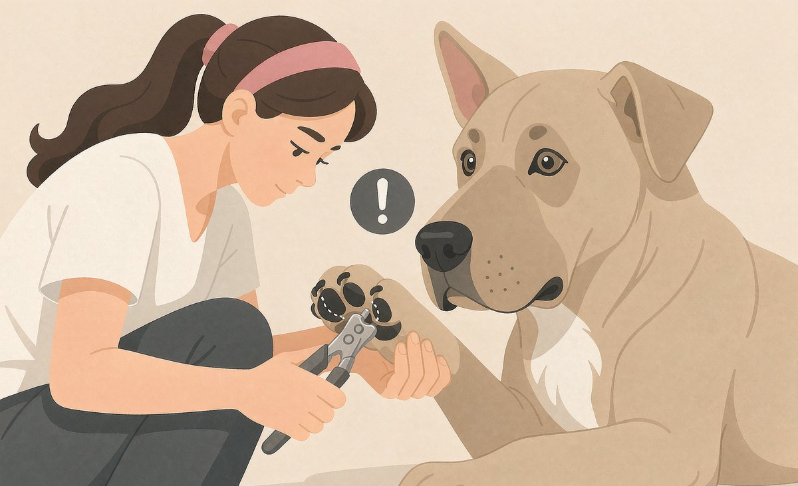
19夏天要给狗开空调么？
一、犬的舒适温度与散热能力
| 情况 | 建议 |
|---|---|
| 犬的舒适区 | 18–24 ℃（多数犬比猫更怕热） |
| 室温 >28 ℃ + 湿度高 | 必须降温：空调、风扇、凉垫、充足饮水；缩短户外活动 |
| 室温 <10 ℃ | 小型短毛犬、老年犬需保暖 |
| 湿度 | 50%–60%；高湿会显著削弱犬的散热效率 |
犬只有两种散热方式：喘气（主要）和足垫出汗（极少）。 这意味着犬的散热效率远低于人，中暑死亡率可达 50%。短头颅犬（巴哥、法斗、英斗）因气道结构问题，散热能力更差，是最危险的一类。
二、夏天六件小事
- 遛狗时间移到清晨 6–8 点、晚上 8 点后。中午 11:00–16:00 不要遛狗。
- 先测地面温度：手背贴柏油路 5 秒，受不了就是会烫伤掌垫。
- 水：犬每天需约 40–60 ml/kg，夏天更多。随身带水。（大量饮水需注意，某些犬易发胃扭转——做到“少量多次”即可）
- 不要剃光双层毛犬（哈士奇、萨摩耶、金毛等）：底毛有隔热与防晒作用，剃光反而更易中暑与晒伤。适度梳掉死毛、修剪腹部即可。
- 千万不要把犬单独留在车里——即使开窗、即使 10 分钟。车内温度可在 10 分钟内升至 50 ℃ 以上。
- 游泳不能防中暑，且要警惕水池与泳池溺水（尤其小体型犬与不擅游泳的犬）。
三、降温与中暑预防的补充要点
这一章是犬猫差异最极端的一处。花了大量篇幅论证「猫其实比人怕热，但不开空调也能过」。犬的结论要整体前移——犬几乎只能靠喘气散热，中暑死亡率在兽医文献中可高达 30–50%。
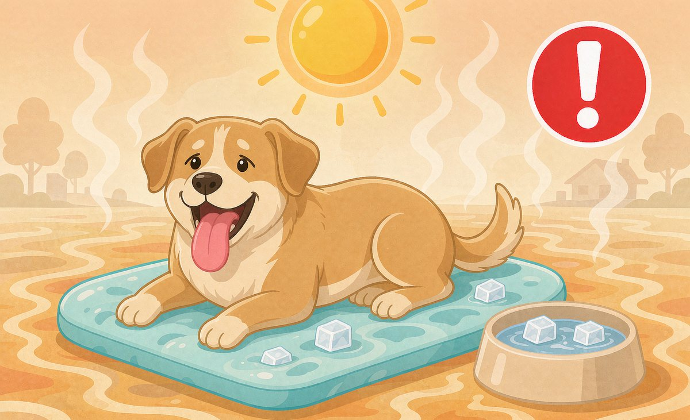
20狗狗出远门：宠物托运
一、先判断：真的必须带吗？
犬的环境适应力强于猫，但分离焦虑与运输应激同样真实。短途（3 天内）出行，专业上门喂养或正规寄养通常更省心。长途搬迁、长期在外，自驾带犬往往是最好选择。
二、四种方式对比
| 方式 | 优点 | 风险 | 适合 |
|---|---|---|---|
| 自驾（推荐） | 可控、可随时休息、犬在自己熟悉的气味环境里 | 需用航空箱或车载安全带固定；注意不要让它探头出车窗 | 中短途、有家人陪同 |
| 航空托运（随行） | 速度快 | 需提前办检疫证明、订有氧舱；短头颅犬多数航司拒运 | 长途跨省、出国 |
| 航空货运 | 可单独运输 | 不在主人视线内，风险最高 | 万不得已 |
| 铁路/高铁托运 | 部分线路支持 | 班次受限、需提前申请、检疫要求严格 | 特定线路 |
三、必办的文件
- 动物检疫合格证明：通常需在出发前 3–7 天内到当地动物卫生监督机构/指定宠物医院办理，需带免疫证。
- 免疫证明/免疫红本：狂犬疫苗需在有效期内（多数要求接种满 21 天以上，各地不同）。
- 宠物芯片 / 犬证（部分线路与出入境要求）。
- 出境：还需目的地国家的入境许可、血清抗体检测（狂犬中和抗体 ≥0.5 IU/ml，需提前数月准备）等。请至少提前 3–6 个月开始准备。
四、降低应激的 10 个动作
- 提前 2 周让航空箱变成日常“好地方”：拆门放着、里面放零食、喂食在箱内，让它自己进去睡。
- 出发前 4–6 小时停食，1–2 小时停水，减少途中呕吐与排泄。（心脏/糖尿病患犬须遵医嘱）
- 不要使用未经兽医指导的镇静药。部分镇静药在高空可能抑制体温调节与心血管功能，风险大于收益。
- 箱内放一件有你气味的旧 T 恤。
- 箱体扎带固定、门锁扣再加固，贴上“活体动物·请勿倒置”标签与两个联系电话。
- 准备吸水垫（不用报纸，油墨有毒）。
- 温差防护：夏天用冰袋（包毛巾）、冬天加保温套（留通气孔）。
- 自驾时每 2–3 小时停车：给水、排泄、短距离走动。
- 落地后：先给安静空间休息，不要立刻带去玩。
- 到达后 48 小时观察进食、饮水、排尿排便；超过 24 小时不排尿立即就医。
五、托运的补充要点
四项费用结构对犬同样适用，但犬有两个硬门槛：① 短吻犬种多数航司明确禁运（法斗、英斗、巴哥、波士顿㹴）；② 大型犬常超出货舱笼具尺寸与重量限制。这两条不是「加钱能解决」的问题。
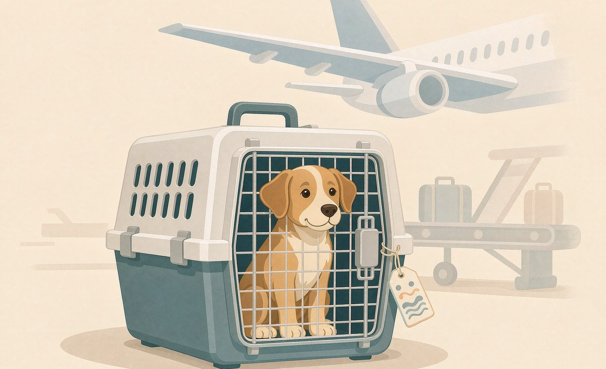
21狗碗怎么选？
一、材质
| 材质 | 评价 |
|---|---|
| 不锈钢（304/316） | ✅ 首选。耐用、好洗、不藏菌、不怕咬。缺点轻，容易推着走（可配防滑垫） |
| 陶瓷 | ✅ 推荐。重、不易移动、易清洁。缺点易摔碎 |
| 塑料 | ❌ 不推荐。划痕藏菌，是犬下巴痤疮（尤其短毛小型犬）的常见诱因 |
| 硅胶折叠碗 | ⚠️ 仅适合出行临时用 |
二、形状与功能的三个考虑
- 慢食碗（防狼吞虎咽）：犬吃太快会呕吐、胀气，深胸大型犬吃太快是胃扭转（GDV）的风险因素之一。慢食碗 + 分餐是简单有效的预防手段。
- 长耳犬（可卡、巴吉度）用窄口/锥形碗，可防止耳朵泡进食物与水里（长期潮湿会致耳道感染）。
- 短头颅犬（巴哥、法斗）用浅口宽碗，它们的口鼻结构不适合深碗，深碗会吃得很吃力。
三、日常维护
- 每天洗碗、每天换水。犬碗是细菌培养皿，湿粮碗 20 分钟内吃不完就该收走（夏天更短）。
- 水碗数量 ≥ 犬数 + 1，多点分散，尤其多犬家庭，避免资源竞争引发冲突。
- 喂食区安静，不要放在人来人往的过道或洗衣机旁。
- 抬高 10–15 cm 的餐台对老年犬、大型犬的颈部与关节更友好，也能减少呕吐与胀气。（注：抬高食盆与胃扭转风险的关系仍有争议，最新研究倾向“抬高不是必要措施”，可与兽医讨论）
四、抬高食盆的风险 ⚠️
本章有一条最容易被搞反的结论：建议抬高碗位 5–15 cm；而经典研究（Glickman[17] 等，JAVMA 2000）发现抬高进食与犬胃扭转（GDV）风险升高相关。深胸大型犬的家庭，请与自己的兽医确认后再决定要不要抬高。
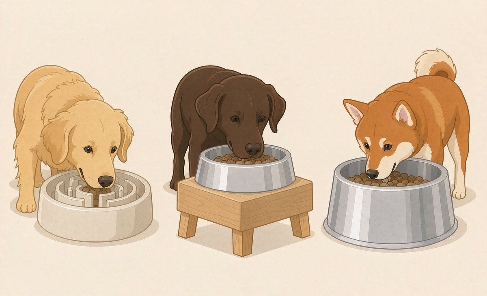
22如何给狗狗拍出漂亮照片
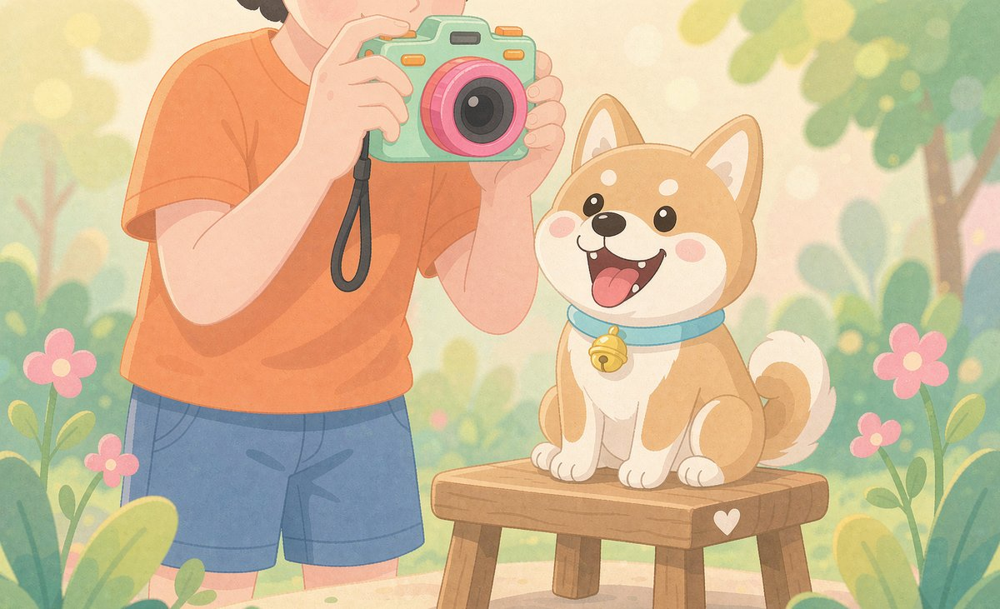
一、光线
- 首选自然光，在窗边拍。让犬面向窗户，光从正面或 45° 侧前方打过来。
- 避开顶光与直射硬光（正午、单点吊灯），会在眼窝形成难看的黑阴影。
- 阴天与窗边散射光是最好的影棚。
- 绝对不要用闪光灯：会拍到“激光眼”，且可能惊扰犬。
二、机位
- 蹲下，与犬视线齐平。绝大多数“狗照片难看”都是站着俯拍导致的。
- 手机镜头靠近犬的眼睛高度，能放大眼睛、缩短身体，更可爱。
- 眼睛放在画面上三分之一线，留出前方空间（视线留白）。
- 用 2x 变焦拍特写，而不是凑得极近（近摄会变形且惊扰犬）。
三、让它配合的五个技巧
- 零食举在镜头正上方——犬的视线自然看向镜头。这是拍狗最有效的一招。
- 用声音（“谁呀？”、揉纸声、 squeaker），只在快门前一秒用。
- 连拍。抓拍对焦最难，连拍 + 后期挑远优于单张精修。
- 拍它的自然状态：奔跑、跳跃、歪头、打哈欠、从草地滚完起身——这些比“坐好别动”珍贵得多。
- 用长焦（或 2–3x）在远处拍，犬不会因相机逼近而紧张。
四、后期三个动作
提亮阴影（别拉高对比）降低高光（保留白毛/浅色毛细节）轻微增加锐度与饱和度白平衡偏暖（更温暖）裁切为 4:3 或 1:1五、给狗拍照的补充要点
拍猫的核心是「骗出满瞳」。犬不需要这一套——犬天生会看主人、会看镜头、会配合口令。养犬的拍照难点在别处：机位要与犬眼齐平，以及抓拍高速动作。
23狗狗掉毛多怎么办？
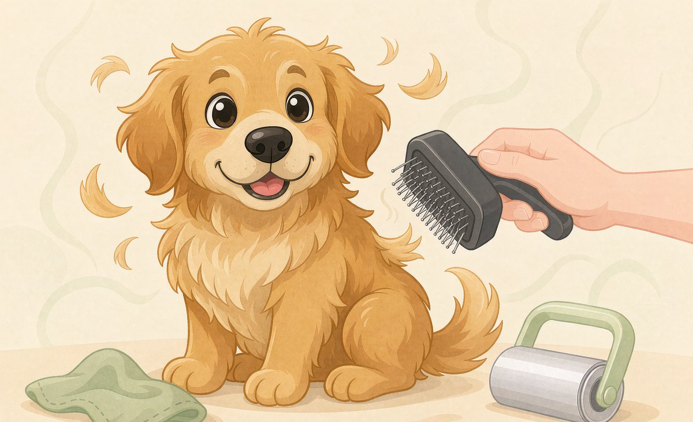
一、先分清正常与异常
| 类型 | 特征 | 说明 |
|---|---|---|
| 季节性换毛 | 春秋两季明显增多，全身均匀，无秃斑 | 正常。日照变化触发 |
| 双层毛犬（哈士奇/萨摩耶/金毛） | 全年掉毛量都大，换毛季“爆毛” | 正常。不要剃光，底毛有隔热防晒作用 |
| 局部秃斑 / 对称脱毛 | 成片掉，皮肤可见/发红/有皮屑 | 异常：皮肤病（癣、螨）、过敏、内分泌（甲减、库欣） |
| 只掉一侧 / 沿背中线 | 对称性脱毛 | 异常，高度提示内分泌疾病，需血检 |
| 掉毛 + 剧烈瘙痒 + 红疹 | 常抓挠、啃咬 | 异常：过敏（跳蚤过敏性皮炎最常见）、感染 |
二、正常掉毛如何减少家里的毛
- 每天梳毛（双层毛犬用换毛梳/下毛梳）。这是最有效的手段，没有之一。
- 营养：优质蛋白 + 足量 Omega-3（鱼油）。皮肤屏障好了，掉毛与皮屑都会减少。
- 不要过度洗澡：犬建议 3–4 周一次（视品种与生活方式）；用人用沐浴露会破坏皮肤屏障，导致皮屑与脱毛。
- 定期驱虫：跳蚤是犬掉毛与瘙痒最常见的元凶之一，且跳蚤过敏性皮炎（FAD）只要一只跳蚤就能引发剧烈瘙痒。
- 空气净化器 + 勤换床品：犬的过敏原主要在皮屑与唾液中。
三、被毛管理的补充要点
这是全书犬猫差异最强烈的一条：说「猫剃毛伤害很微小、0 应激」，而犬剃毛基本是禁忌——双层毛犬的毛同时起保温与防晒作用，剃掉后反而更容易中暑，还可能造成永久性「剃后脱毛」。
24有狗家庭的植物与食物黑名单
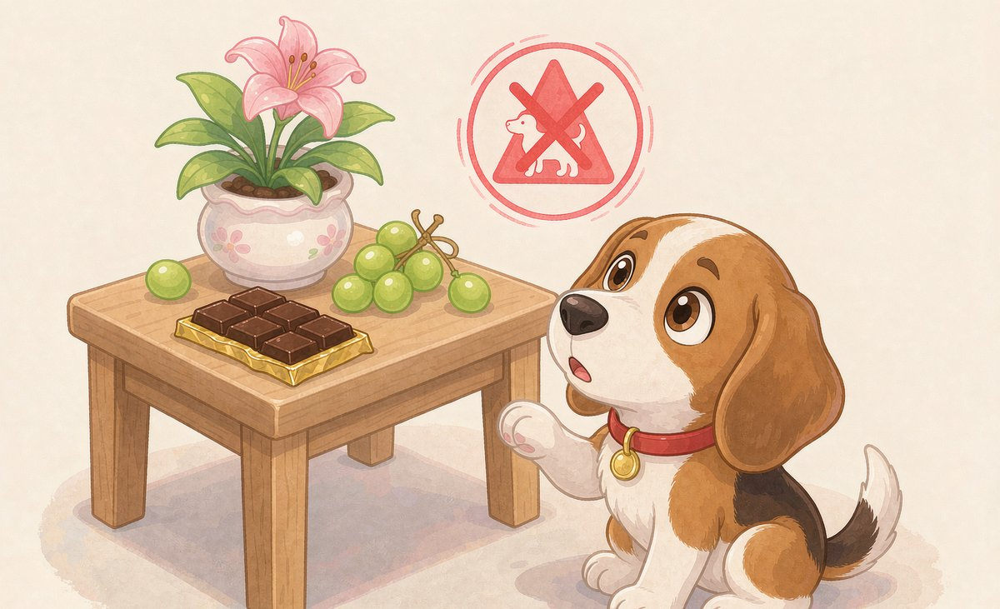
完整剂量表见附录C。这里只说最需要立刻处理的。
一、必须背下来的食物黑名单
| 食物 | 为什么 | 紧急程度 |
|---|---|---|
| 木糖醇（无糖口香糖/部分花生酱/牙膏） | 胰岛素骤释 + 肝坏死 | 分钟级，立即就医 |
| 葡萄 / 葡萄干 / 提子 | 急性肾损伤，无安全剂量 | 立即就医 |
| 巧克力（尤其黑巧、烘焙巧克力、可可粉） | 可可碱，20 mg/kg 起症状，60 mg/kg 可能抽搐 | 立即就医 |
| 洋葱 / 大蒜 / 葱 / 韭菜（含粉状调味、婴儿辅食） | 溶血性贫血，毒性迟发数天（溶血常 3–5 天后出现），加热不破坏 | 立即就医 |
| 澳洲坚果（夏威夷果） | 后肢无力、震颤，约 2.4 g/kg | 就医 |
| 酒精 / 生面团 / 含酒精甜点 | 中枢抑制 + 低血糖；生面团可致胃扩张 | 立即就医 |
| 熟骨头（尤其禽类） | 碎成尖片，可致食道/肠道穿孔 | 立即就医 |
| 高脂剩菜 / 肥肉 / 大量油炸 | 急性胰腺炎 | 就医（腹痛+呕吐） |
| 牛油果（果核/果皮） | persin + 异物梗阻 | 就医 |
| 咖啡 / 浓茶 / 能量饮料 | 咖啡因 | 就医 |
| 夏威夷果外的其他坚果大量 | 高脂、部分霉变（黄曲霉毒素） | 避免 |
二、植物黑名单（有狗家庭）
| 等级 | 植物 | 处置 |
|---|---|---|
| 致命/严重 | 苏铁（铁树，尤其种子）、夹竹桃、秋水仙、铃兰、洋地黄、紫杉、毛地黄、蓖麻 | 家里不要出现 |
| 严重 | 百合（对犬毒性低于猫但仍有害）、绿萝、龟背竹、滴水观音、万年青、白掌、水仙/郁金香球茎、杜鹃 | 含草酸钙或强心苷，建议物理隔离 |
| 中等 | 一品红、菊花/除虫菊、绣球、冬青、槲寄生 | 胃肠刺激 |
| 犬敏感 | 各类精油（茶树、尤加利、柑橘）、香薰扩香、精油驱虫项圈 | 剂量低于猫但仍有毒性，且犬舔毛会摄入 |
三、安全植物
狗尾草小麦草/燕麦草吊兰波士顿蕨竹芋散尾葵空气凤梨蜘蛛抱蛋棕竹多肉（避开大戟科）四、训练“放下”指令，比把家里清空更有效
- 教“放下”：用更好的零食交换嘴里的东西（见第 4 章），永远不要硬抢。硬抢会让犬学会“吞得更快”。
- 不要惩罚捡东西的行为，否则犬会把“叼东西”和“被骂”关联，反而学会躲起来吃。
- 物理隔离仍不可少：垃圾桶加盖、药品上锁、植物上架或隔离。训练是第二道防线，环境是第一道。
- 打翻或误食后：先拍照/留样，观察 30–60 分钟，出现流涎、呕吐、精神差立即就医。不要自行催吐（见附录D）。
五、犬的毒物风险补充要点
犬与猫的植物中毒清单高度重叠，但犬有几个专属的、更常见的致命项：葡萄/葡萄干、木糖醇、澳洲坚果、洋葱大蒜、巧克力。另外犬会主动、大量地啃咬植物，风险高于猫的试探性啃咬。
25拓展阅读：行为学、病理学
如果你想把养狗从“经验”升级成“方法”，这一章给你一张书单和一套检索方法。
一、按需求选方向
| 你关心的问题 | 该看什么 | 从哪入手 |
|---|---|---|
| 犬为什么这样？怎么改行为？ | 兽医行为学 | AAHA 行为管理指南；《犬的行为与训练》类教材；优先选择“正向强化（R+）”取向的内容 |
| 这个病是什么？会不会死？ | 小动物内科学 / 病理学 | 《默沙东兽医手册[2]》疾病条目（免费在线）；按“症状—鉴别诊断—处置”三段读 |
| 化验单上这些指标什么意思？ | 临床病理学 | 血常规（CBC）：红细胞/白细胞/血小板；生化：肝（ALT/ALP）、肾（BUN/肌酐/SDMA）、血糖、电解质 |
| 吃的东西有没有问题？ | 小动物营养学 | WSAVA[3] 全球营养工具包；CVMA[8]《犬猫临床营养管理指南[7]》系列；AAFCO/NRC 标准 |
| 中毒怎么办？ | 兽医毒理学 | ASPCA[15] 有毒植物与食物数据库；《默沙东兽医手册》中毒章节 |
| 这个品种有什么遗传病？ | 犬种遗传病学 | 查该品种的髋/肘关节评分（OFA / 国际髋关节评分）、心脏（拳师、杜宾）、眼部（CERF）、MDR1（柯利系） |
二、三个可以马上用的免费资源
- MSD Veterinary Manual（msdvetmanual.com）：全球兽医临床参考书，有面向宠物主人的简化版。搜英文病名即可，比中文自媒体可靠得多。
- ASPCA Animal Poison Control：有毒食物/植物数据库，可按名称检索。
- CVMA 团体标准（cvma.org.cn）：国内最新行业标准，搜“犬”可查到临床营养管理、动物福利友好繁育舍[11]评价规范等文件。
三、怎么读一篇医学内容（防忽悠三问）
- 谁说的？ 作者有兽医资质或机构背书吗？还是“某博主的朋友说”？
- 有数据吗？ 是否给出剂量、样本量、时间窗？“我家狗吃了没事”不构成证据。
- 有没有利益？ 这篇文章是不是在卖某个产品？
四、犬版书单的取舍
书单选得很准。犬版对应书单里，《Dog Sense》（犬的秘密）与《Don't Shoot the Dog》是两本必读——后者是正向强化训练的奠基之作，与本手册第 4 章的方法同源。
附录
附录A · 权威知识库速查（默沙东 / WSAVA / AAHA / CVMA / 国标）
本附录把《默沙东兽医手册[2]》（MSD/Merck Veterinary Manual）、世界小动物兽医协会（WSAVA[3]）指南、美国动物医院协会（AAHA）疫苗指南、ACVIM 共识[5]声明、中国兽医协会[8]（CVMA）团体标准与指南、国家标准与农业行业标准，以及公开的同行评议文献，翻译成「能不能照做」的话。每条都标注了出处与年份，方便你和兽医对线时把话说清楚。
本附录只讲“怎么用”；每条依据的完整出处与版本号，统一列在 附录H · 引用来源清单，正文中的 [n] 上标与之一一对应。
二、疫苗：WSAVA 共识 vs AAHA 共识
| 对象 | 核心疫苗 | 首针 | 基础免疫 | 加强 |
|---|---|---|---|---|
| 幼犬（WSAVA 2024） | 犬瘟(CDV)、腺病毒(CAV)、细小(CPV-2) | 6–8 周龄 | 每隔 2–4 周 1 针，最后一针 ≥16 周龄 | 6–12 月龄补 1 针；此后不超过每 3 年 |
| 幼犬（AAHA 2024[4]） | 在上述基础上，把钩端螺旋体列入核心疫苗 | CDV/CAV/CPV 自 6–8 周起；钩端螺旋体 ≥12 周龄起、间隔 2–4 周共 2 针 | 同上 | 同上 |
| 幼猫 | 猫瘟(FPV)、猫疱疹(FHV-1)、猫杯状(FCV) | 6–8 周龄 | 每隔 2–4 周 1 针，最后一针 ≥16 周龄（部分指南建议至 16–20 周） | 6–12 月龄补 1 针；此后每 3 年 |
| 犬猫通用 | 狂犬（法律强制） | 12–16 周龄（按疫苗标签与地方法规） | 1 针 + 1 年后加强 | 按地方法规（多为每 1–3 年） |
- 副流感（CPiV）在 WSAVA 属非核心，但在 AAHA 的犬 DHPP 组合里通常与核心一起给——所以「四联/八联」里既有核心也有非核心，这是正常的。
- 非核心疫苗看生活方式：常去草地 / 水域的犬建议加钩端螺旋体（AAHA 已改为核心）；常寄养 / 犬舍的犬建议加犬舍咳（Bordetella）；多猫 / 散养猫考虑猫白血病（FeLV）。AAHA 2024 已把钩端螺旋体列为犬核心疫苗，中国多见于南方潮湿地区，听当地兽医建议。
- 免疫期（DOI）：WSAVA 明确核心疫苗不应比每 3 年更频繁，MLV 核心疫苗免疫期长达数年、可能终身；在 14–16 周龄完成犬核心系列的幼犬，约 98% 可获得多年甚至终身保护。抗体检测（titer）WSAVA 支持从 20 周龄起做（犬 CDV/CAV/CPV、猫 FPV）——先测再决定打不打，是省钱又科学的做法。
- 注意抗体检测的边界：猫的 FCV / FHV-1 抗体水平与保护力的相关性弱于 FPV，呼吸道疫苗的保护力与免疫期本就短于猫瘟疫苗，呼吸道两项不能只靠抗体数值下结论。
- 狂犬疫苗在中国属强制免疫，办犬证、出市、出入境都需要免疫证明（免疫红本）；2026 年起中国兽医协会已发布《犬只狂犬病免疫接种点建设与管理规范》，可在正规免疫点接种。
三、体况评分（BCS）：比体重更重要的指标
WSAVA 与 CVMA 均采用 9 分制 BCS。判断方法是看 + 摸肋骨、腰线、腹部上收三条线，不用称重。每 1 分约等于体脂变化 5%；理想分对应的体脂率约 20%（灵缇等视觉猎犬同分体脂更低，属正常）。
| 评分 | 外观与触感 | 结论 |
|---|---|---|
| 1–3 分 | 肋骨、脊椎、髂骨明显可见，无脂肪覆盖 | 过瘦，需排查寄生虫 / 甲亢 / 慢性病 |
| 犬 4–5 分 / 猫 5 分 | 肋骨轻按可及、有薄脂肪层，腰线明显，腹部上收 | 理想体况（犬 4 分适合偏瘦品种或工作犬） |
| 犬 6–7 分 / 猫 6–7 分 | 肋骨需用力按才摸到，腰线不明显 | 超重，建议减重 10%–20% |
| 8–9 分 | 肋骨摸不到，腹部下垂，背部平坦 | 肥胖（猫 ≥8 分即临床肥胖），需医学减重方案 |
四、驱虫：频率比药重要
| 项目 | 幼年 | 成年（完全室内） | 成年（外出 / 吃生食 / 接触其他动物） |
|---|---|---|---|
| 体内驱虫（蛔虫 / 绦虫 / 钩虫） | 每月 1 次至 6 月龄 | 每 3 个月 1 次 | 每月 1 次 |
| 体外驱虫（跳蚤 / 蜱 / 螨） | 每月 1 次 | 春夏每月 1 次；秋冬可 2 个月 1 次 | 每月 1 次，全年不断 |
| 心丝虫预防 | 按地区风险，兽医处方 | 华南 / 华东等风险区按月 | 按月，全年 |
| 粪检 | 到家即做，之后每 3 个月 | 每年 1–2 次 | 每年 2 次 |
五、绝育：月龄与利弊
| 对象 | 常见建议月龄 | 主要获益 | 需要注意 |
|---|---|---|---|
| 公猫 | 6–8 月龄 | 减少喷尿标记、离家打斗、攻击行为 | 术后 24h 内观察排尿，猫尿道细，警惕梗阻 |
| 母猫 | 6 月龄前后 / 首次发情后 | 大幅降低子宫蓄脓、乳腺肿瘤风险 | 发情期手术出血风险略高，一般避开 |
| 公犬 | 中小型 6 月龄；大型犬可延至 12–18 月龄 | 减少前列腺疾病、会阴疝、部分行为问题 | 大型犬过早绝育与某些骨科 / 肿瘤风险相关，建议与兽医商量 |
| 母犬 | 首次发情后 2–3 个月（约 12–18 月龄） | 显著降低乳腺肿瘤、子宫蓄脓 | 大型犬可待骨骼闭合后再做 |
六、口腔：被严重低估的「老年病源头」
- 3 岁前，约 80% 的犬、70% 的猫已出现不同程度的牙周病（AVMA / 美国兽医牙科学会数据），是犬猫最常见的疾病之一。牙结石→牙龈炎→牙周袋→牙齿脱落，细菌入血还会加重心脏、肾脏负担。
- 刷牙是唯一真正有效的家庭手段：宠物专用牙膏（可吞食）+ 指套或软毛牙刷，从 3–4 月龄开始适应，理想频率每天 1 次，现实至少每周 2–3 次。洁齿咬胶、洁牙粮只是辅助，不能替代刷牙。
- 洁牙（洗牙）必须全身麻醉 + 拍牙片，「不用麻醉的洁牙」只是磨掉表面牙石，既治不了牙龈下的病，还会造成疼痛和牙面损伤。
- AAHA 牙科指南建议：成年犬猫定期口腔检查与麻醉洁牙——猫与小型犬可从 1 岁起、大型犬从 2 岁起，此后每年 1 次（视牙周状况调整）。洁牙后建议拍全口牙片：约有一半的牙科病变藏在牙龈以下，肉眼看不见。
附录B · 全国宠物医院信息（24 小时急诊 · 价格 · 评价参考）
这一节回答三个问题：半夜出事去哪、怎么判断一家医院靠不靠谱、大概要花多少钱。价格与院区信息均来自公开渠道（医院官网 / 公示、国家标准、媒体报道），会变，出发前务必电话确认。
一、全国连锁：两家主流体系
| 体系 | 旗下主要品牌 | 覆盖规模（公开数据） | 诊疗分级 | 特点 |
|---|---|---|---|---|
| 新瑞鹏宠物医疗集团 | 美联众合、安安宠医、芭比堂、瑞鹏等 | 100+ 城市、1000+ 家医院；19 城 180 家重点分院、17 家重点中心医院覆盖 10 城 | 「1+P+C」三级：中心医院 / 专科医院 / 社区医院 | 有全国统一调度热线；集团布局十五大专科；美联众合北京转诊中心公示 1370 项价格；也是 GB/T 45295[12]-2025 与多项农业行业标准的主要起草单位 |
| 瑞派宠物医院 | 瑞派（含各地子品牌，如成都瑞派咪咻、维特等） | 多地布局，规模公开信息较少 | 各地院区独立设置 | 公开特色学科：心脏科、眼科、口腔科、猫科、骨科与神经外科 |
二、已核实院区（北京）
| 院区 | 地址 | 急诊 | 设备 / 能力 | 价格公示 |
|---|---|---|---|---|
| 美联众合北京转诊中心（1 级中心医院） | 北京市朝阳区北苑路 168 号 | 24 小时 | 64 排 CT、MRI、C 形臂、宠物专用 ICU、彩超、眼科手术显微镜、关节镜、胃肠镜、腹腔镜；设 12 个专科 | 夜间急诊号 200 元/次；夜诊急诊 100 元/次；急诊 CT 700 元；普通初诊挂号 10 元；体格检查 30 元；单器官腹部超声 195 元 |
| 美联众合京西 24h 动物诊疗中心 | 北京市石景山区 | 24 小时 | 内窥镜、彩色超声、血透仪；2025 年通过 AAHA 认证[16] | 院区公示标准化诊疗流程，术后 1–3 天回访 |
| 芭比堂望京动物诊疗中心 | 北京市朝阳区 | 24 小时应急响应机制 | 以外科骨科、猫科、眼科为特色；设独立猫诊区与低应激设施；2025 年通过 AAHA 认证 | 需电话确认当日急诊排班 |
| 芭比堂玉泉路总院 | 北京市石景山区玉泉路 | 以院区公示为准 | 2025 年通过 AAHA 认证 | 需电话确认 |
| 北京新天地国际动物医院（ICVS） | 北京市（官方定点狂犬免疫单位） | 需电话确认 | 提供中英文服务、疫苗套餐、绝育 / 洁牙 / 寄养 | 幼犬疫苗套餐约 900 元、幼猫约 1050 元、成猫年度套餐约 900 元、成犬约 990 元（含免疫红本，套餐价，常为折扣价） |
三、已核实院区（成都）
| 院区 | 地址 | 急诊 | 能力 |
|---|---|---|---|
| 瑞派咪咻宠物医院 · 天府总院（重症转诊中心） | 成都市双流区怡心街道剑和路一段 406 号附 201–207 号（近南湖立交） | 全年 24 小时，承诺 5 分钟响应 | CT、1.5T 超导核磁、DR、心超、血液透析机、高压氧舱、内窥镜、ICU 吸氧监护舱；中国兽医协会[8]五星级宠物医院、四川省宠物医院重症转诊中心，可提供救护车接诊与全省转诊 |
| 瑞派咪咻宠物医院 · 锦江转诊中心 | 成都市锦江区银木街 80、84 号一层 | 全年 24 小时 | 覆盖城东片区，重症转诊 |
四、其他主要城市：怎么自己找
- 上海：新瑞鹏旗下安安宠医布局约 16 家重点分院；中心医院可提供夜间急诊，排班需实时确认。
- 杭州：约 19 家重点分院（含美联众合 11 家 + 安安宠医 8 家）。
- 苏州：安安宠医约 13 家重点分院。广州 / 深圳 / 佛山：安安宠医有布局。
- 通用查法（推荐）：地图 App 搜「24 小时宠物医院」或「宠物医院夜间急诊」→ 只保留带新瑞鹏 / 美联众合 / 安安宠医 / 芭比堂 / 瑞派等品牌标识的门店 → 逐个打电话确认「今晚是否有急诊医生在岗、能否做 CT / 拍片 / 急诊手术」。
五、价格参考（公开渠道区间，一线城市为主）
| 项目 | 参考区间 | 说明 |
|---|---|---|
| 普通挂号 | 10–50 元 | 专家号可达 50 元；连锁社区医院常 10 元 |
| 夜间 / 急诊挂号 | 夜诊 50–100 元；22:00 后急诊 100–200 元 | 北京转诊中心：夜诊 100 元、夜间急诊号 200 元 |
| 体格检查 | 30–80 元 | 北京转诊中心公示 30 元 |
| 血常规 | 40–200 元 | 仪器不同差异大 |
| 生化（项目数不同） | 150–600 元 | 术前基础生化常见 200–400 元 |
| 犬细小 / 犬瘟 / 猫瘟快检 | 50–100 元/项 | 试纸板快检 |
| X 光（DR） | 100–500 元/张（按部位计价） | 骨科常需多体位 |
| 腹部 B 超 | 195–400 元 | 心脏彩超通常更贵（300–800 元） |
| CT | 700–2500 元 | 北京转诊中心急诊 CT 公示 700 元 |
| MRI 核磁 | 2000–5000 元 | 需麻醉，多用于神经科 |
| 犬四联 / 八联疫苗 | 60–300 元/针 | 品牌差异大 |
| 猫三联疫苗 | 120–250 元/针 | — |
| 狂犬疫苗 | 50–200 元/针 | — |
| 体内驱虫 | 30–80 元/次（按体重） | 拜宠清等品牌 |
| 体外驱虫 | 90–150 元/次（按体重） | 大宠爱等滴剂 |
| 公猫 / 公犬绝育 | 300–1500 元 | 含麻醉与基础用药，术前检查另算 |
| 母猫 / 母犬绝育 | 500–2500 元 | 一线城市明显更高，母犬最贵 |
| 洁牙（麻醉） | 500–2000 元 | 含麻醉与术前检查；拔牙另计 2000 元/颗量级 |
| 住院 | 普通 100–300 元/天；ICU/VIP 300–800 元/天 | 传染病隔离更贵 |
| 输液治疗 | 100–300 元/天 | 视用药而定 |
| 24 小时监护 | 80–150 元/小时 | ICU 吸氧监护 |
| 犬瘟 / 细小治疗 | ≥300 元/天 + 住院费 | 疗程通常 5–10 天 |
六、「靠谱宠主」就诊四问（照抄即可）
- 这项检查是干什么用的？不做会怎样？ —— 判断必要性，也判断医生是否愿意解释。
- 有没有更便宜或创伤更小的替代方案？费用差多少？ —— 正规医院不会回避这个问题。
- 如果这里处理不了，转诊到哪家？你们协助联系还是我自己联系？ —— 看院区的分级与转诊机制。
- 术后多久回访、谁来回访、复诊怎么安排？ —— 规范院区通常术后 1–3 天回访。
附录C · 危险食物、毒物与植物清单（含中毒剂量）
以下剂量换算自 ASPCA 动物毒物控制中心[15]、《默沙东兽医手册[2]》及公开同行评议文献，已于 2026-10-01 逐条回查。「没有安全剂量」的条目，一律按紧急处理——个体差异极大，有的猫狗吃一两颗没事，有的直接急性肾衰。
| 物质 | 中毒机制 | 参考中毒剂量 | 主要症状与时间窗 |
|---|---|---|---|
| 巧克力（可可碱 + 咖啡因） | 甲基黄嘌呤，抑制腺苷受体，中枢兴奋 + 心血管毒性 | 约 20 mg/kg 可可碱出现轻度症状；40–50 mg/kg 心脏症状；60 mg/kg 抽搐风险；犬报告口服 LD50 约 100–200 mg/kg | 1–4h 呕吐、烦躁、多饮；4–12h 心动过速、心律不齐；12–36h 震颤、抽搐。可可碱浓度：可可粉 ≈20 mg/g、烘焙巧克力 ≈16 mg/g、黑巧(70–85%) ≈10 mg/g、牛奶巧克力 ≈2 mg/g、白巧克力 ≈0.04 mg/g。黑巧毒性约为牛奶巧克力 4–5 倍，烘焙巧克力 / 可可粉最高 |
| 葡萄 / 葡萄干 / 提子 / 黑加仑 | 酒石酸（tartaric acid，2021 年研究提出，默沙东已采用），急性肾损伤 | 无安全剂量。默沙东口径：每 4.5 kg 体重超过 1 颗即有肾损伤风险；文献报告最低致毒量：葡萄约 19.6 g/kg、葡萄干约 3 g/kg（葡萄干约为葡萄的 3–5 倍）。个别犬 1–2 颗即发病 | 6–12h 呕吐、精神沉郁、厌食；24–72h 血肌酐 / 尿素氮升高、少尿或无尿。18 小时内治疗预后明显更好；无尿者预后差 |
| 木糖醇（无糖口香糖、部分花生酱、牙膏、代餐、部分液体药物） | 双重毒性：胰岛素骤释 + 肝坏死 | 约 0.1 g/kg（100 mg/kg） 即可致低血糖；>0.5 g/kg（500 mg/kg） 有急性肝坏死风险。1 粒 5 g 无糖口香糖对 5 kg 犬即危险 | 30–60 分钟内呕吐、虚弱、共济失调、抽搐（最快的一类）；肝损伤多在 12–72h 后显现。猫不受影响（犬是唯一报告中毒的家养动物） |
| 洋葱 / 大蒜 / 韭菜 / 葱（葱属） | 有机硫化物（正丙基二硫化物）破坏红细胞膜，溶血性贫血 | 犬：生洋葱 15–30 g/kg；猫：5 g/kg（或不到 1 茶匙熟洋葱）。大蒜毒性约为洋葱 3–5 倍；粉状 / 脱水 / 洋葱汤料等浓缩制品毒性远高于新鲜；加热不破坏毒性 | 迟发 1–5 天：牙龈苍白、精神差、无力、运动不耐、尿色变红至酱油色、黄疸。海因茨小体形成 24h 内出现，溶血常在 3–5 天后。重症需输血。秋田、柴犬、珍岛犬等品种更敏感 |
| 百合（对猫剧毒） | 确切毒素未明（疑为水溶性糖苷类），致急性肾小管坏死 | 任何部位、任何剂量都危险，包括花瓣、茎叶、花粉、插过花的水 | 2–6h 流口水、呕吐、精神沉郁；12–36h 出现肾损伤；不治疗常于 3–7 天内肾衰死亡。接触后 6 小时内开始积极输液预后最好；超过 18–24h 才治疗、或已无尿者预后差 |
| 澳洲坚果 | 机制未明，主要影响犬 | 犬约 2.4 g/kg（约每 0.45 kg 体重 1 颗） | 3–12h 后肢无力、震颤、呕吐、体温升高（可达 40 ℃）；多数 24–48h 支持治疗可恢复，极少致死 |
| 酒精 / 含酒精甜点 / 生面团 | 中枢抑制 + 低血糖 | 纯乙醇口服致死量 约 5.5–7.9 g/kg（换算 40 度白酒约 14–20 ml/kg，10 kg 犬约 140–200 ml）；生面团在胃内发酵产醇并致胃扩张扭转 | 30–60 分钟起共济失调、呕吐、体温低、呼吸抑制、低血糖；严重可昏迷、呼吸停止 |
| 咖啡 / 浓茶 / 能量饮料 | 咖啡因（与可可碱同类） | 约 14 mg/kg 起轻度症状，50 mg/kg 以上重度；与可可碱类似 | 烦躁、心跳快、震颤、呕吐；严重可抽搐。咖啡渣、浓缩咖啡豆浓度最高 |
| 牛油果（果皮 / 果核） | persin | 果肉少量多为轻度胃肠不适；果核对犬猫主要是异物梗阻风险；persin 对鸟类、兔等更毒 | 呕吐、腹泻；果核可致肠梗阻需手术 |
| 熟骨头 / 高盐食物 / 肥肉 | 物理损伤 / 钠中毒 / 胰腺炎 | 熟禽类骨头易碎成尖片；钠离子约 4 g/kg 可致钠中毒（常见于大量酱油、盐、橡皮泥） | 窒息、便血、呕吐；后肢无力、抽搐（钠中毒）；剧烈呕吐腹痛（胰腺炎） |
二、有宠家庭「黑名单」植物（重点提防）
| 植物 | 风险对象 | 危害 |
|---|---|---|
| 百合（含虎皮百合、亚洲百合、复活节百合、部分萱草） | 猫（剧毒） | 急性肾衰竭，花粉 / 花蕊 / 花瓶水均可致毒 |
| 绿萝 / 龟背竹 / 滴水观音 / 万年青 | 猫犬 | 含不溶性草酸钙，口腔剧痛、流涎、呕吐、严重时喉部肿胀 |
| 夹竹桃 | 猫犬 | 强心苷，心律不齐、猝死 |
| 杜鹃花 / 山茶科部分 | 猫犬 | 灰木毒素，呕吐、心律异常、抽搐 |
| 秋水仙 / 铃兰 / 洋地黄 | 猫犬 | 强心苷类，心律失常 |
| 一品红（圣诞红） | 猫犬 | 多为胃肠刺激、呕吐腹泻，严重性常被高估但也不宜啃 |
| 水仙 / 风信子 / 郁金香球茎 | 猫犬 | 球茎毒性最强，呕吐、腹泻、心律异常 |
| 苏铁（铁树） | 猫犬 | 苏铁素，肝衰竭，尤其种子 |
| 菊花 / 除虫菊 | 猫犬 | 除虫菊酯，流涎、震颤、共济失调 |
| 猫薄荷以外的精油（茶树、尤加利、柑橘等） | 猫（尤其敏感） | 肝代谢能力差，精油慎用；茶树精油中毒常见 |
三、误食后 60 分钟：家庭处置流程
- 先确认「是什么、吃了多少、什么时候吃的、宠物体重」，写在纸上或手机备忘录——急诊医生问的就是这四个，答不上来会浪费最宝贵的十几分钟。
- 保留物证：包装袋、巧克力纸、植物残株、呕吐物（可装袋）。
- 立刻打电话给最近的 24 小时医院（或新瑞鹏集团全国统一调度热线），按医生指示决定是否就医。
- 不要自行催吐，除非兽医明确指示。
- 不要喂牛奶、油、醋、蛋清或所谓的「解毒偏方」，这些常使情况更糟。
- 不要喂人用药（尤其对乙酰氨基酚、布洛芬、人用止吐药）。
四、出门去急诊前，打包这些
免疫本 / 疫苗记录最近的化验单照片常用药与保健品清单宠物病历 / 芯片号呕吐物或包装袋航空箱 + 毛毯（保体温）主人身份证与支付方式医院电话（提前存好）附录D · 急诊速查卡（红旗信号 · 生命体征 · 出门清单）
把这一页截图存手机。真的出事那天，你需要的不是知识，是顺序。
一、这些情况，立刻去医院（不要等天亮）
呼吸系统
张口呼吸（猫尤其危险）
舌头 / 牙龈发紫
呼吸超过 40 次/分钟且费力
异响、喘鸣
泌尿系统
猫频繁蹲猫砂盆但尿不出（尿道梗阻，24 小时内可致死）
尿中带血
超过 24 小时无尿
消化系统
一天内多次呕吐 + 精神差
呕吐物带血 / 咖啡渣样
腹部膨大坚硬且疼
便血 / 黑便
神经症状
抽搐
突然歪头、转圈、眼球震颤
后肢突然瘫软
意识不清
创伤与意外
车祸 / 坠楼（哪怕看起来没事，也要拍片查内出血）
被咬伤（伤口小但感染风险高）
大量出血
误食毒物 / 药物
难产与生殖
用力超过 30 分钟无产出
间隔 2 小时以上无下一胎
阴道出血
子宫蓄脓征象
二、生命体征正常值（成体，已核对默沙东参考值）
| 指标 | 犬 | 猫 |
|---|---|---|
| 体温（肛温） | 37.5–39.2 ℃ | 38.1–39.2 ℃ |
| 心率 | 静息 70–120；临床分诊 60–160（体型越小越快） | 静息 120–140；临床分诊 140–220 |
| 呼吸（静息） | 18–34 次/分 | 16–40 次/分 |
| 毛细血管再充盈时间 CRT | ＜2 秒 | ＜2 秒 |
| 成年体重参考 | 按品种差异极大，看 BCS 更重要 | 3–5 kg 常见 |
三、出门前 5 分钟清单
- 打电话确认：今晚是否有急诊医生在岗、能否做你需要的检查。
- 带上免疫本、病历、正在服的药、误食物包装。
- 航空箱铺毛毯，冬天加暖水袋（包毛巾，防烫伤）。
- 疑似中毒：别催吐，带上物证直接走。
- 昏迷 / 抽搐：保持气道通畅，记录发作时间与持续秒数，途中录像给医生看。
附录E · 核对与勘误表（2026-10-01 逐条回查）
这一页是证据公开：把本手册涉及的权威数据在 2026-10-01 逐条回查原始来源，列出「上一版怎么写 / 核对结论 / 本手册采用什么 / 依据」。✗ 已修正＝数值有误已改；△ 已校准＝表述不够严谨已改准确；✓ 无误＝核对后确认正确。
| 核对项 | 上一版写法 | 结论 | 本手册采用 | 依据来源 |
|---|---|---|---|---|
| 洋葱中毒剂量 | 犬约 5 g/kg（20 kg 犬约 1 个中等洋葱） | ✗ 已修正 | 犬 15–30 g/kg；猫 5 g/kg（或不到 1 茶匙熟洋葱） | 默沙东[2]《Garlic and Onion (Allium spp) Toxicosis》 |
| 大蒜毒性倍数 | 约为洋葱 5 倍 | △ 已校准 | 约为洋葱 3–5 倍 | 默沙东 / 同行评议文献 |
| 葡萄 / 葡萄干剂量 | 葡萄约 4 g/kg、葡萄干约 11 g/kg | ✗ 已修正 | 默沙东：每 4.5 kg 体重超过 1 颗即有风险；最低致毒量葡萄约 19.6 g/kg、葡萄干约 3 g/kg | 默沙东《Food Hazards》 |
| 葡萄中毒机制 | 机制未完全明确（主流假说为酒石酸） | △ 已校准 | 酒石酸（tartaric acid，2021 年研究提出，默沙东已采用） | Vet Emerg Crit Care 2021 / 默沙东 |
| 澳洲坚果剂量 | 犬约 2 g/kg | △ 已校准 | 犬约 2.4 g/kg | ASPCA[15] APCC（Hansen 2002） |
| 酒精剂量 | 约 5 ml/kg 的 40 度烈酒即可致中枢抑制 | ✗ 已修正 | 纯乙醇致死量约 5.5–7.9 g/kg（换算 40 度白酒约 14–20 ml/kg） | AKC / ACVP 毒物清单 |
| 木糖醇剂量 | >0.1 g/kg 低血糖、>0.5 g/kg 肝损 | ✓ 无误 | 维持；补充「猫不受影响」 | 默沙东《Xylitol Toxicosis》/ ASPCA APCC |
| 巧克力阈值 | 20 / 40–60 / 100–200 mg/kg | ✓ 无误 | 维持；补全各品类可可碱浓度 | 默沙东 / ASPCA APCC |
| 牙周病比例 | 3 岁后约三分之二以上 | △ 已校准 | 约 80% 的犬、70% 的猫（3 岁前） | AVMA / 美国兽医牙科学会 |
| 猫正常体温 | 37.8–39.2 ℃ | △ 已校准 | 38.1–39.2 ℃ | 默沙东参考值表 |
| 犬静息心率 | 60–160 次/分 | △ 已校准 | 静息 70–120；临床分诊 60–160 | 默沙东参考值表 |
| 猫呼吸频率 | 20–40 次/分 | △ 已校准 | 16–40 次/分（静息；>35 需就医） | 默沙东参考值表 / 康奈尔 |
| 钩端螺旋体犬核心疫苗 | AAHA 2024[4] 已列入犬核心疫苗 | ✓ 无误 | 维持；补充 ACVIM[5] 2023 共识（12 周龄以上全犬只） | AAHA 2024 Update / ACVIM 2023 |
| CVMA[8] 2026 两份指南 | 《猫临床应激管理指南[9]（2026 版）》《犬猫运动功能障碍临床诊断路径指南[10]（2026 版）》 | ✓ 无误 | 维持；补全 FCSGS 分级 Ⅰ–Ⅳ 级 + CSS 7 分制、DAMNIT-V + 改良 Frankel 5 级 | 中国兽医协会官网 |
| GB/T 45295[12]-2025 | 2025-08-01 实施 | ✓ 无误 | 维持；补发布日 2025-01-24、归口 TC541 | 全国标准信息公共服务平台 |
| 氯菊酯对猫 | 剧毒可致死 | ✓ 无误 | 补充：皮透约 100 mg/kg 即可危及生命；286 例中 10.5% 死亡；用药后 72 小时内隔离 | ANSES / VPIS / iCatCare |
| 体况评分（BCS） | 9 分制，犬 4–5、猫 5 为理想 | ✓ 无误 | 补充：每 1 分 ≈ 体脂 5%；理想体脂率约 20%；美 2022 年约 59% 犬 / 61% 猫超重或肥胖 | WSAVA 营养[6]指南 / 默沙东 |
| 疫苗免疫期（DOI） | 核心疫苗加强后保护力常可持续 3 年以上 | ✓ 无误 | 补充：WSAVA[3] 明确不应比每 3 年更频繁；14–16 周完成犬核心系列约 98% 获多年保护；抗体检测自 20 周龄起可做 | WSAVA 2024（JSAP, DOI 10.1111/jsap.13718） |
本次新增的权威来源（上一版未收录）
- GB/T 45204[13]-2025《宠物经营场所环境清洁与消毒指南》（国标，2025-08-01 实施）——按污染风险三级分区，可直接用来判断洗美 / 寄养场所是否规范。
- NY/T 4825[14]-2025《犬猫吸入麻醉操作技术规范》及同期三项农业行业标准（犬猫心肺复苏、经胸超声心动扫查、急性胰腺炎超声诊断），2026-05-01 起实施——麻醉与急救的规范底线。
- T/CVMA 199[7].1 / 199.2 / 199.3-2024《犬猫临床营养管理指南》（皮肤病 / 肥胖症 / 胃肠道疾病）——减重与处方粮的国内依据。
- T/CVMA 195-2024 糖尿病筛查诊断、197-2024 全血输注、198-2024 输血不良反应分类、138-2024《繁育犬福利规范》。
- 《犬只狂犬病免疫接种点建设与管理规范》等 7 项团标（中国兽医协会，2026-05-26 发布）。
- CVMA 动物福利友好评价体系（2023 版）：伴侣动物福利友好医院、猫友好医院、动物福利友好繁育舍[11]（犬 / 猫）——找「猫友好」医院时可以认这个标识。
附录F · 内容来源与出处对照
犬篇没有同名底本，各章为本手册独立撰写；写作过程中逐章与猫的常见结论做了比对，并把疾病、用药、疫苗相关的判断锚定到权威来源。表中「引用来源」编号与正文中的 [n] 上标、以及附录H 的清单一一对应。
| 章节 | 内容来源 | 本章引用的权威来源 |
|---|---|---|
| 第 1 章 · 新手养狗30问 | 本手册独立撰写：选犬成本与 30 问，依据犬的行为学共识与饲养成本调研 | [8]、[11] |
| 第 2 章 · 犬的行为与心理 | 本手册独立撰写：犬的行为语汇与需求，依据犬类行为学；并与猫的结论逐项比对 | — |
| 第 3 章 · 幼犬到家注意事项 | 本手册独立撰写：幼犬到家流程，依据犬的行为发育规律与福利要求 | — |
| 第 4 章 · 训练与建立感情 | 本手册独立撰写：社会化窗口与训练，依据犬类学习理论（正向强化） | — |
| 第 5 章 · 犬与人类的共生史 | 本手册独立撰写：犬的驯化史与共生关系，依据考古与遗传学研究综述 | — |
| 第 6 章 · 狗粮 | 本手册独立撰写：犬的营养需求，依据犬猫营养学共识与处方粮标准 | [8]、[11]、[18] |
| 第 7 章 · 生骨肉与鲜食 | 本手册独立撰写：生食与鲜食的风险评估，并与猫的对应结论比对 | — |
| 第 8 章 · 零食 | 本手册独立撰写：零食与训练奖励，依据行为训练与营养学的交叉要求 | — |
| 第 9 章 · 营养品 | 本手册独立撰写：补剂适用边界，依据犬猫营养学共识 | — |
| 第 10 章 · 绝育 | 本手册独立撰写：不同体型犬的绝育时机，依据骨科与肿瘤学证据 | — |
| 第 11 章 · 驱虫与心丝虫 | 本手册独立撰写：驱虫与心丝虫预防，依据犬的寄生虫流行病学 | — |
| 第 12 章 · 疫苗 | 本手册独立撰写：犬核心疫苗程序，依据免疫学共识与国内法规 | [4]、[5] |
| 第 13 章 · 口腔与牙结石 | 本手册独立撰写：口腔护理，依据兽医牙科学共识 | — |
| 第 14 章 · 呕吐、拉稀、外伤与中暑 | 本手册独立撰写：犬的急症谱（GDV、中暑、外伤），依据急诊医学共识 | — |
| 第 15 章 · 新手狗家长购物清单 | 本手册独立撰写：养狗装备清单，依据饲养实务并为猫清单做犬版对照 | — |
| 第 16 章 · 幼犬到家 30 天清单 | 本手册独立撰写：到家 30 天清单，依据幼犬适应期管理实务 | [8]、[11] |
| 第 17 章 · 养狗进阶好物 | 本手册独立撰写：提升生活质量的装备，并与猫的对应结论比对 | — |
| 第 18 章 · 怎么给狗剪指甲、挤肛门腺？ | 本手册独立撰写：剪指甲与肛门腺护理，依据临床操作规范 | — |
| 第 19 章 · 夏天要给狗开空调么？ | 本手册独立撰写：犬的散热与夏季管理，依据犬的体温调节特点 | — |
| 第 20 章 · 狗狗出远门：宠物托运 | 本手册独立撰写：托运与出行，依据运输福利要求与实务 | [8]、[11] |
| 第 21 章 · 狗碗怎么选？ | 本手册独立撰写：食盆选择与抬高食盆风险，依据 GDV 相关研究 | [17] |
| 第 22 章 · 如何给狗狗拍出漂亮照片 | 本手册独立撰写：宠物摄影实务 | — |
| 第 23 章 · 狗狗掉毛多怎么办？ | 本手册独立撰写：被毛管理与掉毛应对，依据毛型与皮肤科要求 | — |
| 第 24 章 · 有狗家庭的植物与食物黑名单 | 本手册独立撰写：犬的毒物黑名单，依据毒理学剂量数据 | — |
| 第 25 章 · 拓展阅读：行为学、病理学 | 本手册独立撰写：进一步阅读与免费资源 | [2]、[3]、[7]、[8]、[11]、[15] |
附录G · 对照与差异说明
本附录把正文中所有对照与差异说明集中在一起，按章编号；正文每章末尾都有指向这里的链接。
G.2 · 第 2 章 犬的行为与心理
犬与猫在同一件事上的做法差异，逐条列在下面；⚠️ 标出的是与猫相反、最容易照搬出错的地方。
| 维度 | 猫的常见做法 | 犬的做法 |
|---|---|---|
| 安全感来源 | 来自环境——需要有可躲的空间、高处、退路 | ⚠️ 来自主人——你不在就是压力 |
| 社会性 | 独居/半独居，独自生活不构成“孤独” | ⚠️ 群居，独处需要专门训练 |
| 社会化窗口 | 2–8 周 | ⚠️ 3–16 周，内容更多、影响更大 |
| 可训练性 | 能理解但懒得配合，训练收益有限 | ⚠️ 最可训练的动物之一，用正向强化 |
| 与人的关系 | 平等朋友，不认主 | ⚠️ 明确依恋对象与秩序感 |
| 喂食方式 | 可自助（干粮一周投放） | ⚠️ 必须定时定量；深胸品种有胃扭转风险 |
| 洗澡频率 | 可以不洗（自洁） | ⚠️ 2–4 周一次 |
| 被摸肚皮 | 多数不喜欢，会咬 | ⚠️ 多数喜欢 |
| 剪指甲 | 前爪每周、后爪 2–3 周 | ⚠️ 每 3–4 周一次 |
| 日常投入 | 每天 20–30 分钟互动 + 铲屎 | ⚠️ 每天 2 次外出 + 1–2 小时运动 + 陪伴 |
| 每天睡 | 15 小时左右 | 成年 12–14 小时，幼犬 18–20 小时 |
| 怕冷怕热 | 怕冷也怕热，喜欢与人相近的温度 | ⚠️ 显著怕热，散热效率极低 |
| 寿命 | 12–18 岁（体型与寿命无明显反向关系） | ⚠️ 体型越大寿命越短，大型犬常不到 12 年 |
G.6 · 第 6 章 狗粮
犬与猫在同一件事上的做法差异，逐条列在下面；⚠️ 标出的是与猫相反、最容易照搬出错的地方。
| 维度 | 猫的常见做法 | 犬的做法 |
|---|---|---|
| 食性 | 绝对肉食动物，几乎不能利用碳水 | 杂食动物，可有效利用淀粉与纤维 |
| 粗蛋白“好粮线” | ≥35%（干基） | 22–30%（干基）；过高反而增加肾负担 |
| 大型犬幼犬钙 | 钙磷比 1.1–1.3:1 | 必须严格控钙（约 1.0–1.8% 干基），过量直接导致骨软骨病与髋关节发育异常 |
| “无谷”风险 | 无谷 ≠ 更健康（已澄清） | ⚠️ 另有 FDA 对无谷[18]/高豆类粮与犬 DCM 关联的调查，更不宜盲目追求 |
| 主食罐性价比 | 价格是同级猫粮约 5 倍 | 3–5 倍，但大型犬吃得多，湿粮成本更不划算 |
| 挑食性质 | 多为生理性（味觉简单） | ⚠️ 多为行为性（被训练出来的），要靠规律喂食纠正 |
| 混吃风险 | 猫吃狗粮 → 牛磺酸缺乏（慢性） | 狗吃猫粮 → 肥胖与胰腺炎；猫吃狗粮 → 数小时可致死（精氨酸缺乏） |
G.7 · 第 7 章 生骨肉与鲜食 五、口径的犬版修正（4 处）
犬与猫在同一件事上的做法差异，逐条列在下面；⚠️ 标出的是与猫相反、最容易照搬出错的地方。
| 猫的常见做法 | 犬的做法 | 为什么 |
|---|---|---|
| 冷冻 −20 ℃ / 15 天灭活寄生虫 | ⚠️ 家用冷冻不可靠；熟骨头绝对禁止 | 犬啃骨力量大，熟骨碎裂成尖片 → 食管/肠道穿孔，是犬最常见的外科急症之一 |
| 驱虫每 3 个月（因生食） | 每 3 个月粪检 + 驱虫，另加全年心丝虫预防 | 心丝虫是蚊媒传播，与吃不吃生食无关；犬心丝虫感染比猫严重得多，可致心衰 |
| 配方比例（猫：全肉 + 内脏 + 钙粉） | 犬：蛋白源 50–70% + 植物成分 20–40% + 内脏约 10% + 钙源 | 犬是杂食动物，零植物成分的配方并非其自然食谱 |
| “生肉是猫咪的完美食物” | 犬是兼性杂食，“纯肉才天然”不成立 | 犬可自行合成牛磺酸、可有效利用淀粉，天然食谱本就含植物内容物 |
G.8 · 第 8 章 零食
犬与猫在同一件事上的做法差异，逐条列在下面；⚠️ 标出的是与猫相反、最容易照搬出错的地方。
| 维度 | 猫 | 犬 |
|---|---|---|
| 零食的作用 | 主要用于安抚与建立好感 | ⚠️ 核心用途是训练奖励（食物驱动强、可训练性强） |
| 量化上限 | ≤10% 日热量 | ≤10% 日热量（绝对值大得多） |
| 骨头类零食 | 风险存在但较低 | ⚠️ 风险显著更高：窒息、肠梗阻、熟骨穿孔——犬最常见的零食相关急症 |
| 高脂零食 | 相对少见于急性胰腺炎 | ⚠️ 急性胰腺炎是犬的高发急症，与高脂零食/换粮直接相关；雪纳瑞、可卡、腊肠等品种风险更高 |
| 训练用法 | 正向强化有效，但配合度低 | ⚠️ 可训练性极强，每日 5–10 分钟短训练 + 高价值奖励，见效远快于猫 |
G.9 · 第 9 章 营养品
犬与猫在同一件事上的做法差异，逐条列在下面；⚠️ 标出的是与猫相反、最容易照搬出错的地方。
| 维度 | 猫 | 犬 |
|---|---|---|
| 基础结论 | “营养品意义不大” | 同样成立 ✓（全价犬粮已配平） |
| 关节营养 | 老年猫、折耳猫等属辅助 | ⚠️ 犬的需求与证据远强于猫：髋关节发育不良、十字韧带断裂、骨关节炎高发，尤其大型犬 |
| Omega-3 | 关节炎、肾病、皮肤病（中等证据） | 同样有效，且犬的证据基础更厚（肾病、皮肤、关节） |
| 膳食纤维 | 猫需求低（肉食动物） | ⚠️ 犬可且应利用纤维：肠道健康、饱腹感（减肥）、肛门腺 |
| “排毛球”需求 | 猫草/化毛膏是真实需求 | ⚠️ 犬不需要“化毛”；掉毛靠梳毛与皮肤管理 |
| 钙补充 | 吃商业粮的猫绝不能额外补钙 | ⚠️ 犬同理，且大型犬幼犬补钙会直接损伤骨骼发育 |
G.10 · 第 10 章 绝育
犬与猫在同一件事上的做法差异，逐条列在下面；⚠️ 标出的是与猫相反、最容易照搬出错的地方。
| 维度 | 猫 | 犬 |
|---|---|---|
| 时机结论 | 可一刀切：6–8 月龄（国际趋势 4–6 月龄），“首次发情前”逻辑清晰 | ⚠️ 必须按体型分档：小型犬 6 月龄前后可；大型/巨型犬常建议 12–18 月龄（等生长板闭合），需权衡关节 vs 乳腺肿瘤 |
| 收益确定性 | 几乎一边倒（子宫蓄脓、乳腺肿瘤、FIV/FeLV 传播） | 需加权：母犬子宫蓄脓仍然明确，但过早绝育与关节/肿瘤风险相关 |
| 体重影响 | 术后代谢降 20–30%，需减量 | ⚠️ 更严重：大型犬增重直接加重关节负担，是髋关节与十字韧带的重要诱因 |
| 行为影响 | 发情期躁动、喷尿标记明显减少 | ⚠️ 绝育不能替代训练。标记行为、攻击、分离焦虑主要靠行为干预 |
| 手术风险 | 低（小手术） | ⚠️ 与体重正相关：大型犬麻醉与出血风险更高，更需要术前血检与监护 |
G.11 · 第 11 章 驱虫与心丝虫
犬与猫在同一件事上的做法差异，逐条列在下面；⚠️ 标出的是与猫相反、最容易照搬出错的地方。
| 维度 | 猫 | 犬 |
|---|---|---|
| 心丝虫 | 感染后常无特效治疗，以预防为主；猫非理想宿主，但感染后果可能急性致死（HARD） | ⚠️ 犬是天然终末宿主，成虫可存活数年致心衰；有治疗药物（需住院、有风险），但预防远优于治疗 |
| 完全室内猫可 1–2 年驱一次 | ⚠️ 该结论不能套用到犬 | 犬必须全年每月预防心丝虫（蚊媒，与是否出门无关） |
| 蜱媒病 | 相对少发 | ⚠️ 犬的蜱媒病危害远大于猫：巴贝斯虫、莱姆病、埃立克体、无形体——可致贫血、肾衰 |
| 基因敏感 | 较少提及 | ⚠️ MDR1/ABCB1 突变犬种（柯利、喜乐蒂、澳牧等）对伊维菌素类高度敏感，常规剂量可致死 |
| 用药红线 | 猫禁用氯菊酯（犬用滴剂） | 犬的禁忌少，但必须按体重给药；犬用与猫用绝不能互换 |
G.12 · 第 12 章 疫苗
犬与猫在同一件事上的做法差异，逐条列在下面；⚠️ 标出的是与猫相反、最容易照搬出错的地方。
| 维度 | 猫 | 犬 |
|---|---|---|
| 核心疫苗组成 | 猫三联（FPV/FHV/FCV）+ 狂犬 | ⚠️ 犬瘟+腺病毒+副流感+细小 + 狂犬 + 钩端螺旋体（AAHA 2024[4] 升为核心） |
| 首针与终点 | 6–8 周首针，间隔 2–4 周，打到 ≥16 周龄 | 完全相同 ✓ |
| 补强间隔 | 每 1–3 年，或做 titer | 完全相同 ✓ |
| 狂犬 | 建议家养猫可不打（争议） | ⚠️ 犬是法定强制：办证、年审、出行、出境必备，无商量余地 |
| 人畜共患防护 | 狂犬是唯一重要的人畜共患疫苗 | ⚠️ 钩端螺旋体也是人畜共患，通过尿液污染水/土壤感染人，是犬核心疫苗升级的真实理由 |
| 过敏反应 | 面部肿胀、呕吐、瘫软 | 相同，且犬更常见注射部位肿胀与全身荨麻疹 |
G.13 · 第 13 章 口腔与牙结石
犬与猫在同一件事上的做法差异，逐条列在下面；⚠️ 标出的是与猫相反、最容易照搬出错的地方。
| 维度 | 猫 | 犬 |
|---|---|---|
| 3 岁前牙周病比例 | 约 70% | ⚠️ 约 80%（犬更高） |
| 牙石沉积速度 | 较快 | ⚠️ 更快，且大型犬裂齿与后臼齿最先受累 |
| 特有并发症 | 牙吸收病变（FORL），约 1/3–2/3 成年猫 | ⚠️ 口鼻瘘、眼眶下脓肿、牙冠骨折（啃硬物）、牙齿磨耗 |
| 刷牙可行性 | ：“违反猫性，做不到就算了” | ⚠️ 犬可训练、可操作，配合度远高于猫；“做不到就算了”这条不适用于犬 |
| 家庭手段 | 刷牙 > 洁牙咬胶 > 漱口水（效果有限） | 相同 ✓，但犬多了“洁牙处方粮”这一有效选项 |
| 硬物风险 | 较小 | ⚠️ 犬啃硬物导致牙冠骨折是常见急症——“指甲敲击发出清脆响声”的东西都不能给 |
G.14 · 第 14 章 呕吐、拉稀、外伤与中暑
犬与猫在同一件事上的做法差异，逐条列在下面；⚠️ 标出的是与猫相反、最容易照搬出错的地方。
| 急症 | 猫 | 犬 |
|---|---|---|
| 胃扭转（GDV） | 几乎不发生 | ⚠️ 深胸大型犬高发的分钟级致命急症：干呕吐不出 + 腹部鼓胀 = 立刻送医 |
| 中暑 | 几乎不发生（不出门、不狂奔） | ⚠️ 犬的高频急症：散热效率极低；短头颅犬与厚毛犬风险最高；车内 10 分钟即可致死；用常温水救援，不用冰水 |
| 异物梗阻 | 多为线绳、皮筋、塑料（易致肠套叠） | ⚠️ 多为玩具、袜子、玉米芯、骨片；熟骨穿孔是犬独有风险 |
| 便血 | 结肠炎、寄生虫、异物 | ⚠️ 出血性胃肠炎（HGE）：突然大量鲜红血便 + 精神骤降，需立即输液 |
| 腹痛表现 | 弓背、腹部贴地、躲藏 | ⚠️ 犬有典型“祈祷姿势”（前趴后抬）——看到这个姿势要立刻想到胰腺炎/腹痛 |
| 咬伤 | 猫抓伤（人需警惕猫抓病） | ⚠️ 犬咬伤表面小孔、皮下空腔，48–72 小时易脓肿/气胸；人被流浪犬咬伤需按狂犬暴露处置 |
G.15 · 第 15 章 新手狗家长购物清单
犬与猫在同一件事上的做法差异，逐条列在下面；⚠️ 标出的是与猫相反、最容易照搬出错的地方。
| 猫的常见做法 | 犬的做法 | 差异关键点 |
|---|---|---|
| 入门 8 件：猫粮、水粮碗、猫厕所、猫砂、逗猫棒、指甲剪、猫包、梳毛器 | 犬入门 12 件：狗粮、宽口不锈钢食盆、水碗、牵引绳 + 胸背带/项圈、犬牌 + 免疫证、航空箱或车载安全带、拾便袋、磨牙咬胶/耐咬玩具、犬用指甲剪、毛刷（按毛型选）、电子秤、响片 + 训练零食袋 | ⚠️ 牵引是法定要求（多数城市《养犬管理条例》规定外出必须束犬链），猫的“牵引绳可选”不适用于犬。犬牌/芯片/免疫证也是猫没有的必需品 |
| 猫厕所 + 猫砂（最大的两项支出） | 犬没有对应物——犬在户外排泄，需要的是拾便袋 + 固定遛狗路线 + 排泄训练 | ⚠️ 猫是“室内排泄管理”，犬是“户外排泄训练”，这两件事没有可比性。犬的开销重心在运动与训练用品 |
| 猫包 / 航空箱「至少准备一个」 | 犬必须同时具备：① 航空箱（托运/就医/应急）；② 车载安全带或后座围栏（自驾必需，犬是车内伤亡高发原因） | ⚠️ 犬的出行风险远高于猫：未固定的犬在急刹时会产生体重数倍的冲击力，既伤犬也伤车内人 |
| 逗猫棒「必需品，用于建立感情」 | 犬的对应物是训练零食 + 响片 + 拔河绳 + 漏食球。犬靠服从训练与共同运动建立关系，不靠逗猫棒 | ⚠️ 猫靠“狩猎游戏”；犬靠“训练 + 散步 + 嗅闻”。这是全书反复出现的根本差异 |
| 列出“最低配置”就够接猫回家 | 犬的“最低配置”更难精简——因为犬的必需品里有牵引、犬牌、训练用品、车载固定，少任何一项都会立刻影响生活或触犯法规 | 养犬的“入门门槛”实际高于养猫。买齐再接犬，不要边养边补 |
G.16 · 第 16 章 幼犬到家 30 天清单
犬与猫在同一件事上的做法差异，逐条列在下面；⚠️ 标出的是与猫相反、最容易照搬出错的地方。
| 猫的常见做法 | 犬的做法 | 差异关键点 |
|---|---|---|
| 猫舍送礼包（猫粮、猫砂、航空箱等），家长只需买猫厕所 + 猫砂 | 正规犬舍/领养机构通常送：犬粮（过渡粮）、牵引绳、犬牌、疫苗本。家长必须自备：食盆、水碗、航空箱、拾便袋、训练零食 | ⚠️ 犬的“过渡粮”比猫更重要——犬的换粮不当更容易引起腹泻与呕吐；领回家后至少 7–14 天维持原粮（7 日换粮法，见第 6 章） |
| 粮碗水碗「用人类的宽口碟」 | ⚠️ 犬不能用宽口浅碟。犬的对应选择是：宽口、稳定、不易推翻的不锈钢碗；进食快的犬用慢食碗；大型犬与老年犬可用抬高碗架（但有 GDV 争议，见第 21 章） | ⚠️ “宽而浅”是猫的专属结论（因为猫有胡须疲劳），犬没有胡须疲劳问题，浅碟反而容易被推翻、容易被吃进空气 |
| 粮「一次放好几天的，吃完就加」 | ⚠️⚠️ 犬绝对不可以这样喂。犬（尤其大型深胸品种）不能自由采食：① 犬会暴食；② 一次大量进食是胃扭转（GDV）的明确诱因；犬必须定时定量，每日 2 餐（幼犬 3–4 餐） | ⚠️ 这是犬猫最危险的一条差异。金毛、德牧、大丹、拉布拉多、圣伯纳等深胸犬，自由采食可能直接诱发致死性胃扭转 |
| 水「2–3 天一换」 | 犬的对应要求更高：水碗每天清洗、每天换新水。运动后、夏天、喂干粮的犬饮水量显著高于猫 | ⚠️ 犬的饮水需求大于猫（活动量大、散热靠喘气失水多）。随时保持有水，不要“2–3 天换一次” |
G.17 · 第 17 章 养狗进阶好物
犬与猫在同一件事上的做法差异，逐条列在下面；⚠️ 标出的是与猫相反、最容易照搬出错的地方。
| 猫的常见做法 | 犬的做法 | 差异关键点 |
|---|---|---|
| 猫爬架「100–300 元就能满足功能需要」 | 犬完全没有对应物。犬的环境丰容核心是运动量 + 嗅闻（sniffing）+ 益智玩具：嗅闻垫、漏食球、找零食游戏、拔河绳、耐咬玩具 | ⚠️ 猫的丰容是“垂直空间 + 攀爬”，犬的丰容是“地面嗅闻 + 消耗体力”。买错方向等于白花钱 |
| 智能猫砂盆（不推荐，因为看不到粪便） | 犬没有对应产品。但犬有一个更重要的监测点：每天的排便形态与频次——犬在户外排泄，主人必须每天观察并记住，这是发现寄生虫、胰腺炎、异物梗阻、消化道疾病的第一手信号 | ⚠️ 猫是“忘了铲屎就看不到”，犬是“遛完就冲走，更容易忽略”。养犬家庭要刻意养成“看便”习惯 |
| 猫笼（临时隔离用） | 犬对应的必需品是：围栏 / 围笼（crate training）。笼内训练对犬是正向的——犬（狼的祖先）天性需要“洞穴”作为安全区，正确使用围笼可降低分离焦虑 | ⚠️ 与猫完全相反：猫笼长期使用有害；犬的围笼在科学训练下是有益的（前提：不是惩罚工具、时间合理、幼犬不超过 2–3 小时） |
| 猫薄荷、痒痒挠、猫抓板 | 犬的对应物是：耐咬洁牙骨（选 VOHC 认证）、嗅闻垫、漏食球、拔河玩具、外出饮水瓶、宠物凉垫、车载垫 | ⚠️ 犬的“玩具”消耗量远大于猫，且必须选耐咬、不掉渣的——劣质玩具的碎片是犬肠梗阻的常见原因 |
| 航空箱「远距离托运必须用」 | 犬的更多：车载安全带 / 后座围栏 / 后备箱隔网（自驾必配），以及宠物阶梯（小型犬上下车/沙发） | ⚠️ 犬的出行场景比猫多得多（每天遛、自驾、寄养），车载固定是犬独有的刚需 |
G.18 · 第 18 章 怎么给狗剪指甲、挤肛门腺？
犬与猫在同一件事上的做法差异，逐条列在下面；⚠️ 标出的是与猫相反、最容易照搬出错的地方。
| 猫的常见做法 | 犬的做法 | 差异关键点 |
|---|---|---|
| 前爪每周剪 1 次、后爪每 2 周剪 1 次 | 犬的频率低得多：一般每 3–4 周一次。但取决于活动量与地面：常在水泥/柏油路面行走的犬磨损快，可延后；室内地板多的犬、老年犬、雪橇型犬指甲长得快，需更勤 | ⚠️ 猫不外出、没有自然磨损 → 必须每周；犬有地面磨损 → 3–4 周即可。但绝不能拖到能听到指甲敲地板的声音 |
| 「右手拎住后颈肉控制猫」 | ⚠️⚠️ 犬绝对不能拎后颈。犬的保定方式：小型犬：一手托胸、一手托臀，抱在怀里，让它背靠你胸口；中型犬：坐地、犬侧躺或站立，你从侧后方环抱；大型犬：一人保定、一人剪，或让犬站在防滑垫上分次完成 | ⚠️ 即使幼犬也不能长期拎后颈（体重增长快）。用零食 + 抚触建立配合，不用强制 |
| 「态度要强硬，硬控 1–2 分钟」 | 犬的对应方法是脱敏 + 反制约：① 先只摸爪、给零食；② 只拿指甲剪、给零食；③ 剪一个指甲、给零食；④ 逐步增加数量。犬对零食的驱动力远强于猫，这套方法对犬成功率极高 | ⚠️ 犬靠“训练”解决，猫靠“技巧”解决。养犬家庭应该把剪指甲当成一项日常训练科目，而不是“每次都要抓一次” |
| 血线「只剪尖尖部分」 | 完全一致 ✓，而且犬更需要这条——犬的指甲多为黑色，几乎看不到血线，必须用“一层一层极薄地剪，看断面”的方法：断面呈灰白干燥粉状可继续；出现粉红/湿润小点立即停。也可用手机手电从指甲背面打光看阴影 | ⚠️ 犬的黑色指甲是新手最容易剪出血的地方。第一次宁可少剪 1 mm，也不要冒剪出血的风险 |
| 未提及悬趾（dewclaw） | ⚠️ 犬的悬趾比猫更常被忽视，且部分犬后肢也有悬趾。前肢内侧高处的悬趾不接触地面、没有自然磨损，最容易长得过长而勾住织物、勾进肉垫、甚至撕裂 | 剪指甲时按固定顺序：左前（含悬趾）→ 右前（含悬趾）→ 左后（有悬趾则剪）→ 右后。悬趾单独留意 |
| 未提及「指甲过长的后果」 | ⚠️ 犬的后果比猫严重得多。指甲过长会改变站立与行走姿势，把重量压到爪垫后部与腕关节，长期可导致爪趾变形、腕关节过度伸展、跛行、继发性关节炎；过长的指甲还可能长进肉垫造成感染 | 犬的指甲修剪是关节健康的一部分，不只是“美观/防抓家具”的问题 |
G.19 · 第 19 章 夏天要给狗开空调么？
犬与猫在同一件事上的做法差异，逐条列在下面；⚠️ 标出的是与猫相反、最容易照搬出错的地方。
| 猫的常见做法 | 犬的做法 | 差异关键点 |
|---|---|---|
| 「猫体温比人高 2 度，喜欢 26 ℃」 | 犬的建议更严格：空调设 24–26 ℃，且必须强调通风。犬的散热效率低于猫——猫还能靠灵活地寻找凉爽表面（瓷砖、水槽、铝盆）自行调节；犬更多依赖主人提供环境 | ⚠️ 犬比猫怕热。猫可以“不开空调也过夏天”，犬（尤其短鼻犬）不行 |
| 温度反应临界点表（26 ℃ 舒适 → 38 ℃ 中暑高发） | 犬的表要整体前移（见上表）。原因是犬的散热方式更单一——几乎只能靠喘气（爪垫汗腺极少，蒸发效率远低于人的全身汗腺） | ⚠️ 猫的 26–35 ℃ 表不能直接套给犬。犬在 31 ℃ 以上就需要主动干预 |
| 「不开空调也可以用凉席、冰垫、铝盆」 | 犬的对应方案：凉垫（凝胶/水冷）、抬高的透气行军床、浅水池/湿毛巾擦身、充足的饮水（可加冰块）、保持地面阴凉。但 ⚠️ 犬不能放任“自己找凉快”——被拴在院子里的犬是中暑最高发的场景 | ⚠️ 不要用铁链/绳拴犬在户外（很多地区也已立法禁止长期拴养）。猫会自己找阴凉，犬在限制活动的情况下会原地中暑 |
| 「35 ℃ 时猫会大喘气，中暑概率高」 | ⚠️ 犬中暑更早、更重、死亡率更高。兽医文献中犬中暑的死亡率可高达 30–50%；高危因素：短鼻（短吻）品种、肥胖、老年、厚毛双层毛犬、心肺病、剧烈运动后立即饮水大量 | 犬中暑是真正的急症，不是“缓一缓就好” |
| 「猫中暑：体温 > 40 ℃、爪子流汗、气喘流口水」 | 犬的识别信号：① 剧烈喘气、舌头伸得很长；② 舌头发紫、牙龈苍白或发暗（发绀）；③ 步态不稳、转圈、迷糊；④ 呕吐、腹泻（可带血）；⑤ 抽搐、昏迷。处理：移至阴凉处 → 常温水打湿全身（重点腹股沟、腋下、四肢）→ 风扇吹 → 边降温边送医 | ⚠️ 绝不用冰水浸泡：会致外周血管收缩、阻碍散热，还可能造成寒战产热。用常温水 + 风。不要强行灌水（易误吸） |
| 未提及中暑后遗症 | 必补（与猫同理但更常见）：犬中暑后 24–72 小时内可发生急性肾损伤、DIC、肝损伤、脑水肿、心律失常、消化道出血。即使“看起来恢复了”也必须就医检查 | 发生过中暑的犬，必须做血液检查与住院观察 |
G.20 · 第 20 章 狗狗出远门：宠物托运
犬与猫在同一件事上的做法差异，逐条列在下面；⚠️ 标出的是与猫相反、最容易照搬出错的地方。
| 猫的常见做法 | 犬的做法 | 差异关键点 |
|---|---|---|
| 四项费用：上门接猫 100–200 + 机票 100–600 + 保管费 100–200 + 配送 100–200 | 结构相同，但犬的总价通常更高：① 航空运费多按体重/体积计费，大型犬可能是猫的数倍；② 航空箱更大更重，同重计费更高 | ⚠️ 猫的 400–800 元区间不适用于大型犬。大型犬空运常需上千元 |
| 未提及检疫证明 | 与猫一致，且犬更常被查：《动物检疫合格证明》（当地农业农村部门/动物卫生监督机构出具）+ 狂犬疫苗在有效期内且接种满 21 天；证明有效期通常 3–7 天 | ⚠️ 犬属于强制免疫 + 登记管理的动物，检疫与犬牌要求比猫更严，出行前必须备齐 |
| 未提及短鼻品种禁运 | ⚠️ 犬的禁运名单更长、更硬：法斗、英斗、巴哥、波士顿㹴、北京犬、拳师犬等短吻犬，多数航司明确禁运；部分航司还点名禁运獒犬类、比特犬等 | ⚠️ 短鼻猫的禁运是个别航司政策；短鼻犬的禁运是普遍规定。买犬前、搬家前就必须把这个算进方案 |
| 「航空箱里对猫来说差不多等于一个硬卧」 | 犬的对应要点：① 必须提前 1–3 周做航空箱训练（把箱门拆掉当普通窝、在里面喂食、逐步关门）；② 笼具要能让犬站立转身躺下（多数航司有硬性尺寸要求）；③ 箱内固定水碗、铺吸水垫 | ⚠️ 犬的笼具适应比猫更容易做好（犬的围笼训练本来就是日常科目）；提前训练，能把应激降到最低 |
| 未提及不适合空运的情况 | 犬的禁忌更多：① 短吻犬种（见上）；② 老年犬（>8 岁）；③ 有心肺病、气管塌陷（小型犬常见）、癫痫；④ 肥胖犬（中暑与呼吸风险高）；⑤ 怀孕、术后恢复期；⑥ 极度紧张/有分离焦虑的犬 | 这类情况优先专车/自驾（犬比猫更适合自驾） |
G.21 · 第 21 章 狗碗怎么选？
犬与猫在同一件事上的做法差异，逐条列在下面；⚠️ 标出的是与猫相反、最容易照搬出错的地方。
| 猫的常见做法 | 犬的做法 | 差异关键点 |
|---|---|---|
| 核心指标「宽而浅，像个碟子」 | ⚠️ 犬不需要“浅”。犬的碗要求是：① 宽口、② 底座重/带防滑圈（不易推翻）、③ 深度适中、④ 材质不锈钢或陶瓷。犬没有猫的“胡须疲劳”问题 | ⚠️ 关键差异：猫的碗越浅越好，犬的碗不能太浅——太浅会被大型犬吃得到处都是、并吃进大量空气 |
| 「浅碗防黑下巴」 | 犬的对应问题是吃太快（不是黑下巴）。对应解法：慢食碗（内部带隔条）、把粮撒在托盘上、用漏食球、分次给 | ⚠️ 慢食碗对犬是刚需，对猫是可选。原因见下条 |
| 「抬高碗架只对老年猫和扁脸猫有意义，其余是吹毛求疵」 | ⚠️⚠️ 这条对犬完全不能套用，而且是本章最重要的分歧。经典研究（Glickman[17] 等，JAVMA 2000）发现：使用抬高碗架进食，与犬胃扭转（GDV）风险升高相关。因此主流建议是：深胸大型犬（金毛、德牧、大丹、拉布拉多、圣伯纳、魏玛）不建议抬高碗架；小型犬、老年犬、有颈椎/关节问题的犬可抬高 | ⚠️ “抬高碗 5–15 cm”是猫的结论，对犬可能是反向的。养深胸大型犬的家庭，请与自己的兽医确认后再决定 |
| 「湿粮碗 12 小时清洗一次，干粮碗十天半个月一次」 | 犬的要求更严：干粮碗每天清洗；湿粮/鲜食碗每餐后清洗；水碗每天换洗。犬的口腔细菌量、唾液量都远大于猫 | ⚠️ 犬的碗比猫更需要每天洗 |
| 「自由采食 vs 定时定量：健康猫建议自由采食」 | ⚠️⚠️ 犬一律定时定量。理由：① 自由采食 → 暴食；② 一次大量进食是 GDV 的明确诱因；③ 无法监测个体进食量（食欲是犬最重要的健康信号）；④ 犬的肥胖率极高，且肥胖会加重关节病、心脏病、缩短寿命 | 犬的喂食规则：成年犬每天 2 餐（幼犬 3–4 餐）；安静环境、单独喂食（多犬家庭必须分开）；进食后 1 小时内避免剧烈运动与大量饮水 |
| 未提及饮水摆放 | 犬的对应要点：多个水点、随时有水、外出携带饮水瓶；运动后少量多次补水，不要一次大量饮水（与 GDV 相关） | ⚠️ 猫的“多放几个水碗”是促饮水；犬的“少量多次”是防胃扭转，目的不同 |
G.22 · 第 22 章 如何给狗狗拍出漂亮照片
犬与猫在同一件事上的做法差异，逐条列在下面；⚠️ 标出的是与猫相反、最容易照搬出错的地方。
| 猫的常见做法 | 犬的做法 | 差异关键点 |
|---|---|---|
| 「最关键的是满瞳，靠暗光 + 逗猫棒」 | ⚠️ 犬不需要这一套。犬天生会看主人、会看镜头、会配合。犬的拍照关键是：① 机位与犬眼齐平或更低（俯拍会让犬显得小、变形）；② 用零食/玩具在镜头上方引导视线；③ 抓拍动作瞬间（冲刺、跳跃、甩水、歪头）；④ 眼神光（让犬面向自然光源） | ⚠️ 猫靠“骗出瞳孔放大”；犬靠“训练与配合”。会“坐下/等待”口令的犬，拍照难度远低于猫 |
| 「随时满瞳的猫要小心，可能长期警觉不安」 | ✓ 这条对犬同样成立（瞳孔放大与恐惧、疼痛、应激相关）。犬的补充：照片里能顺手看出——第三眼睑（瞬膜）露出提示眼球内陷、脱水、霍纳氏综合征或消瘦；眼白发红、角膜发白提示眼部疾病；“樱桃眼”（第三眼睑腺脱出）在照片里非常明显 | 犬的眼科问题在照片里往往比猫更显眼（因为犬眼球更突出、眼白更多） |
| 「不要用闪光灯直射猫眼」（本手册补充） | ⚠️ 同样适用于犬，而且犬更容易被闪光灯惊到。近距离强光可造成视网膜光损伤，也会损伤动物的暗适应、引起短暂失明 | 关掉闪光灯。用自然光、柔光灯，或提高 ISO 牺牲一点画质 |
| 未提及拍照顺便自查 | 犬的自查项与猫不同：① 步态（跛行、僵硬——关节病、髋关节发育不良）；② 爪垫（磨损、裂口、异物——夏季烫伤）；③ 耳朵（异味、黑色分泌物——外耳炎，犬比猫高发）；④ 皮肤（脱毛、皮屑、热点——过敏、螨虫）；⑤ 牙齿（牙石、口臭——犬比猫更常见）；⑥ 体重（肋骨可触及——BCS） | ⚠️ 犬的高发问题在耳、皮肤、关节、牙；猫在牙、肾、泌尿系统。拍照自查的重点不同 |
G.23 · 第 23 章 狗狗掉毛多怎么办？
犬与猫在同一件事上的做法差异，逐条列在下面；⚠️ 标出的是与猫相反、最容易照搬出错的地方。
| 猫的常见做法 | 犬的做法 | 差异关键点 |
|---|---|---|
| 「剃毛对猫伤害很微小，0 应激，一个罐头就能补偿」 | ⚠️⚠️ 这条对犬是完全错误的，而且危险。犬剃毛的危害远大于猫：① 双层毛犬（哈士奇、萨摩、柯基、柴犬、金毛、德牧）的毛同时起保温和防晒作用，剃掉后既不能隔热也不能防晒——雪橇犬被剃毛后反而更容易中暑；② “剃后脱毛”（post-clipping alopecia）——毛囊受损后可能永久不再生长，在哈士奇、萨摩、松狮、博美上都有明确报道；③ 晒伤与皮肤肿瘤风险上升（浅色/白毛犬）；④ 剃毛后失去对蚊虫、紫外线、机械损伤的屏障 | ⚠️ 绝大多数犬不应剃毛（除皮肤病治疗需要）。这是全书犬猫差异最强烈的一条。猫剃毛有争议；犬剃毛基本是禁忌 |
| 「掉毛是天性，两个办法：每天梳毛 / 剃毛」 | 犬的对应办法只有梳毛 + 洗护：① 双层毛犬有“爆毛期”（blowing coat），每年 2 次，短期内大量脱落，必须每天用底绒梳（undercoat rake）梳理，配合洗护把死毛冲掉；② 按毛型选工具：双层毛 → 底绒梳/脱毛梳；短毛犬 → 橡胶刷；卷毛犬（贵宾/比熊）→ 不脱落但会打结，需定期修剪 + 每日梳理 | ⚠️ 犬的掉毛集中在一年两次的爆毛期，强度和持续时间都超过猫。梳毛工具必须按毛型选，买错等于没用 |
| 「鱼油不能防掉毛，只是美毛」 | ✓ 结论对犬同样成立。补一条犬的专属用途：omega-3 在犬的炎症性关节病、过敏性皮炎、慢性肾病中有明确的辅助治疗证据，属于有指征的药物性补充，需按兽医处方剂量给 | ✓ 不为掉毛买鱼油。但犬如果有关节炎/过敏性皮炎，鱼油是循证支持的治疗辅助 |
| 「猫频繁吐毛球是正常的」 | ⚠️ 犬基本不吐毛球（犬自己梳理得少）。所以犬呕吐本身就是信号，不能套用猫的“正常吐毛”。犬呕吐的常见原因：吃异物（犬最常见）、胰腺炎、胃肠炎、寄生虫、异物梗阻、GDV（干呕）、中毒、内分泌病 | ⚠️ 犬呕吐没有“正常的毛球”这个豁免项。犬呕吐 → 先想吃了什么异物 |
| 「猫掉毛异常的信号」 | 犬的异常脱毛信号（与猫有别）：① 对称性脱毛（甲状腺功能减退、库欣综合征）；② 躯体后段/腰背部脱毛 + 色素沉着（内分泌性）；③ 局部环状脱毛 + 皮屑（真菌/螨虫）；④ 瘙痒性脱毛（过敏、跳蚤）；⑤ “热点”（急性湿性皮炎）；⑥ 非换毛季大面积脱毛 | ⚠️ 犬的内分泌性脱毛（甲减、库欣）远比猫常见，且表现是对称性、不痒、皮肤变黑变厚。出现请就医做血液检查 |
G.24 · 第 24 章 有狗家庭的植物与食物黑名单
犬与猫在同一件事上的做法差异，逐条列在下面；⚠️ 标出的是与猫相反、最容易照搬出错的地方。
| 猫的常见做法 | 犬的做法 | 差异关键点 |
|---|---|---|
| 百合是猫的“死神之花”，全株剧毒，极微量致急性肾衰 | ⚠️ 百合对犬的毒性远低于猫（猫特异性的急性肾衰机制在犬不典型），但仍可引起胃肠症状、呕吐、流涎。⚠️ 但绝不能因此把百合放家里：家里同时有猫，百合就是致命的；而家里有犬和猫的，风险按猫算 | ⚠️ “犬没事”绝不等于“可以放”。多宠家庭一律按最敏感的物种执行标准 |
| 清单：绿萝/文竹/发财树、天南星科、切花（菊科/康乃馨/牡丹芍药绣球） | 犬与猫的植物中毒清单高度重叠，但犬有几个专属的、更常见的致命项（见下条）：葡萄/葡萄干、木糖醇、澳洲坚果、洋葱大蒜、巧克力 | ⚠️ 猫对这些多半不敏感或表现不同；这几项是犬的经典中毒 |
| （猫篇未列，因猫不敏感） | ⚠️ 犬专属植物/食物中毒（务必单独记住）：① 葡萄与葡萄干 → 急性肾衰竭（机制与酒石酸相关，个体敏感度差异极大，少量即可致病）；② 洋葱、大蒜、葱、韭菜（含粉状调味、婴儿辅食）→ 溶血性贫血，毒性迟发 24–72 小时，加热不破坏，犬的阈值约 15–30 g/kg；③ 澳洲坚果（夏威夷果） → 后肢无力、震颤，约 2.4 g/kg；④ 巧克力 / 可可碱 → 20 mg/kg 起胃肠症状、40–60 mg/kg 心动过速、100–200 mg/kg 抽搐与致死；⑤ 木糖醇（无糖口香糖、部分花生酱、部分酸奶）→ 0.1 g/kg 低血糖、0.5 g/kg 肝衰竭 | ⚠️ 这几条是犬急诊最常见的食物中毒原因，建议打印贴在厨房 |
| 「木本植物大多数安全（除樟树、核果类果树）」（本手册已勘误） | 犬同样要注意：苏铁（铁树）（全株剧毒、肝衰竭）、夹竹桃、杜鹃、紫杉/红豆杉、蓖麻、冬青、常春藤、马醉木。犬的啃咬概率与啃咬量都高于猫（尤其幼犬） | ⚠️ 犬的植物中毒风险高于猫，因为犬会主动、大量地啃咬，而猫多为试探性啃咬。幼犬期尤其危险 |
| 「猫咪中毒了怎么办：不催吐、不灌水奶、立即送医」 | 原则完全一致，且犬同样适用 ✓。⚠️ 但犬有一个额外注意点：不要自行催吐——① 尖锐异物可能划伤食道；② 腐蚀性/刺激性物质（天南星科、清洁剂）催吐会造成二次灼伤；③ 犬的误吸风险高；④ 有些中毒（如石油类）催吐反而危险 | 存好最近的 24 小时医院电话；带上包装/植物样本/呕吐物。木糖醇、巧克力、葡萄这三种，哪怕只吃到一点也要立刻联系医院 |
| 「精油/香薰也要禁」（本手册补充） | ✓ 对犬同样成立，尤其 茶树精油（犬的经皮吸收与神经毒性报道较多）。另补：犬的“驱虫项圈/滴剂”误用是常见的医源性中毒——猫用制剂含氯菊酯，绝不能用于犬？⚠️ 反向：犬用的高浓度氯菊酯滴剂绝不能用在小猫身上（猫可致神经毒性甚至死亡）；而某些成分对犬也有剂量限制 | 任何外用驱虫药，先确认适用物种与体重段。不要“猫犬共用一支” |
G.25 · 第 25 章 拓展阅读：行为学、病理学 五、犬的对应书单与免费资源
犬与猫在同一件事上的做法差异，逐条列在下面；⚠️ 标出的是与猫相反、最容易照搬出错的地方。
| 猫的推荐 | 犬的对应书单 | 备注 |
|---|---|---|
| 《猫的秘密：喵星人完全指南》John Bradshaw | 《Dog Sense》（犬的秘密 / 中译《狗狗在想什么》）—— 同一作者，同样是犬行为学的权威入门 | ✓ 如果你只买一本犬行为学的书，买这本 |
| 《像猫一样思考》Pam Johnson-Bennett | 《The Other End of the Leash》Patricia McConnell（中译《别跟狗争老大》）—— 讲人犬沟通中最常见的误读 | ✓ 与 Bradshaw 互补：一本讲“犬为什么这样”，一本讲“你为什么会误解它” |
| （并无对应） | 《Don't Shoot the Dog》Karen Pryor（中译《别毙了那只狗》）—— 正向强化训练的奠基之作，与本手册第 4 章的训练方法同源 | ✓ 想系统学训练方法，从这本开始 |
| 《育猫全书》格尔德·路德维希 | 《小动物临床营养学》（Small Animal Clinical Nutrition, Hand 等）—— 喂养决策的循证依据（犬猫通用） | 偏专业，但“该喂多少、怎么换粮、处方粮怎么选”都能查到依据 |
| 《猫咪家庭医学大百科》 | 中文犬类家庭医学：《狗狗家庭医学百科》类书目；更可靠的是 AAHA / WSAVA[3] 犬疫苗与营养指南（免费全文） | 中文犬类家庭医学书质量参差，优先选有兽医团队背书、且版本较新的 |
| 《猫病学》（宠物医院案头书） | 《BSAVA Manual of Canine and Feline Behaviour》；Miller's Anatomy of the Dog（解剖学经典）；默沙东兽医手册[2]（官网免费） | 有医学背景再深入 |
| （此前未列，本手册补充） | 犬的免费权威资源：① WSAVA 疫苗 / 营养 / 疼痛管理指南；② AAHA 2024 犬疫苗接种指南（已把钩端螺旋体列为犬核心疫苗）；③ ACVIM 共识[5]声明（如 2023 犬钩端螺旋体共识，J Vet Intern Med 2023;37(6):1966–1982）；④ AVSAB 立场声明（训练与行为）；⑤ VOHC 认证洁牙产品清单；⑥ ASPCA[15] 毒物数据库；⑦ 中国兽医协会[8] CVMA 团体标准 + 农业农村部行业标准（NY/T 4825[14]-2025 等） | 优先读免费、现行、权威的指南，比买一堆科普书有效得多。本手册附录 A 就是这些来源的中文速查版 |
附录H · 引用来源清单（References）
正文中以 [n] 上标标注之处，对应下表中的编号。同一编号在同一章内只标一次，避免刷屏；跨章会重复出现。
| # | 来源与版本 | 在本手册里主要用来回答什么 |
|---|---|---|
| 1 | 《养猫手册 · 十万字全指导（2026版）》 微信公众号「橘南猫舍」25 篇连载合集，2026 版 | 猫篇各章内容的底本；犬篇用于逐章比对犬猫差异 |
| 2 | 《默沙东兽医手册》（MSD / Merck Veterinary Manual） 在线持续更新，本手册核对至 2024–2026 内容 | 中毒剂量（可可碱、木糖醇、葱属、葡萄）、疾病机制、生理参考值 |
| 3 | WSAVA 犬猫免疫接种指南 Squires 等，J Small Anim Pract 2024；DOI 10.1111/jsap.13718 | 首针时间、母源抗体（MDA）与 16 周原则、加强间隔、抗体检测 |
| 4 | AAHA 犬猫疫苗接种指南 2022 版（2024 更新） | 犬核心疫苗清单（已纳入钩端螺旋体）、非核心疫苗、接种不良反应风险 |
| 5 | ACVIM 钩端螺旋体共识声明 Sykes 等，J Vet Intern Med 2023;37(6):1966–1982 | 12 周龄以上犬只建议接种、人畜共患风险 |
| 6 | WSAVA 全球营养评估指南 + 营养工具箱 Global Nutrition Toolkit（9 分制 BCS 图表） | BCS 体况评分、理想体脂率、肥胖判定与筛查 |
| 7 | 中国兽医协会团体标准《犬猫临床营养管理指南》 T/CVMA 199.1-2024 皮肤病 / 199.2-2024 肥胖症 / 199.3-2024 胃肠道疾病 | 减重方案、处方粮选择、胃肠与皮肤疾病的营养管理 |
| 8 | 中国兽医协会团体标准（临床其他） T/CVMA 195-2024 糖尿病筛查诊断、197-2024 全血输注、198-2024 输血不良反应分类、138-2024 繁育犬福利 | 慢病筛查、输血安全、繁育福利底线 |
| 9 | 《猫临床应激管理指南（2026 版）》 中国兽医协会猫科专科委员会，2026-07-17 印发；FCSGS 应激分级 Ⅰ–Ⅳ 级 + CSS 7 分制 | 就诊应激、候诊与住院分区、环境丰富化、多猫家庭 |
| 10 | 《犬猫运动功能障碍临床诊断路径指南（2026 版）》 中国兽医协会，2026-07 印发；DAMNIT-V 模型 + 改良 Frankel 5 级 | 跛行、后肢无力、神经症状的排查顺序 |
| 11 | 《动物福利友好繁育舍（犬 / 猫）评价规范（2023 版）》 中国兽医协会，2023 年发布 | 幼犬猫出售月龄（≥8 周）、7 日换粮法、运输不超过 4 小时 |
| 12 | GB/T 45295-2025《宠物诊疗机构诊疗服务指南》 推荐性国标，2025-01-24 发布 / 2025-08-01 实施；归口 TC541 | 判断一家医院流程是否规范（拆解 16 个诊疗服务环节） |
| 13 | GB/T 45204-2025《宠物经营场所环境清洁与消毒指南》 推荐性国标，2025-08-01 实施 | 洗美 / 寄养 / 医院场所的消毒是否到位（三级污染分区） |
| 14 | NY/T 4825-2025《犬猫吸入麻醉操作技术规范》等四项 农业行业标准，2026-05-01 实施 | 麻醉、急救、影像的规范底线 |
| 15 | ASPCA 动物毒物控制中心（APCC）及毒理学简报 Dunayer 2004 / 2006、Hansen 2002 等 | 误食后的剂量判断与家庭处置边界 |
| 16 | AAHA 医院认证 针对具体院区的第三方认证，非品牌认证 | 医院管理、麻醉监护、牙科标准的参考背书 |
| 17 | Glickman LT 等：抬高食盆与犬胃扭转（GDV）风险 J Am Vet Med Assoc 2000;216(1):40–45 | 犬用抬高食盆可能升高 GDV 风险（与猫相反的关键结论） |
| 18 | FDA 关于无谷 / 高豆类犬粮与扩张型心肌病（DCM）的调查 FDA Center for Veterinary Medicine，2018–2022 更新 | 不宜盲目追求「无谷」犬粮 |
| 19 | AAFP / ISFM 猫科环境需求指南 AAFP-ISFM Environmental Needs Guidelines（2013） | 多猫家庭资源分布、猫砂盆数量与摆放、可躲藏点 |